Honigmama · Band 3Honigmama
Honigmama · Kraft-Küche fürs erste Jahr2
Über diese Ausgabe
Titel und Ausgabe
Honigmama · Band 3
Kraft-Küche fürs erste Jahr
Schnelle Rezepte für Mamas mit Baby
Digitale Erstausgabe · Stand: 28. Oktober 2026
Herausgabe und Kontakt
Alexander Rudel · BeeQueen Kitchen
Folkenbornstraße 104 · 45472 Mülheim an der Ruhr · Deutschland
Telefon: 0163 1979818
E-Mail: alexrudel.03@web.de
beequeenkitchen.com
Einordnung
Allgemeine Orientierung für die Zeit nach der Geburt; keine persönliche medizinische oder ernährungstherapeutische Beratung. Bei Erkrankungen, Allergien, Stillproblemen oder Beschwerden gelten die mit deiner Hebamme, deiner Ärztin oder deinem Arzt vereinbarten Empfehlungen.
Transparenz und Nutzung
Texte entstanden mit KI-Unterstützung. Die Fotos der Gerichte und Kapitel sind KI-generierte Darstellungen, keine Aufnahmen nachgekochter Rezepte; Aussehen und Mengen können abweichen. Zeiten sind Richtwerte. Eine unabhängige Fachprüfung oder Zertifizierung wird nicht behauptet. Persönliche Nutzung; gesetzlich erlaubte Nutzungen bleiben unberührt.
Honigmama · Band 3Inhalt
Honigmama · Kraft-Küche fürs erste Jahr3
Antippen und direkt weiterlesen
Dein Weg durch das Buch
Honigmama · Band 3Honigmama
Honigmama · Kraft-Küche fürs erste Jahr4
So nutzt du dieses Buch.
1 · Wähle nach Zeit, nicht nach Kapitel
Fünf Minuten? Dann ein Einhand-Frühstück oder ein Snack. Fünfzehn Minuten? Ein Mittagessen aus Kapitel 2. Die Zeit steht bei jedem Rezept ganz oben.
2 · Koch einmal für alle
Die Rezepte aus „Ein Essen für alle“ sind für Erwachsene und – ab Beikoststart – für dein Baby gedacht. Der Kasten „Fürs Baby“ sagt dir, wann du die Portion abnimmst.
3 · Nimm einen Plan
Ab Seite 152 findest du vier fertige Wochenpläne mit Einkaufslisten. Du musst nichts mehr planen – nur noch einkaufen.
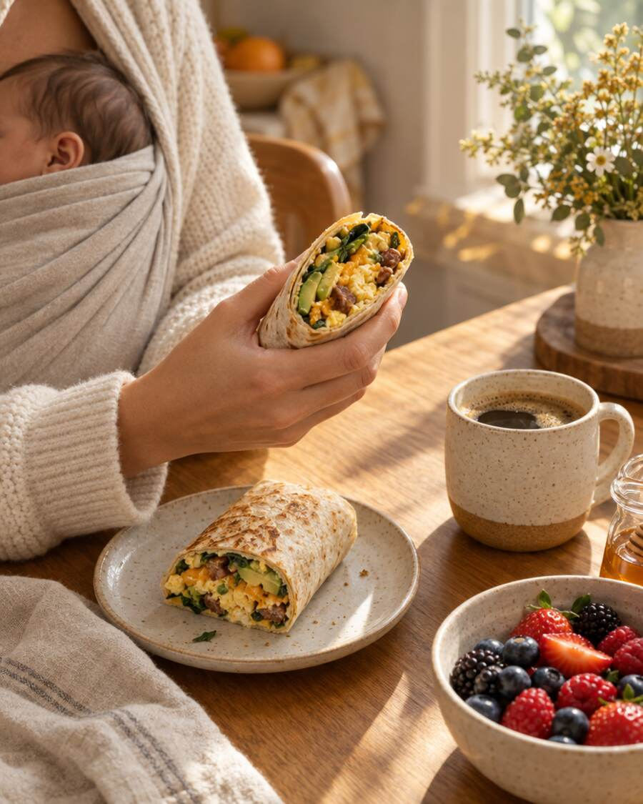
Ein Rezept. Eine Hand frei.
Ein guter Tag.
Honigmama · Band 3Grundlagen
Honigmama · Kraft-Küche fürs erste Jahr5
Energie statt Diät.
Dein Körper hat Großes geleistet
Gewicht und Figur verändern sich über viele Monate – das ist normal. Dieses Buch hilft dir, gut versorgt zu sein, nicht, schnell etwas loszuwerden.
Stillen braucht Energie
Wer voll stillt, braucht rund 500 kcal mehr pro Tag. Strenge Diäten sind in der Stillzeit nicht empfohlen; Hunger und Müdigkeit machen alles schwerer.
Satt, regelmäßig, bunt
Drei Mahlzeiten und zwei kleine Snacks mit Eiweiß, Vollkorn und Gemüse halten den Energiepegel stabiler als Kaffee und Kekse.
Wenn du abnehmen möchtest
Dann langsam und ohne Verbote – am besten abgesprochen mit deiner Ärztin oder Hebamme. Die Rezepte hier sind sättigend und eine gute Grundlage dafür.
Honigmama · Band 3Grundlagen
Honigmama · Kraft-Küche fürs erste Jahr6
Der Honigmama-Teller.
Halb Gemüse oder Obst
Die Hälfte des Tellers ist bunt: Rohkost, Ofengemüse, Salat oder Obst. Das bringt Vitamine, Ballaststoffe und Volumen.
Ein Viertel Eiweiß
Ei, Fisch, Fleisch, Hülsenfrüchte, Tofu, Quark oder Käse. Eiweiß macht lange satt – darum steckt es in jedem Rezept dieses Buchs.
Ein Viertel Vollkorn
Vollkornbrot, Haferflocken, Vollkornnudeln, Reis, Kartoffeln. Sie liefern Energie, die nicht sofort verpufft.
Plus Wasser und etwas Gutes
Ein Glas Wasser zu jeder Mahlzeit und jedem Stillen. Dazu eine kleine Portion gutes Fett: Nüsse, Olivenöl, Avocado.
Honigmama · Band 3Grundlagen
Honigmama · Kraft-Küche fürs erste Jahr7
Was du jetzt brauchst.
Eisen und Eiweiß
Nach der Geburt sind die Eisenspeicher oft leer. Rotes Fleisch, Linsen und Haferflocken liefern Eisen – mit Vitamin C aus Paprika, Zitrus oder Beeren wird es besser aufgenommen.
Jod und Omega-3
Ein- bis zweimal pro Woche Fisch, davon einmal fettreicher Seefisch wie Lachs. Würze mit Jodsalz. Eine Jodtablette wird für Stillende meist zusätzlich empfohlen – sprich die Dosis ärztlich ab.
Calcium
Milchprodukte, Käse, calciumreiches Mineralwasser, grünes Gemüse und Tofu. Wer keine Milchprodukte isst, sollte das mit einer Fachkraft besprechen.
Alkohol und Koffein
Alkohol möglichst meiden. Kaffee in moderater Menge – etwa drei Tassen über den Tag verteilt – gilt als unbedenklich.
Honigmama · Band 3Grundlagen
Honigmama · Kraft-Küche fürs erste Jahr8
Fürs Baby abzweigen.
Ab Beikoststart
Meist zwischen dem 5. und 7. Monat, sobald dein Baby Interesse zeigt und gut sitzen kann. Sprich den Start mit deiner Kinderärztin oder Hebamme ab.
Vor dem Würzen abnehmen
Babys brauchen kein Salz und keine scharfen Gewürze. Nimm die Portion ab, bevor du salzt – im Kasten „Fürs Baby“ steht, wann genau.
Kein Honig im ersten Jahr
Honig kann Sporen enthalten, die für Babys gefährlich sind. Honig im Rezept gilt deshalb nur für die Erwachsenen-Portion.
Sicher essen
Anfangs fein püriert, dann zerdrückt, später weiche Stücke. Ganze Nüsse, Popcorn, ganze Trauben und harte rohe Gemüsestücke sind wegen Verschluckungsgefahr nicht geeignet.
Honigmama · Band 3Grundlagen
Honigmama · Kraft-Küche fürs erste Jahr9
Deine Snack-Station.
Ein Korb am Stillplatz
Wasserflasche, eine Handvoll Nüsse, Vollkorncracker, Obst, ein Riegel. Morgens auffüllen – so musst du nicht aufstehen, wenn der Hunger kommt.
Das Sofort-Fach im Kühlschrank
Hart gekochte Eier, Hüttenkäse, Gemüsesticks im Wasserglas, Hummus, Joghurt. Alles, was ohne Messer geht.
Der 15-Minuten-Vorrat
TK-Erbsen und -Spinat, Dosenlinsen und Kichererbsen, Vollkornnudeln, Tortillas, Haferflocken, Eier, Feta, passierte Tomaten. Damit gelingt fast jedes Rezept aus Kapitel 2.
Nachts
Gegen Heißhunger um drei Uhr helfen Snacks mit Eiweiß besser als Süßes: Hüttenkäse, Nüsse, ein Käsebrot.
Honigmama · Kapitel 01
Einhand-Frühstück
Frühstücke, die du mit einer Hand essen kannst – oder in fünf Minuten fertig sind.
Honigmama · Band 3Einhand-Frühstück
Honigmama · Kraft-Küche fürs erste Jahr11
Kapitel 01
Einhand-Frühstück
Frühstücke, die du mit einer Hand essen kannst – oder in fünf Minuten fertig sind. Zeiten sind Richtwerte; Zutaten, Zubereitung und Tipps stehen beim Rezept.
Honigmama · Band 3Einhand-Frühstück
Honigmama · Kraft-Küche fürs erste Jahr12
F01Einhand-Frühstück
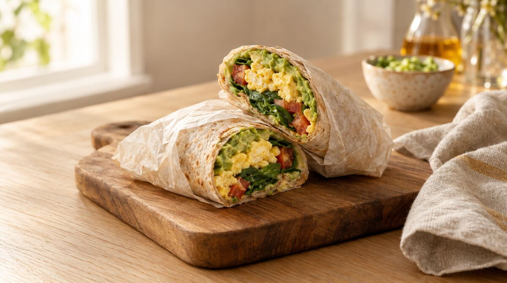
Honigmamas Morgenwrap
Frühstücks-Wrap mit Rührei & Avocado
10 Min. · davon aktiv 10 Min. · ergibt 2 Wraps · vegetarisch
WARUM DAS GUT TUT
Eier und Käse liefern Eiweiß, Avocado gesunde Fette und Folat, Vollkorn Ballaststoffe. Eingewickelt lässt sich der Wrap mit einer Hand essen – auch beim Stillen.
Honigmama · Band 3Einhand-Frühstück
Honigmama · Kraft-Küche fürs erste Jahr13
F01
Frühstücks-Wrap mit Rührei & Avocado
10 Min. · davon aktiv 10 Min. · ergibt 2 Wraps · vegetarisch
ZUTATEN
4 Eier
1 TL Butter
2 Vollkorn-Tortillas
1 reife Avocado
1 Tomate
1 Handvoll Babyspinat
40 g geriebener Käse
Allergene: Ei, Milch, glutenhaltiges Getreide (Weizen). Etiketten prüfen.
SCHRITT FÜR SCHRITT
1Eier verquirlen, salzen und pfeffern.
2Butter in einer Pfanne erhitzen, Eier unter Rühren vollständig stocken lassen.
3Avocado zerdrücken, Tomate würfeln.
4Tortillas kurz in der trockenen Pfanne erwärmen, mit Avocado bestreichen, Rührei, Spinat, Tomate und Käse daraufgeben.
5Seiten einschlagen und fest aufrollen, in Backpapier wickeln.
SCHNELLER GEHT'S
Rührei-Füllung für 3 Tage vorbereiten und im Kühlschrank lagern; morgens nur noch Wrap wärmen und rollen.
FRISCH HALTEN
Fertig gerollt im Kühlschrank bis zum Abend, nicht länger.
Honigmama · Band 3Einhand-Frühstück
Honigmama · Kraft-Küche fürs erste Jahr14
F02Einhand-Frühstück
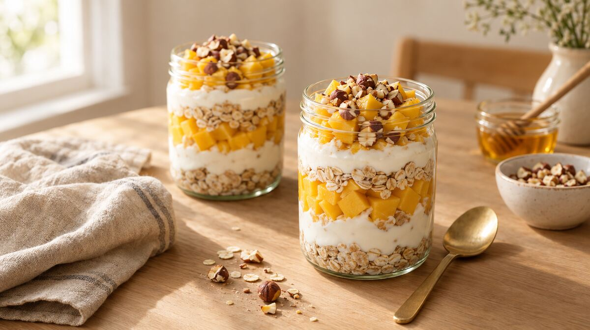
Honigmamas Schichtglas
Joghurt-Hafer-Schichtglas mit Mango
5 Min. · davon aktiv 5 Min. · ergibt 2 Gläser · vegetarisch
WARUM DAS GUT TUT
Griechischer Joghurt liefert besonders viel Eiweiß und Calcium, Mango Vitamin C und Süße. Am Abend geschichtet, ist das Frühstück morgens schon fertig.
Honigmama · Band 3Einhand-Frühstück
Honigmama · Kraft-Küche fürs erste Jahr15
F02
Joghurt-Hafer-Schichtglas mit Mango
5 Min. · davon aktiv 5 Min. · ergibt 2 Gläser · vegetarisch
ZUTATEN
300 g griechischer Joghurt (10 %)
60 g zarte Haferflocken
1 reife Mango
2 EL gehackte Haselnüsse
1 EL Honig
1 EL geschrotete Leinsamen
Allergene: Milch, Schalenfrüchte (Haselnüsse), glutenhaltiges Getreide (Hafer). Etiketten prüfen.
SCHRITT FÜR SCHRITT
1Mango schälen und würfeln.
2Joghurt mit Honig verrühren.
3Haferflocken und Leinsamen mischen.
4Abwechselnd Joghurt, Hafer und Mango in zwei Schraubgläser schichten.
5Mit Haselnüssen bestreuen und verschließen.
SCHNELLER GEHT'S
Gleich vier Gläser schichten – die Nüsse aber erst morgens darüberstreuen, damit sie knackig bleiben.
FRISCH HALTEN
Im Kühlschrank bis zu 2 Tage.
Honigmama · Band 3Einhand-Frühstück
Honigmama · Kraft-Küche fürs erste Jahr16
F03Einhand-Frühstück
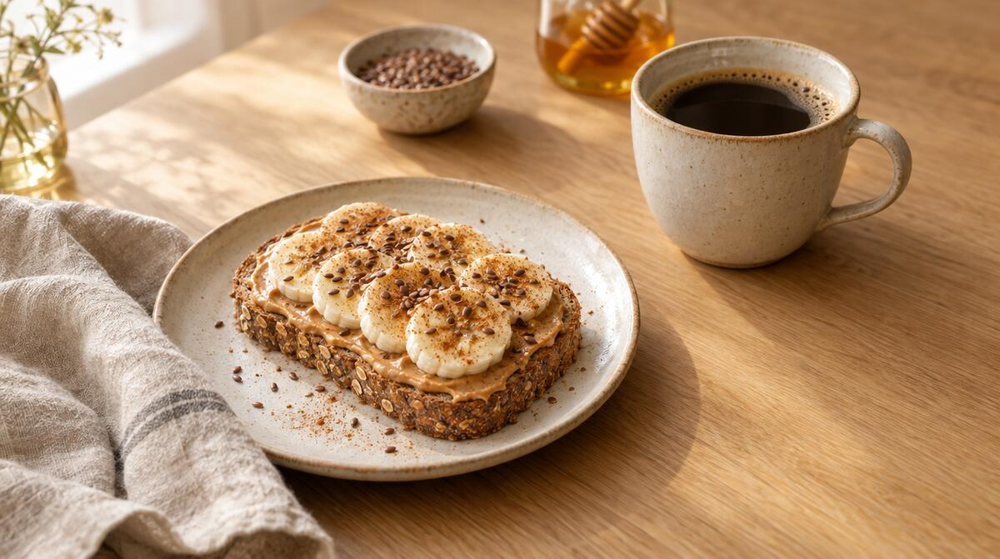
Honigmamas Schnellstart
Erdnussbutter-Bananen-Toast mit Leinsamen
5 Min. · davon aktiv 5 Min. · ergibt 1 Portion · vegan
WARUM DAS GUT TUT
Eiweiß und gesunde Fette aus Erdnüssen, schnelle Energie aus der Banane und langanhaltende aus Vollkorn – in fünf Minuten fertig.
Honigmama · Band 3Einhand-Frühstück
Honigmama · Kraft-Küche fürs erste Jahr17
F03
Erdnussbutter-Bananen-Toast mit Leinsamen
5 Min. · davon aktiv 5 Min. · ergibt 1 Portion · vegan
ZUTATEN
2 Scheiben Vollkornbrot
2 EL Erdnussmus ohne Zucker
1 Banane
1 TL geschrotete Leinsamen
1 Prise Zimt
Allergene: Erdnüsse, glutenhaltiges Getreide. Etiketten prüfen.
SCHRITT FÜR SCHRITT
2Mit Erdnussmus bestreichen.
3Banane in Scheiben schneiden und darauflegen.
4Mit Leinsamen und Zimt bestreuen.
5Zusammenklappen, wenn du eine Hand frei behalten willst.
SCHNELLER GEHT'S
Toast zusammenklappen und halbieren: So wird es ein Sandwich für die Hand.
FRISCH HALTEN
Frisch essen.
Honigmama · Band 3Einhand-Frühstück
Honigmama · Kraft-Küche fürs erste Jahr18
F04Einhand-Frühstück
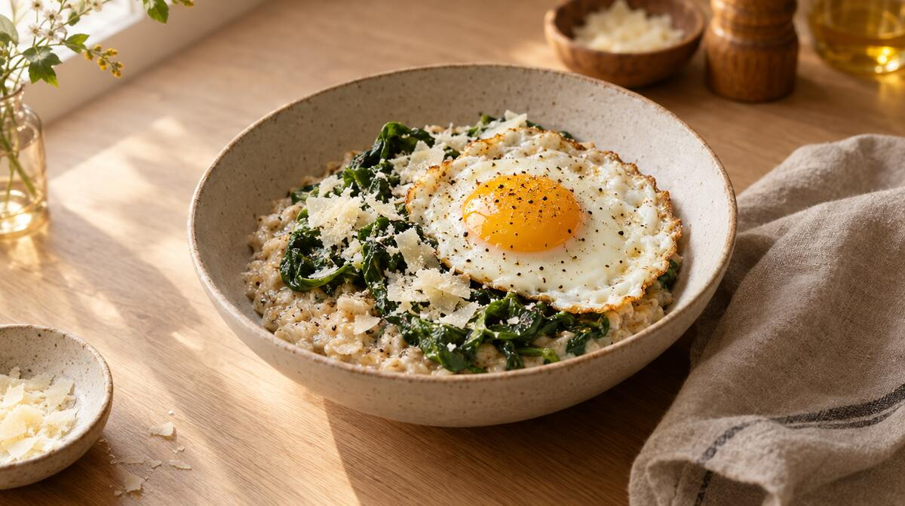
Honigmamas Herzhafter Brei
Herzhafter Haferbrei mit Spiegelei & Spinat
12 Min. · davon aktiv 10 Min. · ergibt 1 Portion · vegetarisch
WARUM DAS GUT TUT
Ein warmes, herzhaftes Frühstück mit Eiweiß aus Ei und Käse, Ballaststoffen aus Hafer und Folat aus Spinat. Für alle, die morgens nichts Süßes mögen.
Honigmama · Band 3Einhand-Frühstück
Honigmama · Kraft-Küche fürs erste Jahr19
F04
Herzhafter Haferbrei mit Spiegelei & Spinat
12 Min. · davon aktiv 10 Min. · ergibt 1 Portion · vegetarisch
ZUTATEN
50 g zarte Haferflocken
250 ml Gemüsebrühe
1 Handvoll Babyspinat
1 Ei
1 TL Butter
1 EL geriebener Parmesan
1 Prise Chiliflocken (optional)
Allergene: Ei, Milch, glutenhaltiges Getreide (Hafer). Brühe: Sellerie. Etiketten prüfen.
SCHRITT FÜR SCHRITT
1Haferflocken in der Brühe aufkochen und unter Rühren 3 Minuten köcheln.
2Spinat unterrühren, bis er zusammenfällt. Parmesan einrühren.
3Butter in einer kleinen Pfanne erhitzen und das Ei braten, bis das Eiweiß ganz fest ist; das Eigelb nach Geschmack fest oder weich.
4Brei in eine Schüssel geben, Ei daraufsetzen.
5Mit Pfeffer und nach Wunsch Chiliflocken würzen.
SCHNELLER GEHT'S
Seit der Geburt gelten die Schwangerschaftsregeln für Eier nicht mehr streng – ein weiches Eigelb ist in der Stillzeit in Ordnung, wenn die Eier frisch sind.
FRISCH HALTEN
Frisch essen.
Honigmama · Band 3Einhand-Frühstück
Honigmama · Kraft-Küche fürs erste Jahr20
F05Einhand-Frühstück
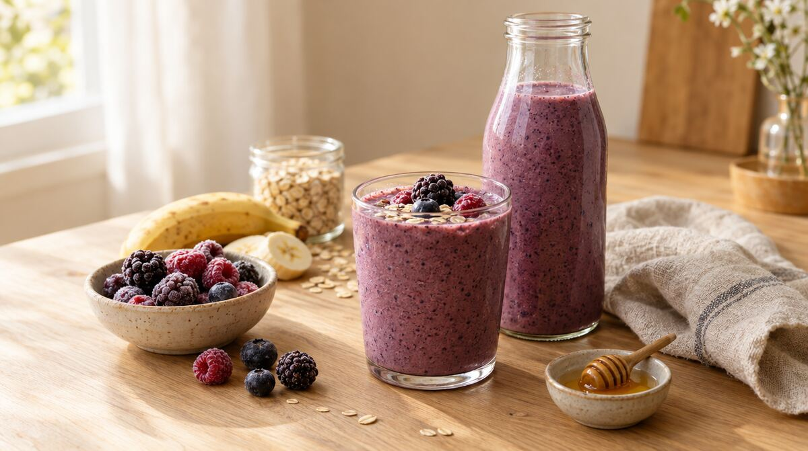
Honigmamas Beerenbecher
Beeren-Hafer-Smoothie zum Trinken
5 Min. · davon aktiv 5 Min. · ergibt 2 Gläser · vegetarisch
WARUM DAS GUT TUT
Ein Frühstück zum Trinken: Beeren liefern Vitamin C, Joghurt Eiweiß und Calcium, Hafer und Mandelmus halten länger satt als reiner Obstsaft.
Honigmama · Band 3Einhand-Frühstück
Honigmama · Kraft-Küche fürs erste Jahr21
F05
Beeren-Hafer-Smoothie zum Trinken
5 Min. · davon aktiv 5 Min. · ergibt 2 Gläser · vegetarisch
ZUTATEN
200 g TK-Beerenmischung
1 Banane
250 g Naturjoghurt
200 ml Milch oder Haferdrink
3 EL zarte Haferflocken
1 EL Mandelmus
Allergene: Milch, Schalenfrüchte (Mandeln), glutenhaltiges Getreide (Hafer). Etiketten prüfen.
SCHRITT FÜR SCHRITT
1Alle Zutaten in den Mixer geben.
21 Minute sehr fein mixen.
3Ist er zu dick, etwas Milch zugeben.
4In Gläser oder einen Becher mit Deckel füllen.
5Sofort trinken oder mitnehmen.
SCHNELLER GEHT'S
Zutaten (ohne Milch und Joghurt) portionsweise in Beuteln einfrieren – morgens nur noch in den Mixer kippen.
FRISCH HALTEN
Im Kühlschrank bis zu 12 Stunden; vor dem Trinken schütteln.
Honigmama · Band 3Einhand-Frühstück
Honigmama · Kraft-Küche fürs erste Jahr22
F06Einhand-Frühstück
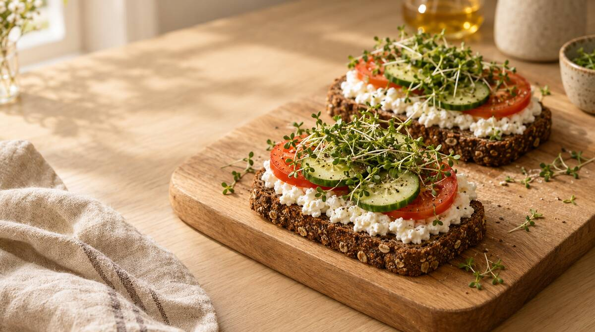
Honigmamas Abendbrot am Morgen
Hüttenkäse-Brot mit Tomate & Kresse
5 Min. · davon aktiv 5 Min. · ergibt 1 Portion · vegetarisch
WARUM DAS GUT TUT
Hüttenkäse liefert viel Eiweiß bei wenig Fett, Roggenvollkorn Ballaststoffe und sättigt lange. Frisch, salzig, knackig – fertig in fünf Minuten.
Honigmama · Band 3Einhand-Frühstück
Honigmama · Kraft-Küche fürs erste Jahr23
F06
Hüttenkäse-Brot mit Tomate & Kresse
5 Min. · davon aktiv 5 Min. · ergibt 1 Portion · vegetarisch
ZUTATEN
2 Scheiben Roggenvollkornbrot
100 g Hüttenkäse
1 Tomate
¼ Salatgurke
1 Beet Kresse
Allergene: Milch, glutenhaltiges Getreide (Roggen). Etiketten prüfen.
SCHRITT FÜR SCHRITT
1Brot mit Hüttenkäse bestreichen.
2Tomate und Gurke in Scheiben schneiden und darauflegen.
3Kresse abschneiden und darüberstreuen.
4Mit Salz und Pfeffer würzen.
5Bei Bedarf in Streifen schneiden – so isst es sich mit einer Hand leichter.
SCHNELLER GEHT'S
Gurke und Tomate gleich für zwei Tage schneiden und in einer Dose kühlen.
FRISCH HALTEN
Frisch essen.
Honigmama · Band 3Einhand-Frühstück
Honigmama · Kraft-Küche fürs erste Jahr24
F07Einhand-Frühstück
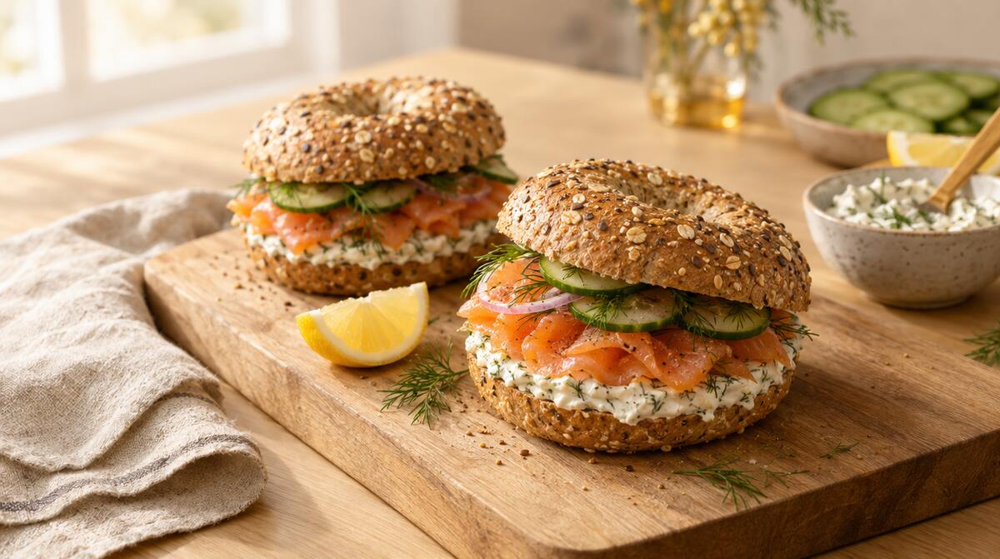
Honigmamas Wochenend-Bagel
Vollkorn-Bagel mit Lachs-Frischkäse
8 Min. · davon aktiv 8 Min. · ergibt 2 Bagels · mit Fisch
WARUM DAS GUT TUT
Lachs liefert Omega-3-Fettsäuren und Jod, Frischkäse Calcium. In der Stillzeit ist Räucherlachs wieder erlaubt – ein kleiner Genussmoment nach neun Monaten Verzicht.
Honigmama · Band 3Einhand-Frühstück
Honigmama · Kraft-Küche fürs erste Jahr25
F07
Vollkorn-Bagel mit Lachs-Frischkäse
8 Min. · davon aktiv 8 Min. · ergibt 2 Bagels · mit Fisch
ZUTATEN
2 Vollkorn-Bagels
100 g Frischkäse
100 g Räucherlachs
½ Salatgurke
1 Bio-Zitrone
½ Bund Dill
Allergene: Fisch, Milch, glutenhaltiges Getreide. Bagels: ggf. Sesam. Etiketten prüfen.
SCHRITT FÜR SCHRITT
1Bagels halbieren und toasten.
2Frischkäse mit Zitronenabrieb, gehacktem Dill und Pfeffer verrühren.
3Gurke in dünne Scheiben schneiden.
4Bagels mit Frischkäse bestreichen, mit Gurke und Lachs belegen.
5Deckel auflegen und halbieren.
SCHNELLER GEHT'S
Den Kräuter-Frischkäse für die ganze Woche anrühren (5 Tage haltbar).
FRISCH HALTEN
Belegt bis zu 4 Stunden gekühlt.
Honigmama · Band 3Einhand-Frühstück
Honigmama · Kraft-Küche fürs erste Jahr26
F08Einhand-Frühstück
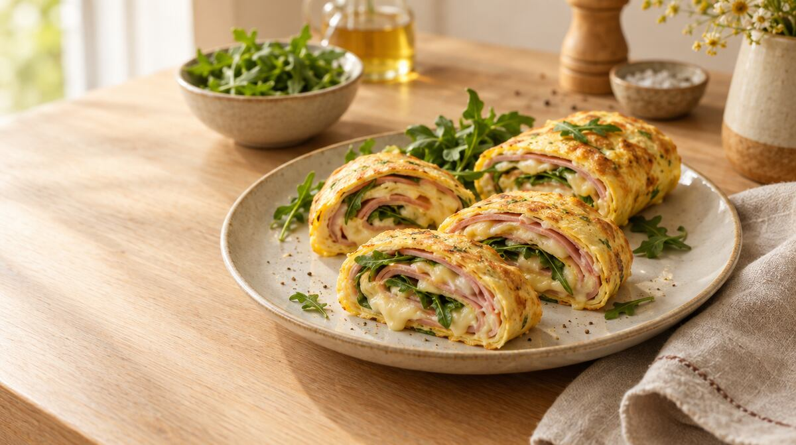
Honigmamas Röllchen
Käse-Omelett-Röllchen mit Schinken
10 Min. · davon aktiv 10 Min. · ergibt 2 Portionen · mit Fleisch
WARUM DAS GUT TUT
Low-Carb und eiweißreich: Eier, Käse und Schinken halten lange satt. Die Röllchen kann man kalt aus der Dose essen.
Honigmama · Band 3Einhand-Frühstück
Honigmama · Kraft-Küche fürs erste Jahr27
F08
Käse-Omelett-Röllchen mit Schinken
10 Min. · davon aktiv 10 Min. · ergibt 2 Portionen · mit Fleisch
ZUTATEN
4 Eier
2 EL Milch
1 TL Butter
4 Scheiben gekochter Schinken
4 Scheiben Käse (z. B. Gouda)
1 Handvoll Rucola
Allergene: Ei, Milch. Etiketten prüfen.
SCHRITT FÜR SCHRITT
1Eier mit Milch, Salz und Pfeffer verquirlen.
2Butter in einer großen Pfanne erhitzen, die Hälfte der Eier dünn verteilen und bei mittlerer Hitze fest stocken lassen.
3Mit 2 Scheiben Käse und Schinken belegen, kurz weiterbraten, bis der Käse schmilzt.
4Rucola darauflegen, Omelett aufrollen und in Stücke schneiden.
5Mit der zweiten Hälfte genauso verfahren.
SCHNELLER GEHT'S
Gleich doppelt machen – die Röllchen schmecken am nächsten Tag kalt als Snack.
FRISCH HALTEN
Im Kühlschrank bis zu 2 Tage.
Honigmama · Band 3Einhand-Frühstück
Honigmama · Kraft-Küche fürs erste Jahr28
F09Einhand-Frühstück
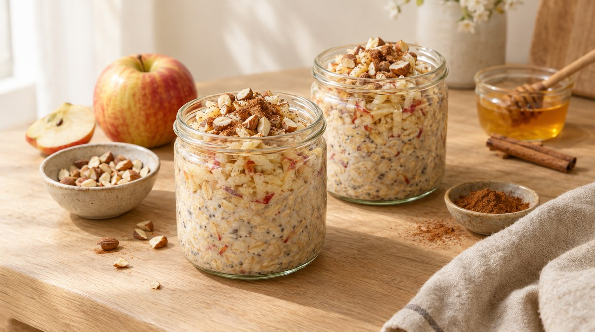
Honigmamas Overnight-Glas
Overnight Oats mit Apfel & Zimt
5 Min. · davon aktiv 5 Min. · ergibt 2 Gläser · vegetarisch
WARUM DAS GUT TUT
Am Abend in fünf Minuten vorbereitet, morgens sofort essbereit. Hafer und Leinsamen liefern Ballaststoffe, Joghurt Eiweiß und Calcium.
Honigmama · Band 3Einhand-Frühstück
Honigmama · Kraft-Küche fürs erste Jahr29
F09
Overnight Oats mit Apfel & Zimt
5 Min. · davon aktiv 5 Min. · ergibt 2 Gläser · vegetarisch
ZUTATEN
100 g zarte Haferflocken
250 ml Milch oder Haferdrink
150 g Naturjoghurt
1 Apfel
1 EL geschrotete Leinsamen
1 TL Zimt
2 EL gehackte Mandeln
Allergene: Milch, glutenhaltiges Getreide (Hafer), Schalenfrüchte (Mandeln). Etiketten prüfen.
SCHRITT FÜR SCHRITT
1Haferflocken, Milch, Joghurt, Leinsamen und Zimt in zwei Gläsern verrühren.
2Apfel grob raspeln und zur Hälfte unterrühren.
3Gläser verschließen und über Nacht in den Kühlschrank stellen.
4Morgens mit restlichem Apfel und Mandeln bestreuen.
SCHNELLER GEHT'S
Gleich vier Gläser ansetzen – sie halten sich 2 Tage im Kühlschrank.
FRISCH HALTEN
Gekühlt bis zu 2 Tage.
Honigmama · Band 3Einhand-Frühstück
Honigmama · Kraft-Küche fürs erste Jahr30
F10Einhand-Frühstück
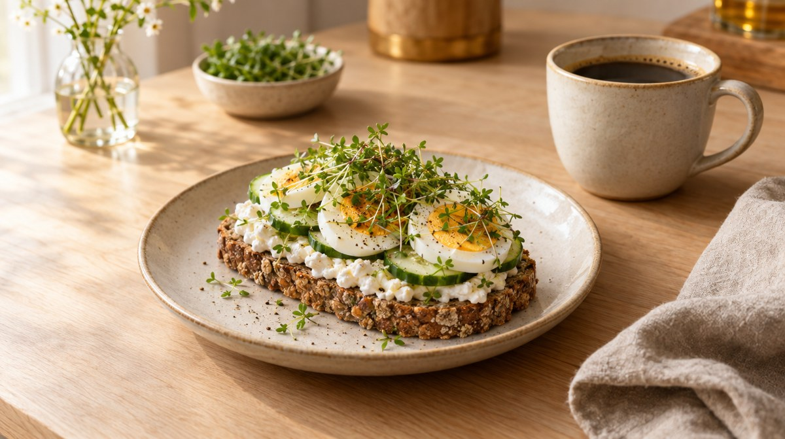
Honigmamas Käsetoast
Vollkorn-Toast mit Hüttenkäse, Ei & Gurke
10 Min. · davon aktiv 10 Min. · ergibt 1 Portion · vegetarisch
WARUM DAS GUT TUT
Hüttenkäse und Ei bringen viel Eiweiß bei wenig Aufwand, Vollkorn sättigt lange. In der Hand gegessen, auch zwischen zwei Windeln.
Honigmama · Band 3Einhand-Frühstück
Honigmama · Kraft-Küche fürs erste Jahr31
F10
Vollkorn-Toast mit Hüttenkäse, Ei & Gurke
10 Min. · davon aktiv 10 Min. · ergibt 1 Portion · vegetarisch
ZUTATEN
2 Scheiben Vollkornbrot
100 g Hüttenkäse
1 Ei
¼ Salatgurke
1 Handvoll Kresse
Allergene: Glutenhaltiges Getreide, Milch, Ei. Etiketten prüfen.
SCHRITT FÜR SCHRITT
1Ei in 9 Minuten hart kochen, abschrecken und pellen.
2Brot toasten und mit Hüttenkäse bestreichen.
3Gurke und Ei in Scheiben schneiden und darauflegen.
4Mit Kresse, Salz und Pfeffer bestreuen.
SCHNELLER GEHT'S
Gleich 4–5 Eier kochen; geschält halten sie gekühlt 2 Tage, ungeschält bis zu einer Woche.
FRISCH HALTEN
Frisch belegt essen.
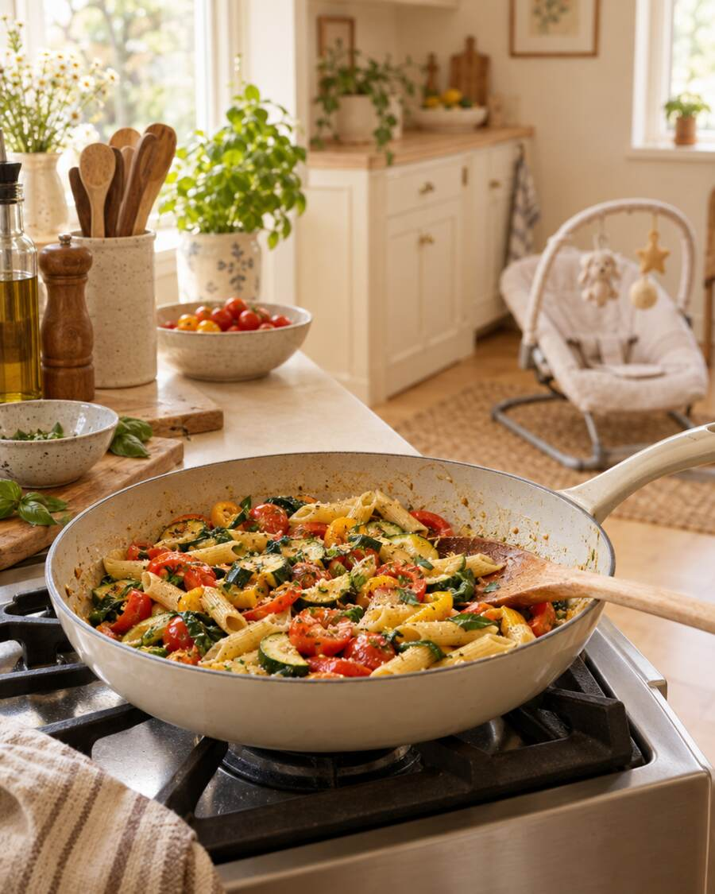
Honigmama · Kapitel 02
Mittag in 15 Minuten
Warm, satt und schneller fertig als jeder Lieferdienst.
Honigmama · Band 3Mittag in 15 Minuten
Honigmama · Kraft-Küche fürs erste Jahr33
Kapitel 02
Mittag in 15 Minuten
Warm, satt und schneller fertig als jeder Lieferdienst. Zeiten sind Richtwerte; Zutaten, Zubereitung und Tipps stehen beim Rezept.
Honigmama · Band 3Mittag in 15 Minuten
Honigmama · Kraft-Küche fürs erste Jahr34
M01Mittag in 15 Minuten
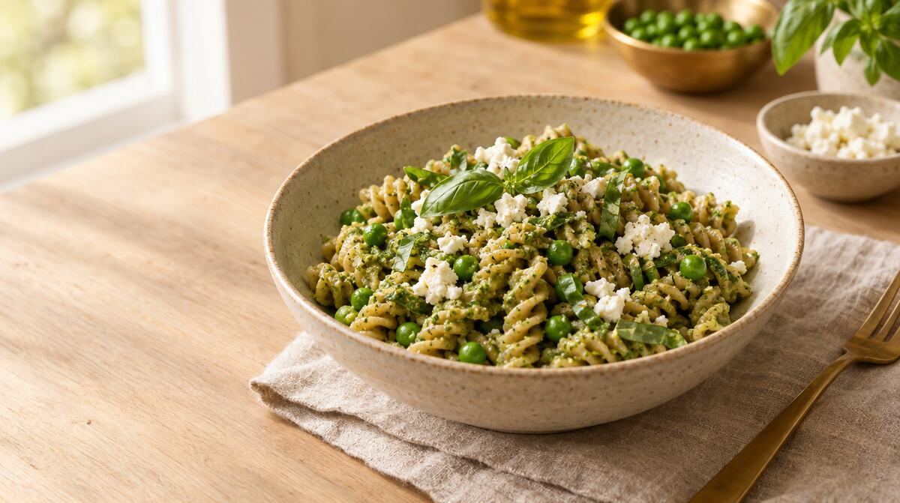
Honigmamas Grünes Wunder
Vollkornnudeln mit Erbsen-Pesto & Feta
15 Min. · davon aktiv 10 Min. · ergibt 2 Portionen · vegetarisch
WARUM DAS GUT TUT
Erbsen sind kleine Eiweiß-Bomben und bringen Ballaststoffe; zusammen mit Vollkornnudeln und Feta ein ausgewogenes, sattmachendes Mittagessen.
Honigmama · Band 3Mittag in 15 Minuten
Honigmama · Kraft-Küche fürs erste Jahr35
M01
Vollkornnudeln mit Erbsen-Pesto & Feta
15 Min. · davon aktiv 10 Min. · ergibt 2 Portionen · vegetarisch
ZUTATEN
200 g Vollkorn-Fusilli
250 g TK-Erbsen
1 Handvoll Basilikum
2 EL Mandeln
1 Zehe Knoblauch
3 EL Olivenöl
1 Zitrone
80 g Feta
Allergene: Glutenhaltiges Getreide, Milch, Schalenfrüchte (Mandeln). Etiketten prüfen.
SCHRITT FÜR SCHRITT
1Nudeln nach Packungsangabe kochen, in den letzten 3 Minuten 200 g Erbsen mitgaren.
2Restliche Erbsen (50 g) kurz mit heißem Wasser übergießen.
3Diese Erbsen mit Basilikum, Mandeln, Knoblauch, Öl, etwas Zitronensaft und 3 EL Nudelwasser zu einem Pesto pürieren.
4Nudeln und Erbsen abgießen und mit dem Pesto mischen.
5Mit zerbröseltem Feta und Pfeffer servieren.
SCHNELLER GEHT'S
Pesto gleich in doppelter Menge machen – im Glas mit Öl bedeckt 4 Tage haltbar.
FRISCH HALTEN
Reste im Kühlschrank 2 Tage, kalt als Nudelsalat.
Honigmama · Band 3Mittag in 15 Minuten
Honigmama · Kraft-Küche fürs erste Jahr36
M02Mittag in 15 Minuten
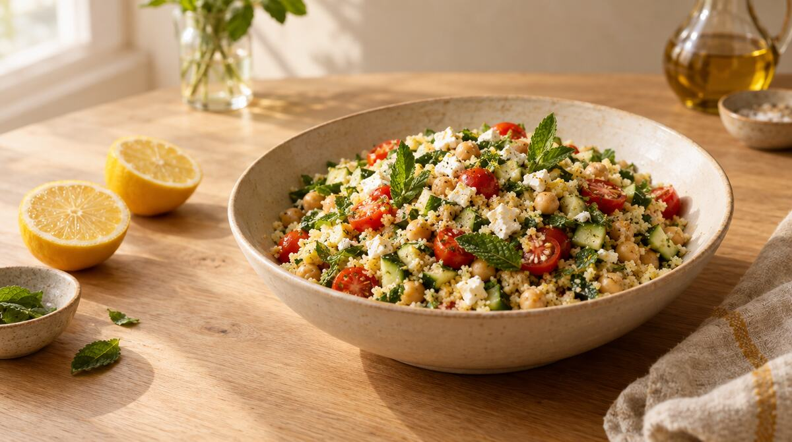
Honigmamas Sommerschale
Couscous-Salat mit Kichererbsen, Gurke & Minze
12 Min. · davon aktiv 10 Min. · ergibt 3 Portionen · vegetarisch
WARUM DAS GUT TUT
Couscous braucht nur kochendes Wasser – kein Herd, kein Topf zum Abwaschen. Kichererbsen und Feta liefern Eiweiß, das Gemüse Frische und Vitamin C.
Honigmama · Band 3Mittag in 15 Minuten
Honigmama · Kraft-Küche fürs erste Jahr37
M02
Couscous-Salat mit Kichererbsen, Gurke & Minze
12 Min. · davon aktiv 10 Min. · ergibt 3 Portionen · vegetarisch
ZUTATEN
150 g Vollkorn-Couscous
1 Dose (400 g) Kichererbsen
1 Salatgurke
200 g Kirschtomaten
1 Bund Minze oder Petersilie
1 Zitrone
3 EL Olivenöl
100 g Feta
Allergene: Glutenhaltiges Getreide (Weizen), Milch. Etiketten prüfen.
SCHRITT FÜR SCHRITT
1Couscous mit 200 ml kochendem, gesalzenem Wasser übergießen und 5 Minuten zugedeckt quellen lassen.
2Kichererbsen abspülen. Gurke würfeln, Tomaten halbieren, Kräuter hacken.
3Zitronensaft, Öl, Salz und Pfeffer verrühren.
4Couscous mit einer Gabel auflockern, mit allem mischen.
SCHNELLER GEHT'S
Hält gekühlt 3 Tage: Gleich die doppelte Menge machen und als Mittag für morgen einpacken.
FRISCH HALTEN
Im Kühlschrank bis zu 3 Tage.
Honigmama · Band 3Mittag in 15 Minuten
Honigmama · Kraft-Küche fürs erste Jahr38
M03Mittag in 15 Minuten
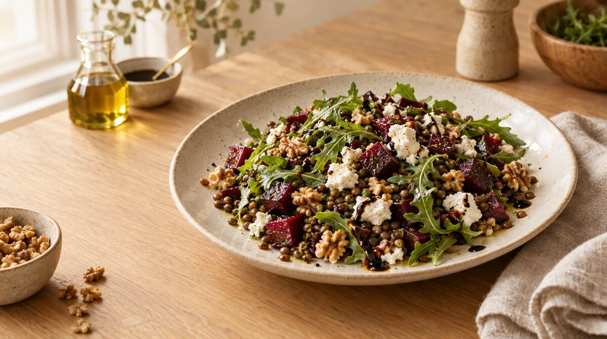
Honigmamas Rubinsalat
Linsensalat mit Rote Bete & Ziegenkäse
10 Min. · davon aktiv 10 Min. · ergibt 2 Portionen · vegetarisch
WARUM DAS GUT TUT
Linsen liefern Eisen und Eiweiß, Rote Bete Folat, Walnüsse Omega-3 aus Pflanzen. Fertig ohne Kochen – aus Dose und Vakuumpackung.
Honigmama · Band 3Mittag in 15 Minuten
Honigmama · Kraft-Küche fürs erste Jahr39
M03
Linsensalat mit Rote Bete & Ziegenkäse
10 Min. · davon aktiv 10 Min. · ergibt 2 Portionen · vegetarisch
ZUTATEN
1 Dose (400 g) Linsen (abgetropft ca. 260 g)
250 g gekochte Rote Bete (vakuumiert)
2 Handvoll Rucola
100 g Ziegenfrischkäse
2 EL Walnüsse
2 EL Olivenöl
1 EL Balsamico
1 TL Honig
Allergene: Milch, Schalenfrüchte (Walnüsse). Etiketten prüfen.
SCHRITT FÜR SCHRITT
1Linsen abspülen und abtropfen lassen.
3Öl, Balsamico, Honig, Salz und Pfeffer verrühren und mit Linsen und Roter Bete mischen.
5Ziegenkäse darüberbröckeln und Walnüsse darüberstreuen.
SCHNELLER GEHT'S
Für unterwegs Rucola und Dressing getrennt einpacken.
FRISCH HALTEN
Ohne Rucola im Kühlschrank bis zu 2 Tage.
Honigmama · Band 3Mittag in 15 Minuten
Honigmama · Kraft-Küche fürs erste Jahr40
M04Mittag in 15 Minuten
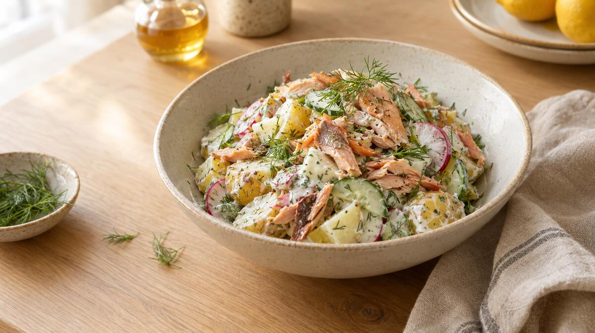
Honigmamas Nordsee-Teller
Kartoffelsalat mit Räucherforelle & Gurke
15 Min. · davon aktiv 10 Min. · ergibt 2 Portionen · mit Fisch
WARUM DAS GUT TUT
Forelle ist ein fettreicher Fisch mit Omega-3-Fettsäuren und wenig Schadstoffbelastung – eine gute Wahl für die empfohlene Fischmahlzeit in der Stillzeit.
Honigmama · Band 3Mittag in 15 Minuten
Honigmama · Kraft-Küche fürs erste Jahr41
M04
Kartoffelsalat mit Räucherforelle & Gurke
15 Min. · davon aktiv 10 Min. · ergibt 2 Portionen · mit Fisch
ZUTATEN
400 g festkochende Drillinge
150 g Räucherforellenfilet
½ Salatgurke
150 g Naturjoghurt
1 TL Senf
1 TL Meerrettich (Glas)
½ Bund Dill
2 Radieschen
Allergene: Fisch, Milch, Senf. Etiketten prüfen.
SCHRITT FÜR SCHRITT
1Drillinge halbieren und in Salzwasser 12 Minuten garen (oder vom Vortag verwenden).
2Joghurt mit Senf, Meerrettich, gehacktem Dill, Salz und Pfeffer verrühren.
3Gurke und Radieschen in dünne Scheiben schneiden.
4Kartoffeln abgießen und kurz ausdampfen lassen, mit Dressing und Gemüse mischen.
5Forelle in Stücke zupfen und daraufgeben.
SCHNELLER GEHT'S
Kartoffeln vom Vorabend verwenden – dann sind es nur noch 5 Minuten.
FRISCH HALTEN
Im Kühlschrank bis zu 1 Tag.
Honigmama · Band 3Mittag in 15 Minuten
Honigmama · Kraft-Küche fürs erste Jahr42
M05Mittag in 15 Minuten
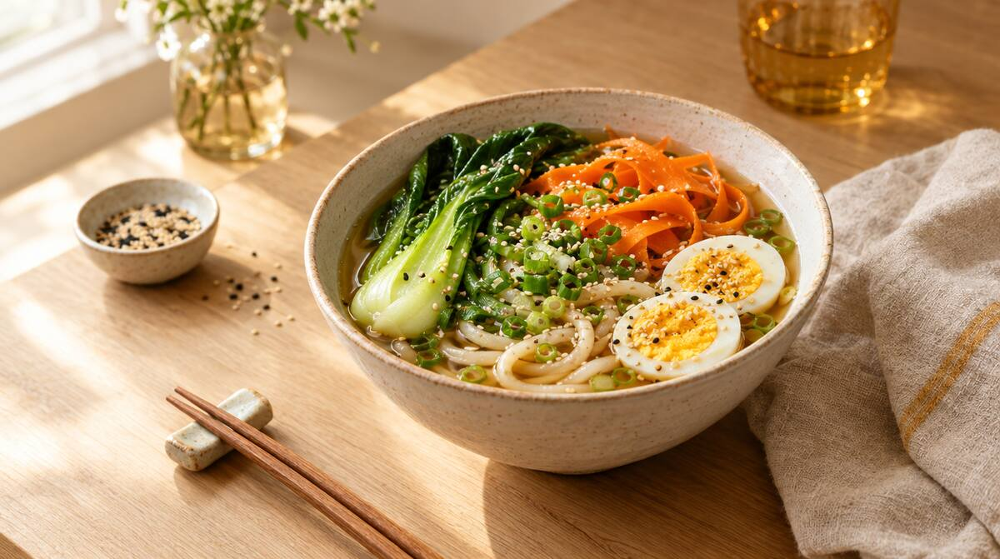
Honigmamas Wärmeschale
Schnelle Nudelsuppe mit Ei & Pak Choi
15 Min. · davon aktiv 10 Min. · ergibt 2 Portionen · vegetarisch
WARUM DAS GUT TUT
Eine warme Schale, die wie Selbstfürsorge schmeckt: Eier liefern Eiweiß, Pak Choi Calcium und Vitamin C, die Brühe Flüssigkeit – wichtig, wenn du stillst.
Honigmama · Band 3Mittag in 15 Minuten
Honigmama · Kraft-Küche fürs erste Jahr43
M05
Schnelle Nudelsuppe mit Ei & Pak Choi
15 Min. · davon aktiv 10 Min. · ergibt 2 Portionen · vegetarisch
ZUTATEN
1 l Gemüsebrühe
1 Stück (15 g) Ingwer
2 EL Sojasauce
150 g Udon- oder Ramen-Nudeln
2 Pak Choi
1 Möhre
2 Eier
2 Frühlingszwiebeln
1 TL Sesamöl
Allergene: Ei, Soja, glutenhaltiges Getreide (Weizen), Sesam. Brühe: Sellerie. Etiketten prüfen.
SCHRITT FÜR SCHRITT
1Eier 8 Minuten hart kochen, abschrecken und schälen.
2Brühe mit geriebenem Ingwer und Sojasauce aufkochen.
3Möhre in feine Streifen, Pak Choi in Stücke schneiden.
4Nudeln, Möhre und Pak Choi 3–4 Minuten in der Brühe garen.
5In Schalen füllen, mit halbierten Eiern, Frühlingszwiebeln und Sesamöl servieren.
SCHNELLER GEHT'S
Gleich 6 Eier hart kochen – sie halten im Kühlschrank 1 Woche und sind ein schneller Snack.
FRISCH HALTEN
Frisch essen.
Honigmama · Band 3Mittag in 15 Minuten
Honigmama · Kraft-Küche fürs erste Jahr44
M06Mittag in 15 Minuten
Honigmamas Fiesta-Toast
Quesadillas mit Bohnen, Mais & Käse
15 Min. · davon aktiv 15 Min. · ergibt 2 Portionen · vegetarisch
WARUM DAS GUT TUT
Bohnen und Käse ergänzen sich zu einem eiweißreichen Mittagessen mit vielen Ballaststoffen – und in Dreiecke geschnitten sind Quesadillas echtes Fingerfood.
Honigmama · Band 3Mittag in 15 Minuten
Honigmama · Kraft-Küche fürs erste Jahr45
M06
Quesadillas mit Bohnen, Mais & Käse
15 Min. · davon aktiv 15 Min. · ergibt 2 Portionen · vegetarisch
ZUTATEN
4 Vollkorn-Tortillas
1 Dose (400 g) Kidneybohnen
150 g Mais (Dose)
1 rote Paprika
120 g geriebener Cheddar
½ TL Kreuzkümmel
150 g Naturjoghurt
1 Limette
Allergene: Glutenhaltiges Getreide (Weizen), Milch. Etiketten prüfen.
SCHRITT FÜR SCHRITT
1Bohnen abspülen und grob zerdrücken, Paprika fein würfeln.
2Bohnen, Mais, Paprika und Kreuzkümmel mischen, salzen.
3Auf 2 Tortillas verteilen, mit Käse bestreuen und mit den übrigen Tortillas bedecken.
4In einer Pfanne ohne Fett bei mittlerer Hitze je Seite 3 Minuten braten, bis der Käse geschmolzen ist.
5In Viertel schneiden, mit Limetten-Joghurt servieren.
SCHNELLER GEHT'S
Füllung auf Vorrat mischen: Sie hält gekühlt 3 Tage.
FRISCH HALTEN
Gebraten im Kühlschrank 1 Tag, in der Pfanne wieder knusprig machen.
Honigmama · Band 3Mittag in 15 Minuten
Honigmama · Kraft-Küche fürs erste Jahr46
M07Mittag in 15 Minuten
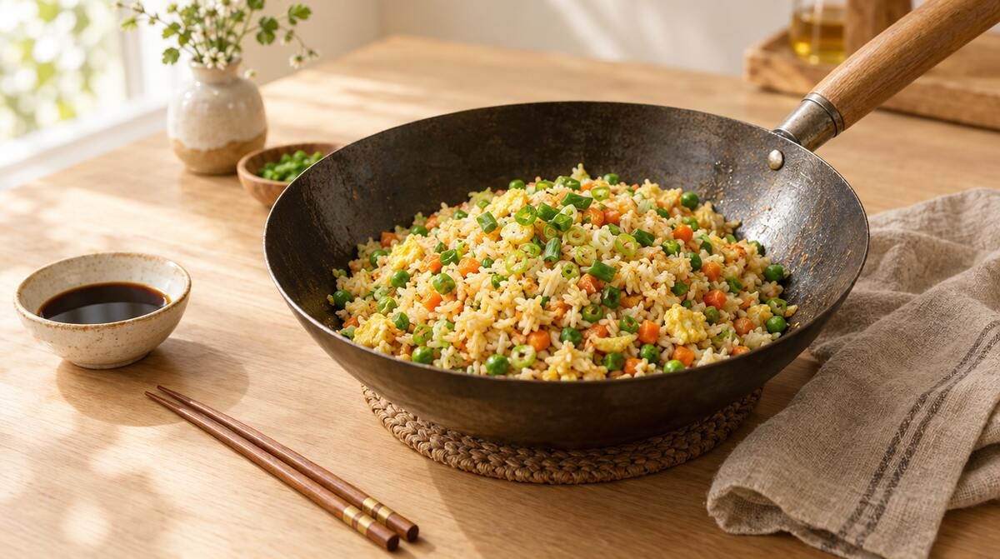
Honigmamas Restewunder
Gebratener Reis mit Ei & Erbsen
12 Min. · davon aktiv 12 Min. · ergibt 2 Portionen · vegetarisch
WARUM DAS GUT TUT
Aus Resten wird in zwölf Minuten eine vollwertige Mahlzeit mit Eiweiß aus Eiern und Gemüse. Kalter Reis vom Vortag brät sich besser als frischer.
Honigmama · Band 3Mittag in 15 Minuten
Honigmama · Kraft-Küche fürs erste Jahr47
M07
Gebratener Reis mit Ei & Erbsen
12 Min. · davon aktiv 12 Min. · ergibt 2 Portionen · vegetarisch
ZUTATEN
400 g gekochter Reis (vom Vortag, gekühlt)
2 EL Rapsöl
3 Eier
150 g TK-Erbsen
1 Möhre
2 Frühlingszwiebeln
2 EL Sojasauce
1 TL Sesamöl
Allergene: Ei, Soja, glutenhaltiges Getreide (Sojasauce), Sesam. Etiketten prüfen.
SCHRITT FÜR SCHRITT
1Möhre fein würfeln, Frühlingszwiebeln in Ringe schneiden.
21 EL Öl im Wok erhitzen, verquirlte Eier vollständig stocken lassen, zerteilen und herausnehmen.
3Restliches Öl erhitzen, Möhre und Erbsen 3 Minuten braten.
4Reis zugeben und unter Wenden 4 Minuten braten, bis er überall heiß ist.
5Ei, Sojasauce, Sesamöl und Frühlingszwiebeln unterheben.
SCHNELLER GEHT'S
Gekochten Reis schnell abkühlen und spätestens nach 2 Stunden in den Kühlschrank stellen; innerhalb von 1 Tag verbrauchen.
FRISCH HALTEN
Reste gekühlt 1 Tag, gut durcherhitzen.
Honigmama · Band 3Mittag in 15 Minuten
Honigmama · Kraft-Küche fürs erste Jahr48
M08Mittag in 15 Minuten
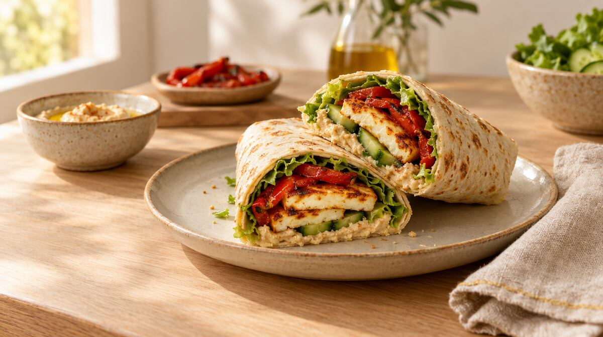
Honigmamas Grillwrap
Halloumi-Wrap mit Paprika & Hummus
12 Min. · davon aktiv 12 Min. · ergibt 2 Wraps · vegetarisch
WARUM DAS GUT TUT
Halloumi bringt viel Eiweiß und Calcium, Hummus zusätzlich pflanzliches Eiweiß. Warm, salzig, knusprig – ein Wrap, der nach Pause schmeckt.
Honigmama · Band 3Mittag in 15 Minuten
Honigmama · Kraft-Küche fürs erste Jahr49
M08
Halloumi-Wrap mit Paprika & Hummus
12 Min. · davon aktiv 12 Min. · ergibt 2 Wraps · vegetarisch
ZUTATEN
200 g Halloumi
1 rote Paprika
2 Vollkorn-Tortillas
4 EL Hummus
1 Handvoll Salatblätter
½ Salatgurke
1 TL Olivenöl
Allergene: Milch, glutenhaltiges Getreide, Sesam (Hummus). Etiketten prüfen.
SCHRITT FÜR SCHRITT
1Halloumi in Scheiben, Paprika in Streifen schneiden.
2Öl in einer Pfanne erhitzen, Paprika 4 Minuten braten, Halloumi je Seite 2 Minuten goldbraun braten.
3Gurke in Stifte schneiden.
4Tortillas mit Hummus bestreichen, mit Salat, Gurke, Paprika und Halloumi belegen.
5Fest aufrollen und halbieren.
SCHNELLER GEHT'S
Paprika gleich für zwei Tage braten.
FRISCH HALTEN
Frisch essen.
Honigmama · Band 3Mittag in 15 Minuten
Honigmama · Kraft-Küche fürs erste Jahr50
M09Mittag in 15 Minuten
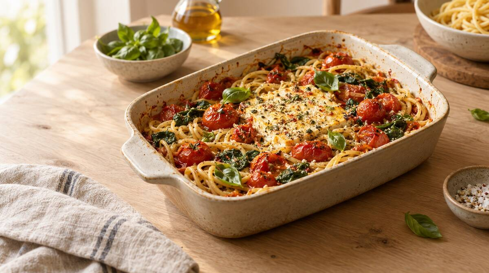
Honigmamas Ofenwunder
Ofen-Feta-Pasta mit Kirschtomaten & Spinat
25 Min. · davon aktiv 5 Min. · ergibt 3 Portionen · vegetarisch
WARUM DAS GUT TUT
Fünf Minuten Arbeit, den Rest macht der Ofen – Zeit, um das Baby zu wickeln. Feta liefert Calcium, Spinat Folat, Vollkornnudeln Ballaststoffe.
Honigmama · Band 3Mittag in 15 Minuten
Honigmama · Kraft-Küche fürs erste Jahr51
M09
Ofen-Feta-Pasta mit Kirschtomaten & Spinat
25 Min. · davon aktiv 5 Min. · ergibt 3 Portionen · vegetarisch
ZUTATEN
400 g Kirschtomaten
200 g Feta (Block)
3 EL Olivenöl
2 Zehen Knoblauch
1 TL getrockneter Oregano
250 g Vollkorn-Spaghetti
100 g Babyspinat
Allergene: Milch, glutenhaltiges Getreide. Etiketten prüfen.
SCHRITT FÜR SCHRITT
1Ofen auf 200 °C vorheizen.
2Tomaten in eine Form geben, Feta in die Mitte legen, Öl, Oregano und angedrückten Knoblauch darüber verteilen.
4Währenddessen die Nudeln kochen.
5Feta und Tomaten zerdrücken, Spinat und Nudeln unterheben.
SCHNELLER GEHT'S
Für die Familie verdoppeln: In einer großen Form gelingt es genauso.
FRISCH HALTEN
Reste gekühlt 2 Tage.
Honigmama · Band 3Mittag in 15 Minuten
Honigmama · Kraft-Küche fürs erste Jahr52
M10Mittag in 15 Minuten
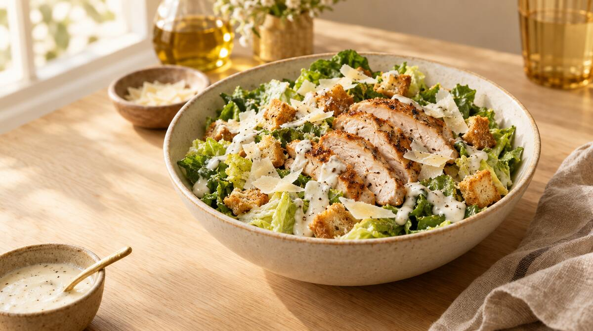
Honigmamas Caesar light
Hähnchen-Caesar-Bowl mit Joghurt-Dressing
15 Min. · davon aktiv 15 Min. · ergibt 2 Portionen · mit Fleisch
WARUM DAS GUT TUT
Die Klassiker-Version enthält rohes Eigelb; hier ersetzt Joghurt das Dressing – leichter, mit mehr Eiweiß und Calcium. Hähnchen liefert zusätzlich mageres Eiweiß.
Honigmama · Band 3Mittag in 15 Minuten
Honigmama · Kraft-Küche fürs erste Jahr53
M10
Hähnchen-Caesar-Bowl mit Joghurt-Dressing
15 Min. · davon aktiv 15 Min. · ergibt 2 Portionen · mit Fleisch
ZUTATEN
300 g Hähnchenbrustfilet
1 TL Olivenöl
1 Römersalat
2 Scheiben Vollkornbrot
150 g Naturjoghurt
30 g Parmesan
1 TL Senf
1 Zitrone
1 Zehe Knoblauch
Allergene: Milch, Senf, glutenhaltiges Getreide. Etiketten prüfen.
SCHRITT FÜR SCHRITT
1Hähnchen flach klopfen, salzen und im Öl je Seite 5 Minuten braten, bis es innen nicht mehr rosa ist. Ruhen lassen.
2Brot würfeln und in derselben Pfanne knusprig rösten.
3Joghurt mit geriebenem Parmesan, Senf, Zitronensaft und geriebenem Knoblauch verrühren.
4Salat in Streifen schneiden, Hähnchen aufschneiden.
5Alles in Schalen anrichten und mit Dressing beträufeln.
SCHNELLER GEHT'S
Hähnchen gleich doppelt braten: Am nächsten Tag kommt es in einen Wrap.
FRISCH HALTEN
Dressing getrennt aufbewahren, 3 Tage haltbar.
Honigmama · Band 3Mittag in 15 Minuten
Honigmama · Kraft-Küche fürs erste Jahr54
M11Mittag in 15 Minuten
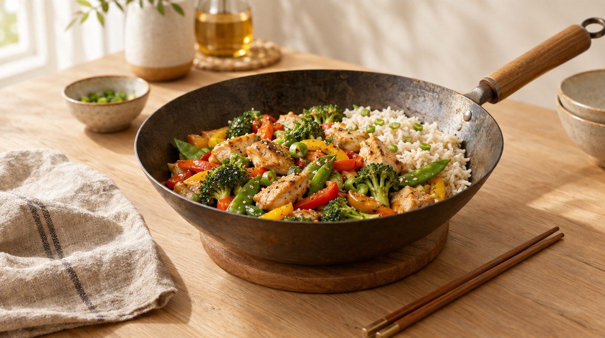
Honigmamas Pfannenreis
Hähnchen-Gemüse-Pfanne mit Reis vom Vortag
15 Min. · davon aktiv 15 Min. · ergibt 2 Portionen · mit Fleisch
WARUM DAS GUT TUT
Mageres Eiweiß, Gemüse und Kohlenhydrate in einer Pfanne. Reis vom Vortag wird beim Braten schön locker.
Honigmama · Band 3Mittag in 15 Minuten
Honigmama · Kraft-Küche fürs erste Jahr55
M11
Hähnchen-Gemüse-Pfanne mit Reis vom Vortag
15 Min. · davon aktiv 15 Min. · ergibt 2 Portionen · mit Fleisch
ZUTATEN
250 g Hähnchenbrustfilet
1 EL Rapsöl
300 g TK-Asia-Gemüsemischung
300 g gekochter Reis (gut gekühlt)
2 EL Sojasoße
1 TL geriebener Ingwer
Allergene: Soja, glutenhaltiges Getreide (Weizen, je nach Sojasoße). Etiketten prüfen.
SCHRITT FÜR SCHRITT
1Hähnchen in feine Streifen schneiden.
2Öl stark erhitzen, Hähnchen 4 Minuten rundum braten, bis es durchgegart ist.
3Gemüse und Ingwer zugeben und 4 Minuten mitbraten.
4Reis zugeben und unter Rühren 3 Minuten braten, bis er überall heiß ist.
5Mit Sojasoße abschmecken.
SCHNELLER GEHT'S
Gekochten Reis schnell abkühlen und gekühlt höchstens 1 Tag aufbewahren; beim Aufwärmen überall richtig heiß werden lassen.
FRISCH HALTEN
Reste gekühlt bis zum nächsten Tag, nur einmal aufwärmen.
Honigmama · Band 3Mittag in 15 Minuten
Honigmama · Kraft-Küche fürs erste Jahr56
M12Mittag in 15 Minuten
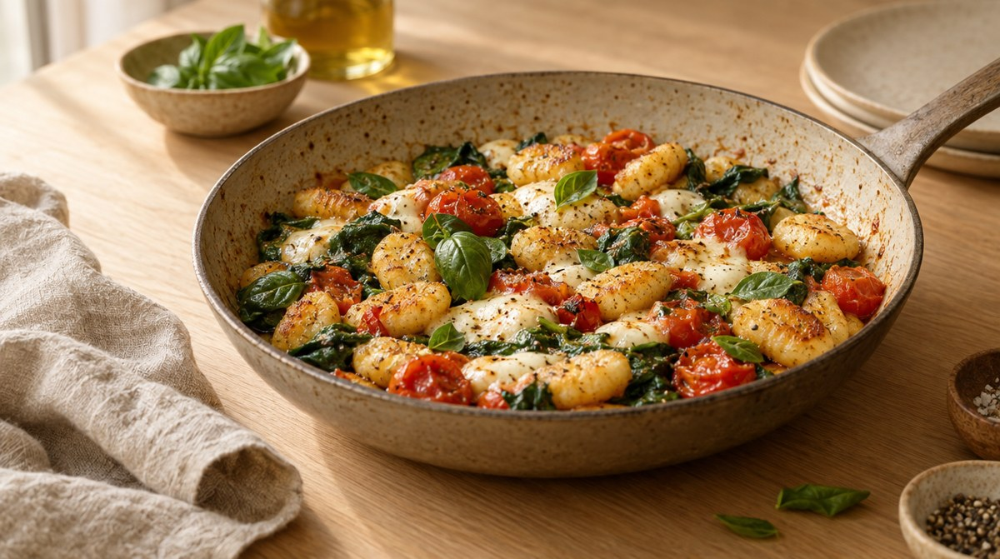
Honigmamas Tomatentopf
Tomaten-Gnocchi aus der Pfanne
15 Min. · davon aktiv 15 Min. · ergibt 2 Portionen · vegetarisch
WARUM DAS GUT TUT
Aus fünf Zutaten in einer Viertelstunde ein warmes Mittagessen. Mozzarella liefert Calcium, Spinat und Tomaten Vitamine.
Honigmama · Band 3Mittag in 15 Minuten
Honigmama · Kraft-Küche fürs erste Jahr57
M12
Tomaten-Gnocchi aus der Pfanne
15 Min. · davon aktiv 15 Min. · ergibt 2 Portionen · vegetarisch
ZUTATEN
400 g Gnocchi (Kühlregal)
1 EL Olivenöl
250 g Kirschtomaten
1 Zehe Knoblauch
100 g Babyspinat
125 g Mozzarella
1 Handvoll Basilikum
Allergene: Glutenhaltiges Getreide (Weizen), Milch, ggf. Ei (Gnocchi). Etiketten prüfen.
SCHRITT FÜR SCHRITT
1Öl erhitzen, Gnocchi 5 Minuten goldbraun anbraten.
2Tomaten halbieren, Knoblauch hacken, beides zugeben und 4 Minuten schmoren, bis die Tomaten aufplatzen.
3Spinat unterrühren, bis er zusammenfällt. Salzen und pfeffern.
4Mozzarella zerzupfen und darauf verteilen, zugedeckt 1 Minute schmelzen lassen. Mit Basilikum bestreuen.
SCHNELLER GEHT'S
Gnocchi müssen nicht vorgekocht werden – direkt aus der Packung in die Pfanne.
FRISCH HALTEN
Am besten frisch essen.
Honigmama · Band 3Mittag in 15 Minuten
Honigmama · Kraft-Küche fürs erste Jahr58
M13Mittag in 15 Minuten
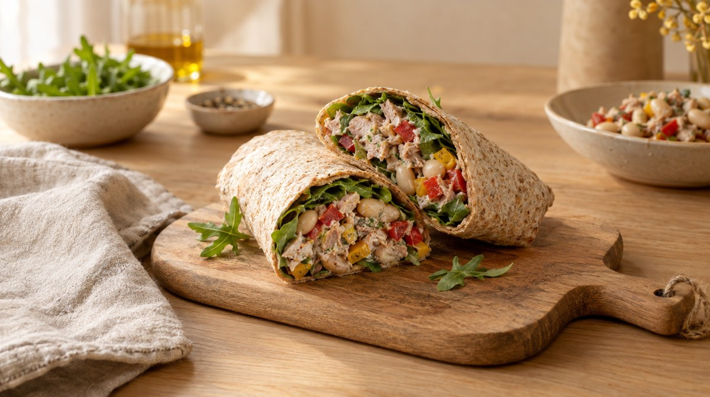
Honigmamas Wraprolle
Thunfisch-Bohnen-Salat im Wrap
10 Min. · davon aktiv 10 Min. · ergibt 2 Wraps · mit Fisch
WARUM DAS GUT TUT
Bohnen und Thunfisch liefern zusammen viel Eiweiß und Ballaststoffe – fast nur aus dem Vorratsschrank. Thunfisch wegen möglicher Quecksilberbelastung nicht öfter als einmal pro Woche.
Honigmama · Band 3Mittag in 15 Minuten
Honigmama · Kraft-Küche fürs erste Jahr59
M13
Thunfisch-Bohnen-Salat im Wrap
10 Min. · davon aktiv 10 Min. · ergibt 2 Wraps · mit Fisch
ZUTATEN
1 Dose (150 g) Thunfisch im eigenen Saft
1 Dose (240 g) weiße Bohnen
½ rote Zwiebel
1 Paprika
2 EL Naturjoghurt
1 TL Senf
2 Vollkorn-Tortillas
1 Handvoll Rucola
Allergene: Fisch, Milch, Senf, glutenhaltiges Getreide (Weizen). Etiketten prüfen.
SCHRITT FÜR SCHRITT
1Thunfisch abtropfen lassen, Bohnen abspülen.
2Zwiebel fein, Paprika klein würfeln.
3Thunfisch, Bohnen, Zwiebel, Paprika, Joghurt und Senf mischen, salzen und pfeffern.
4Tortillas mit Rucola und Salat belegen, fest aufrollen und halbieren.
SCHNELLER GEHT'S
Den Salat gleich doppelt anrühren; er hält sich gekühlt bis zum nächsten Tag.
FRISCH HALTEN
Salat gekühlt 1 Tag, Wrap frisch rollen.
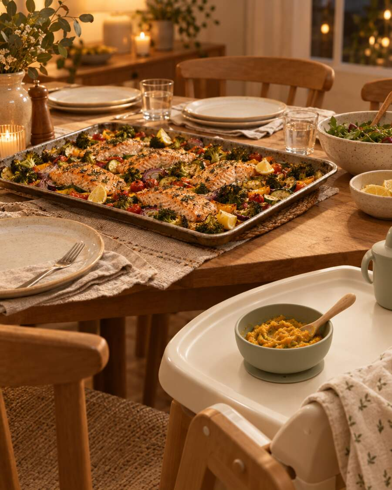
Honigmama · Kapitel 03
Ein Essen für alle
Ein Topf für die Familie – und ab Beikoststart eine Portion fürs Baby abzweigen.
Honigmama · Band 3Ein Essen für alle
Honigmama · Kraft-Küche fürs erste Jahr61
Kapitel 03
Ein Essen für alle
Ein Topf für die Familie – und ab Beikoststart eine Portion fürs Baby abzweigen. Zeiten sind Richtwerte; Zutaten, Zubereitung und Tipps stehen beim Rezept.
Honigmama · Band 3Ein Essen für alle
Honigmama · Kraft-Küche fürs erste Jahr62
A01Ein Essen für alle
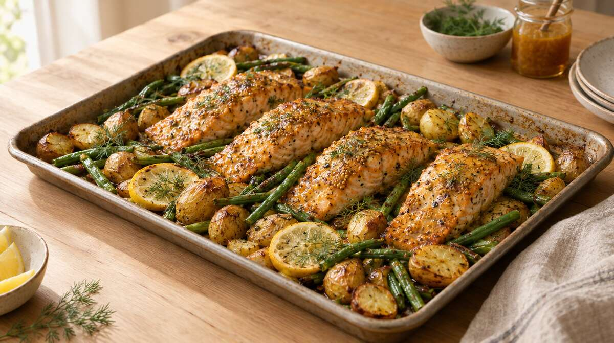
Honigmamas Blechglück
Lachs vom Blech mit Kartoffeln & grünen Bohnen
35 Min. · davon aktiv 10 Min. · ergibt 3 Portionen + Baby · mit Fisch
WARUM DAS GUT TUT
Lachs liefert Omega-3-Fettsäuren für dich – und ab Beikost für dein Baby. Ein Blech, ein Abwasch, eine Mahlzeit für alle.
Honigmama · Band 3Ein Essen für alle
Honigmama · Kraft-Küche fürs erste Jahr63
A01
Lachs vom Blech mit Kartoffeln & grünen Bohnen
35 Min. · davon aktiv 10 Min. · ergibt 3 Portionen + Baby · mit Fisch
ZUTATEN
600 g kleine Kartoffeln
400 g grüne Bohnen
2 EL Olivenöl
3 Stücke (à 130 g) Lachsfilet
1 Bio-Zitrone
1 TL Honig
1 TL Senf
½ Bund Dill
Allergene: Fisch, Senf. Etiketten prüfen.
SCHRITT FÜR SCHRITT
1Ofen auf 200 °C vorheizen. Kartoffeln halbieren, mit 1 EL Öl mischen und 15 Minuten auf dem Blech backen.
2Bohnen putzen, mit restlichem Öl zu den Kartoffeln geben.
3Lachs dazulegen. Für die Erwachsenen-Stücke Senf, Honig und Zitronenabrieb verrühren und auf den Lachs streichen.
4Weitere 12–15 Minuten backen, bis der Lachs innen nicht mehr glasig ist.
5Salzen (nach dem Abzweigen der Baby-Portion), mit Dill und Zitrone servieren.
FÜRS BABY
Vor dem Würzen ein Stück Lachs ohne Honig-Senf-Kruste, einige Kartoffeln und Bohnen abnehmen. Gräten sorgfältig entfernen, alles fein zerdrücken oder als weiche Stücke anbieten. Kein Honig im ersten Lebensjahr.
Honigmama · Band 3Ein Essen für alle
Honigmama · Kraft-Küche fürs erste Jahr64
A02Ein Essen für alle
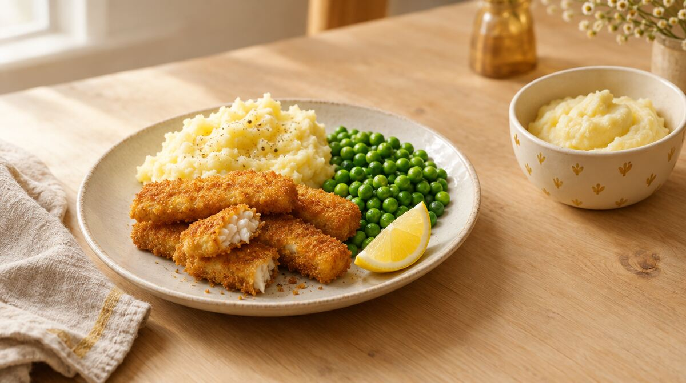
Honigmamas Knusperfisch
Selbst gemachte Fischstäbchen mit Erbsen-Kartoffel-Stampf
35 Min. · davon aktiv 25 Min. · ergibt 3 Portionen + Baby · mit Fisch
WARUM DAS GUT TUT
Selbst gemacht steckt mehr Fisch und weniger Panade drin als in vielen Fertigprodukten. Seelachs liefert Jod und mageres Eiweiß, Erbsen Ballaststoffe.
Honigmama · Band 3Ein Essen für alle
Honigmama · Kraft-Küche fürs erste Jahr65
A02
Selbst gemachte Fischstäbchen mit Erbsen-Kartoffel-Stampf
35 Min. · davon aktiv 25 Min. · ergibt 3 Portionen + Baby · mit Fisch
ZUTATEN
400 g Seelachs- oder Kabeljaufilet
2 EL Mehl
1 Ei
80 g Vollkorn-Paniermehl
3 EL Rapsöl
700 g mehligkochende Kartoffeln
250 g TK-Erbsen
100 ml Milch
1 EL Butter
Allergene: Fisch, Ei, Milch, glutenhaltiges Getreide. Etiketten prüfen.
SCHRITT FÜR SCHRITT
1Kartoffeln schälen, würfeln und 15 Minuten kochen, in den letzten 4 Minuten die Erbsen mitgaren.
2Fisch in fingerdicke Streifen schneiden, nacheinander in Mehl, verquirltem Ei und Paniermehl wenden.
3Öl erhitzen, Fischstäbchen je Seite 3 Minuten goldbraun braten, bis sie innen gar sind.
4Kartoffeln und Erbsen abgießen, mit warmer Milch und Butter grob stampfen.
5Erst nach dem Abzweigen der Baby-Portion salzen.
FÜRS BABY
Ungesalzenen Stampf abnehmen. Ein Fischstäbchen ohne Panade zerdrücken und untermischen – oder ab ca. 8 Monaten als weiches Fingerfood anbieten.
Honigmama · Band 3Ein Essen für alle
Honigmama · Kraft-Küche fürs erste Jahr66
A03Ein Essen für alle
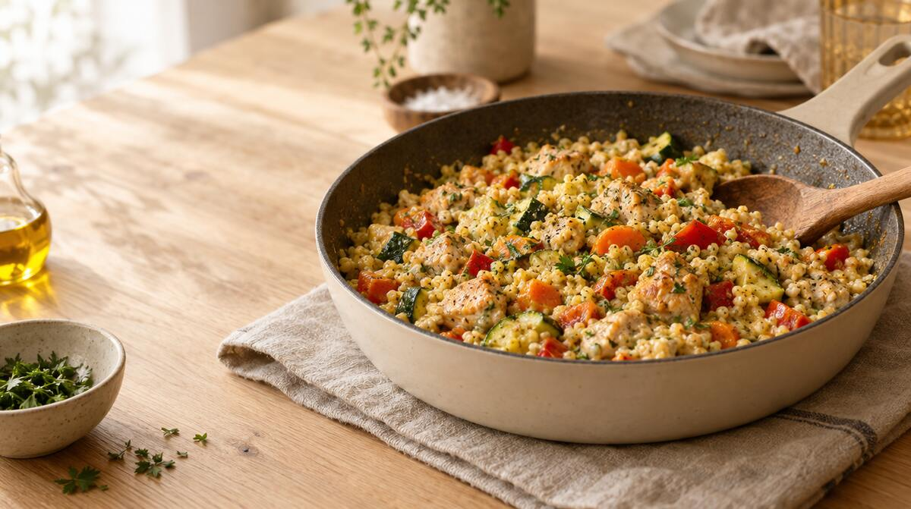
Honigmamas Hirsepfanne
Hirse-Gemüse-Pfanne mit Hähnchen
25 Min. · davon aktiv 15 Min. · ergibt 3 Portionen + Baby · mit Fleisch
WARUM DAS GUT TUT
Hirse ist glutenfrei und liefert Eisen und Magnesium, Hähnchen gut verfügbares Eisen und Eiweiß. Der Frischkäse macht alles cremig – auch für kleine Esser.
Honigmama · Band 3Ein Essen für alle
Honigmama · Kraft-Küche fürs erste Jahr67
A03
Hirse-Gemüse-Pfanne mit Hähnchen
25 Min. · davon aktiv 15 Min. · ergibt 3 Portionen + Baby · mit Fleisch
ZUTATEN
150 g Hirse
350 ml Wasser oder ungesalzene Brühe
300 g Hähnchenbrustfilet
1 Zucchini
2 Möhren
1 rote Paprika
2 EL Rapsöl
1 TL Paprikapulver edelsüß
100 g Frischkäse
Allergene: Milch. Etiketten prüfen.
SCHRITT FÜR SCHRITT
1Hirse heiß abspülen, in Wasser aufkochen und 10 Minuten köcheln, 10 Minuten quellen lassen.
2Hähnchen klein würfeln, Gemüse in kleine Würfel schneiden.
3Öl erhitzen, Hähnchen vollständig durchbraten, Gemüse 6 Minuten mitbraten.
4Hirse, Paprikapulver und Frischkäse unterrühren.
5Baby-Portion abnehmen, dann mit Salz und Pfeffer abschmecken.
FÜRS BABY
Vor dem Salzen abnehmen, Hähnchen sehr fein hacken oder mit etwas Wasser pürieren. Ab ca. 8 Monaten als weiche Pfanne mit dem Löffel.
Honigmama · Band 3Ein Essen für alle
Honigmama · Kraft-Küche fürs erste Jahr68
A04Ein Essen für alle
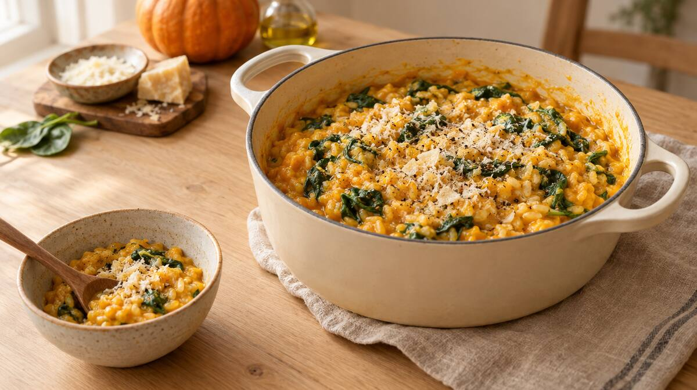
Honigmamas Ofenrisotto
Kürbis-Risotto aus dem Ofen
40 Min. · davon aktiv 10 Min. · ergibt 3 Portionen + Baby · vegetarisch
WARUM DAS GUT TUT
Risotto ohne ständiges Rühren: Der Ofen übernimmt. Kürbis liefert Beta-Carotin, Parmesan Calcium – und das Ganze hat genau die weiche Konsistenz, die Babys mögen.
Honigmama · Band 3Ein Essen für alle
Honigmama · Kraft-Küche fürs erste Jahr69
A04
Kürbis-Risotto aus dem Ofen
40 Min. · davon aktiv 10 Min. · ergibt 3 Portionen + Baby · vegetarisch
ZUTATEN
1 EL Butter
1 Zwiebel
250 g Risottoreis
500 g Hokkaido-Kürbis
800 ml ungesalzene Gemüsebrühe (z. B. Band 2, B01)
40 g Parmesan
1 Handvoll Babyspinat
Allergene: Milch. Brühe: Sellerie. Etiketten prüfen.
SCHRITT FÜR SCHRITT
1Ofen auf 200 °C vorheizen. Kürbis entkernen und (mit Schale) in kleine Würfel schneiden.
2Zwiebel fein würfeln und in einer ofenfesten Form oder einem Bräter in Butter 3 Minuten dünsten. Reis kurz mitdünsten.
3Kürbis und heiße Brühe zugeben, umrühren, abdecken.
430 Minuten im Ofen garen, einmal umrühren.
5Parmesan und Spinat unterrühren; nach dem Abzweigen der Baby-Portion salzen.
FÜRS BABY
Eine Portion vor Parmesan und Salz abnehmen und bei Bedarf mit Wasser oder Muttermilch weicher rühren.
Honigmama · Band 3Ein Essen für alle
Honigmama · Kraft-Küche fürs erste Jahr70
A05Ein Essen für alle
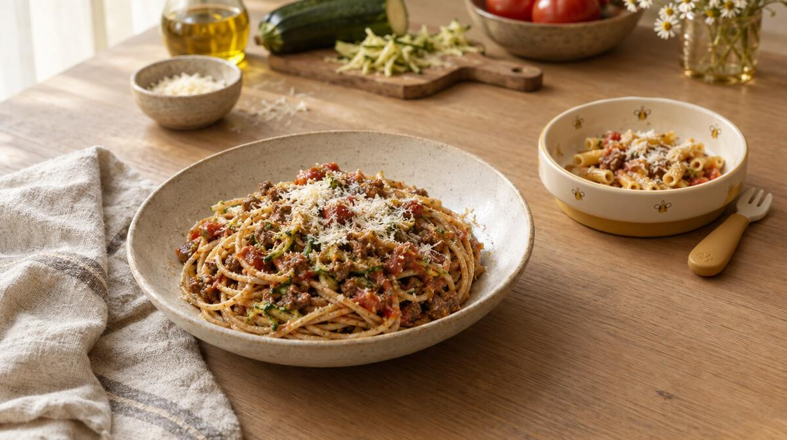
Honigmamas Bolo-Nester
Spaghetti mit Hack-Zucchini-Soße
25 Min. · davon aktiv 15 Min. · ergibt 3 Portionen + Baby · mit Fleisch
WARUM DAS GUT TUT
Die Zucchini verschwindet in der Soße und macht sie saftiger. Rindfleisch liefert Eisen, das für Babys ab etwa sechs Monaten besonders wichtig wird – und für dich nach der Geburt genauso.
Honigmama · Band 3Ein Essen für alle
Honigmama · Kraft-Küche fürs erste Jahr71
A05
Spaghetti mit Hack-Zucchini-Soße
25 Min. · davon aktiv 15 Min. · ergibt 3 Portionen + Baby · mit Fleisch
ZUTATEN
300 g Vollkorn-Spaghetti
1 EL Olivenöl
300 g Rinderhackfleisch
1 Zwiebel
2 Zucchini
1 Möhre
500 g passierte Tomaten
1 TL getrockneter Oregano
30 g Parmesan
Allergene: Glutenhaltiges Getreide, Milch. Etiketten prüfen.
SCHRITT FÜR SCHRITT
1Zwiebel und Möhre fein würfeln, Zucchini grob raspeln.
2Öl erhitzen, Hack krümelig und vollständig durchbraten. Zwiebel und Möhre 3 Minuten mitbraten.
3Zucchini, Tomaten und Oregano zugeben und 10 Minuten köcheln.
4Nudeln nach Packungsangabe kochen.
5Baby-Portion abnehmen, dann Soße salzen und mit Parmesan servieren.
FÜRS BABY
Ungesalzene Soße abnehmen und fein pürieren; Nudeln weich kochen und klein schneiden oder als Fingerfood geben.
Honigmama · Band 3Ein Essen für alle
Honigmama · Kraft-Küche fürs erste Jahr72
A06Ein Essen für alle
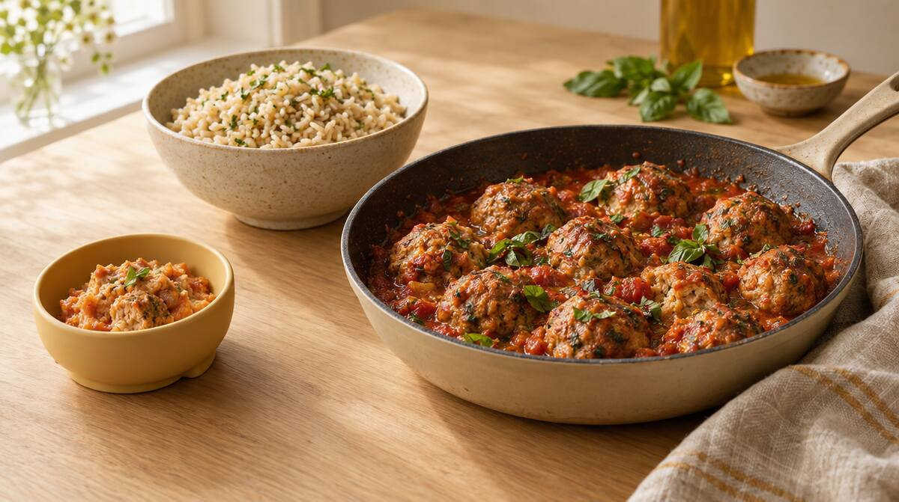
Honigmamas Kugelblitz
Putenbällchen in Tomatensoße mit Reis
35 Min. · davon aktiv 20 Min. · ergibt 3 Portionen + Baby · mit Fleisch
WARUM DAS GUT TUT
Bällchen ohne Salz sind ab Beikost auch für dein Baby geeignet. Pute liefert Eiweiß, Haferflocken machen sie weich und binden ohne Paniermehl.
Honigmama · Band 3Ein Essen für alle
Honigmama · Kraft-Küche fürs erste Jahr73
A06
Putenbällchen in Tomatensoße mit Reis
35 Min. · davon aktiv 20 Min. · ergibt 3 Portionen + Baby · mit Fleisch
ZUTATEN
400 g Putenhackfleisch
40 g zarte Haferflocken
1 Ei
1 kleine Zwiebel
500 g passierte Tomaten
1 TL getrockneter Basilikum
200 g Vollkornreis
1 EL Olivenöl
Allergene: Ei, glutenhaltiges Getreide (Hafer). Etiketten prüfen.
SCHRITT FÜR SCHRITT
1Reis nach Packungsangabe kochen.
2Zwiebel sehr fein reiben. Hack mit Haferflocken, Ei und der Hälfte der Zwiebel verkneten, 16 Bällchen formen.
3Öl erhitzen, restliche Zwiebel 2 Minuten dünsten, Tomaten und Basilikum zugeben und aufkochen.
4Bällchen in die Soße legen und zugedeckt 15 Minuten köcheln, bis sie durchgegart sind.
5Baby-Portion abnehmen, dann salzen und pfeffern.
FÜRS BABY
Ein Bällchen ungesalzen zerdrücken und mit Soße und Reis mischen – oder in Viertel geschnitten als Fingerfood.
Honigmama · Band 3Ein Essen für alle
Honigmama · Kraft-Küche fürs erste Jahr74
A07Ein Essen für alle
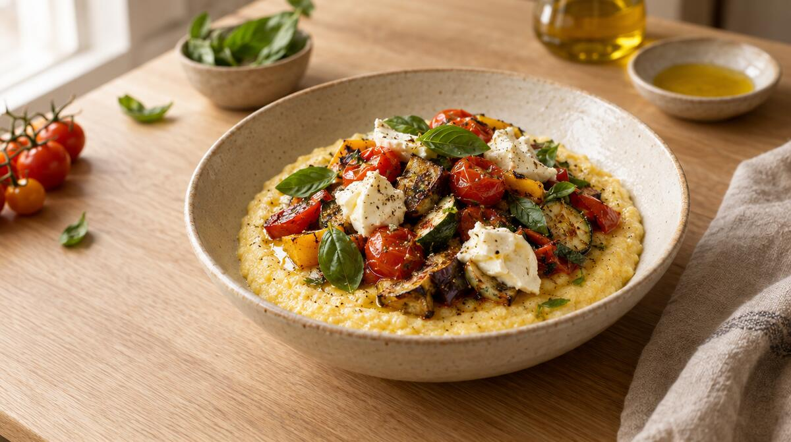
Honigmamas Goldbrei
Cremige Polenta mit Ofengemüse & Mozzarella
35 Min. · davon aktiv 10 Min. · ergibt 3 Portionen + Baby · vegetarisch
WARUM DAS GUT TUT
Polenta ist ein weicher Mais-Brei, den Erwachsene als Beilage und Babys als Brei mögen. Ofengemüse bringt Vielfalt, Milch und Käse Calcium.
Honigmama · Band 3Ein Essen für alle
Honigmama · Kraft-Küche fürs erste Jahr75
A07
Cremige Polenta mit Ofengemüse & Mozzarella
35 Min. · davon aktiv 10 Min. · ergibt 3 Portionen + Baby · vegetarisch
ZUTATEN
1 Zucchini
1 Aubergine
1 rote Paprika
250 g Kirschtomaten
2 EL Olivenöl
1 l Milch oder Wasser
200 g Instant-Polenta
30 g Parmesan
1 Kugel (125 g) Mozzarella
Allergene: Milch. Etiketten prüfen.
SCHRITT FÜR SCHRITT
1Ofen auf 220 °C vorheizen. Gemüse würfeln, mit Öl mischen und 25 Minuten rösten.
2Milch aufkochen, Polenta einrieseln lassen und unter Rühren 5 Minuten quellen lassen.
5Polenta auf Teller geben, Gemüse und Mozzarella daraufgeben; erst danach salzen.
FÜRS BABY
Ungesalzene Polenta mit etwas fein zerdrücktem Ofengemüse mischen; ab ca. 8 Monaten Gemüsestücke als Fingerfood.
Honigmama · Band 3Ein Essen für alle
Honigmama · Kraft-Küche fürs erste Jahr76
A08Ein Essen für alle
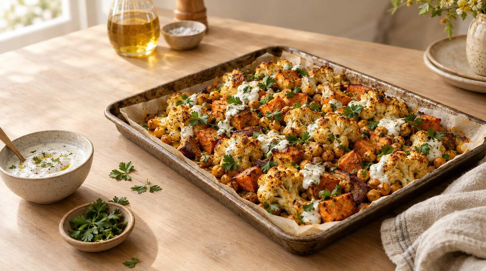
Honigmamas Ofen-Orient
Ofen-Blumenkohl mit Kichererbsen & Joghurtsoße
35 Min. · davon aktiv 10 Min. · ergibt 3 Portionen + Baby · vegetarisch
WARUM DAS GUT TUT
Gerösteter Blumenkohl wird nussig-süß, Kichererbsen liefern Eiweiß und Eisen, der Joghurt Calcium. Vegetarisch und trotzdem richtig sättigend.
Honigmama · Band 3Ein Essen für alle
Honigmama · Kraft-Küche fürs erste Jahr77
A08
Ofen-Blumenkohl mit Kichererbsen & Joghurtsoße
35 Min. · davon aktiv 10 Min. · ergibt 3 Portionen + Baby · vegetarisch
ZUTATEN
1 Blumenkohl
1 Dose (400 g) Kichererbsen
1 Süßkartoffel
3 EL Olivenöl
1 TL Kreuzkümmel
1 TL Paprikapulver edelsüß
250 g Naturjoghurt
1 Zehe Knoblauch
1 Zitrone
½ Bund Petersilie
Allergene: Milch. Etiketten prüfen.
SCHRITT FÜR SCHRITT
1Ofen auf 220 °C vorheizen. Blumenkohl in Röschen teilen, Süßkartoffel würfeln, Kichererbsen abspülen.
2Alles mit Öl und Gewürzen mischen und auf einem Blech verteilen.
325 Minuten rösten, bis alles weich und gebräunt ist.
4Joghurt mit geriebenem Knoblauch, Zitronensaft und Salz verrühren.
5Gemüse mit Petersilie bestreuen und mit der Joghurtsoße servieren.
FÜRS BABY
Blumenkohl und Süßkartoffel vor dem Würzen herausnehmen (getrennt aufs Blech legen) und als weiche Stücke oder zerdrückt anbieten. Kichererbsen nur zerdrückt.
Honigmama · Band 3Ein Essen für alle
Honigmama · Kraft-Küche fürs erste Jahr78
A09Ein Essen für alle
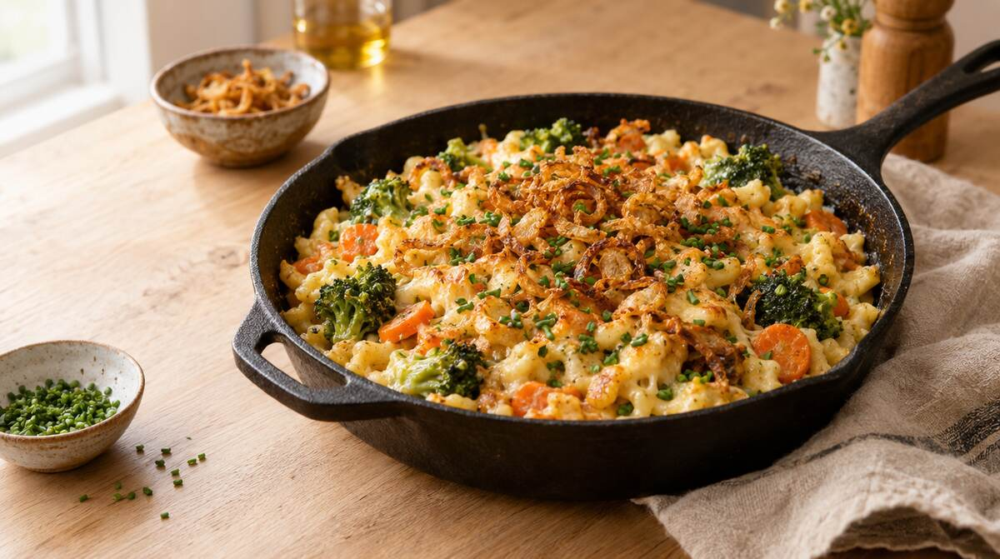
Honigmamas Schwabenpfanne
Spätzle-Gemüse-Pfanne mit Käse
20 Min. · davon aktiv 15 Min. · ergibt 3 Portionen + Baby · vegetarisch
WARUM DAS GUT TUT
Käsespätzle mit einer großen Portion Gemüse: Calcium aus Käse, Vitamine aus Brokkoli und Möhre. Seelenfutter in 20 Minuten.
Honigmama · Band 3Ein Essen für alle
Honigmama · Kraft-Küche fürs erste Jahr79
A09
Spätzle-Gemüse-Pfanne mit Käse
20 Min. · davon aktiv 15 Min. · ergibt 3 Portionen + Baby · vegetarisch
ZUTATEN
500 g Spätzle (Kühlregal)
1 EL Butter
1 Zwiebel
1 Brokkoli
2 Möhren
100 ml Milch
100 g geriebener Bergkäse
½ Bund Schnittlauch
Allergene: Glutenhaltiges Getreide, Ei, Milch. Etiketten prüfen.
SCHRITT FÜR SCHRITT
1Brokkoli in kleine Röschen teilen, Möhren in Scheiben schneiden und beides 5 Minuten in wenig Wasser dünsten.
2Zwiebel in Streifen schneiden und in Butter goldbraun braten.
3Spätzle zugeben und 5 Minuten mitbraten.
4Gemüse, Milch und Käse unterrühren, bis der Käse geschmolzen ist.
5Mit Schnittlauch bestreuen; nach dem Abzweigen salzen.
FÜRS BABY
Gedünstetes Gemüse und ein paar Spätzle vor Käse und Salz abnehmen; Spätzle sind ein gutes erstes Fingerfood.
Honigmama · Band 3Ein Essen für alle
Honigmama · Kraft-Küche fürs erste Jahr80
A10Ein Essen für alle
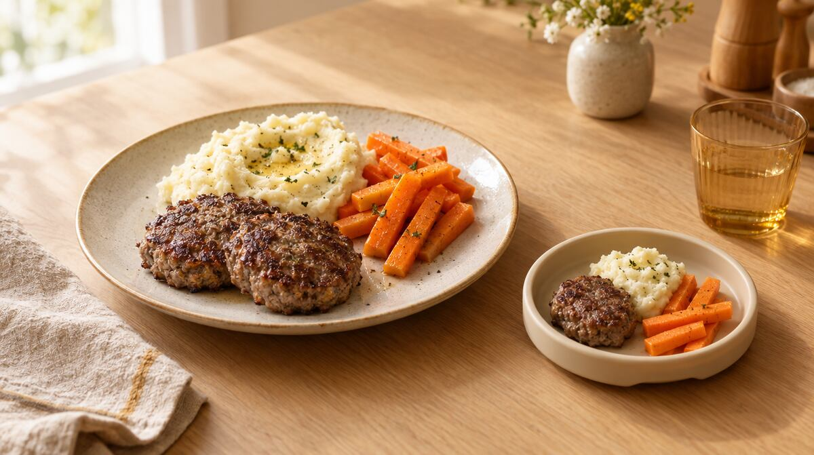
Honigmamas Sonntagsteller
Rinder-Frikadellen mit Kartoffelpüree & Möhren
35 Min. · davon aktiv 25 Min. · ergibt 3 Portionen + Baby · mit Fleisch
WARUM DAS GUT TUT
Ein Klassiker, der satt macht und Erinnerungen weckt. Rindfleisch liefert Eisen und Zink, Möhren Beta-Carotin – und Püree mögen fast alle Babys.
Honigmama · Band 3Ein Essen für alle
Honigmama · Kraft-Küche fürs erste Jahr81
A10
Rinder-Frikadellen mit Kartoffelpüree & Möhren
35 Min. · davon aktiv 25 Min. · ergibt 3 Portionen + Baby · mit Fleisch
ZUTATEN
400 g Rinderhackfleisch
1 Ei
40 g zarte Haferflocken
1 kleine Zwiebel
1 EL Rapsöl
800 g mehligkochende Kartoffeln
150 ml Milch
1 EL Butter
500 g Möhren
Allergene: Ei, Milch, glutenhaltiges Getreide (Hafer). Etiketten prüfen.
SCHRITT FÜR SCHRITT
1Kartoffeln und Möhren schälen; Kartoffeln würfeln und 15 Minuten kochen, Möhren in Stifte schneiden und 8 Minuten dünsten.
2Zwiebel fein reiben, mit Hack, Ei und Haferflocken verkneten, 8 Frikadellen formen.
3Öl erhitzen, Frikadellen je Seite 5 Minuten braten, bis sie innen nicht mehr rosa sind.
4Kartoffeln mit warmer Milch und Butter zu Püree stampfen.
5Baby-Portion abnehmen, dann Püree und Frikadellen salzen bzw. würzen.
FÜRS BABY
Eine ungesalzene Frikadelle zerdrücken und mit Püree und Möhren mischen. Möhrenstifte weich gegart als Fingerfood.
Honigmama · Band 3Ein Essen für alle
Honigmama · Kraft-Küche fürs erste Jahr82
A11Ein Essen für alle
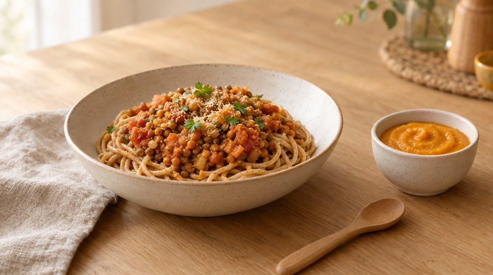
Honigmamas Linsenbolo
Linsen-Bolognese mit Vollkornspaghetti
30 Min. · davon aktiv 15 Min. · ergibt 3 Portionen + Baby · vegan
WARUM DAS GUT TUT
Rote Linsen liefern Eisen und Eiweiß, Tomate das Vitamin C, das die Eisenaufnahme verbessert – für dich und fürs Baby.
Honigmama · Band 3Ein Essen für alle
Honigmama · Kraft-Küche fürs erste Jahr83
A11
Linsen-Bolognese mit Vollkornspaghetti
30 Min. · davon aktiv 15 Min. · ergibt 3 Portionen + Baby · vegan
ZUTATEN
1 Zwiebel
2 Möhren
1 EL Olivenöl
120 g rote Linsen
1 Dose (400 g) stückige Tomaten
300 ml Wasser
1 TL getrockneter Oregano
300 g Vollkornspaghetti
Allergene: Glutenhaltiges Getreide (Weizen). Etiketten prüfen.
SCHRITT FÜR SCHRITT
1Zwiebel und Möhren fein würfeln, in Öl 5 Minuten andünsten.
2Linsen, Tomaten, Wasser und Oregano zugeben und 15 Minuten köcheln, bis die Linsen zerfallen.
3Spaghetti nach Packung kochen.
4Die Baby-Portion abnehmen, danach die Soße mit Salz und Pfeffer abschmecken.
5Spaghetti mit der Soße mischen.
FÜRS BABY
Vor dem Salzen 2–3 EL Soße abnehmen, mit etwas weich gekochter Pasta fein pürieren oder als kleine, weiche Nudelstücke anbieten.
Honigmama · Band 3Ein Essen für alle
Honigmama · Kraft-Küche fürs erste Jahr84
A12Ein Essen für alle
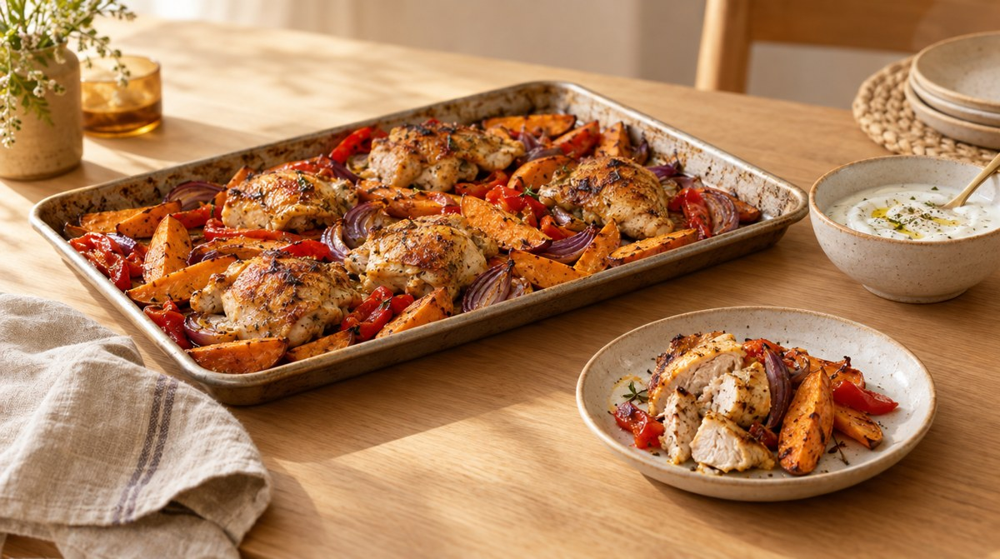
Honigmamas Hähnchenblech
Hähnchen mit Süßkartoffel & Paprika vom Blech
40 Min. · davon aktiv 10 Min. · ergibt 3 Portionen + Baby · mit Fleisch
WARUM DAS GUT TUT
Ein Blech, ein Abwasch. Süßkartoffel bringt Beta-Carotin, Hähnchen Eiweiß – weich gebacken auch gut fingerfoodtauglich.
Honigmama · Band 3Ein Essen für alle
Honigmama · Kraft-Küche fürs erste Jahr85
A12
Hähnchen mit Süßkartoffel & Paprika vom Blech
40 Min. · davon aktiv 10 Min. · ergibt 3 Portionen + Baby · mit Fleisch
ZUTATEN
400 g Hähnchenbrustfilet
2 Süßkartoffeln (ca. 600 g)
2 Paprika
1 rote Zwiebel
2 EL Olivenöl
1 TL edelsüßes Paprikapulver
150 g Naturjoghurt
Allergene: Milch. Etiketten prüfen.
SCHRITT FÜR SCHRITT
1Ofen auf 200 °C vorheizen. Süßkartoffeln in Spalten, Paprika und Zwiebel in Streifen schneiden.
2Gemüse mit 1 EL Öl mischen und 15 Minuten backen.
3Hähnchen in Stücke schneiden, mit restlichem Öl und Paprikapulver mischen und dazulegen.
4Weitere 15–18 Minuten backen, bis das Hähnchen innen nicht mehr rosa ist.
5Baby-Portion abnehmen, Rest salzen. Mit Joghurt servieren.
FÜRS BABY
Vor dem Salzen einige weiche Süßkartoffelspalten und fein zerzupftes Hähnchen abnehmen. Als Fingerfood oder zerdrückt mit etwas Joghurt anbieten.
Honigmama · Band 3Ein Essen für alle
Honigmama · Kraft-Küche fürs erste Jahr86
A13Ein Essen für alle
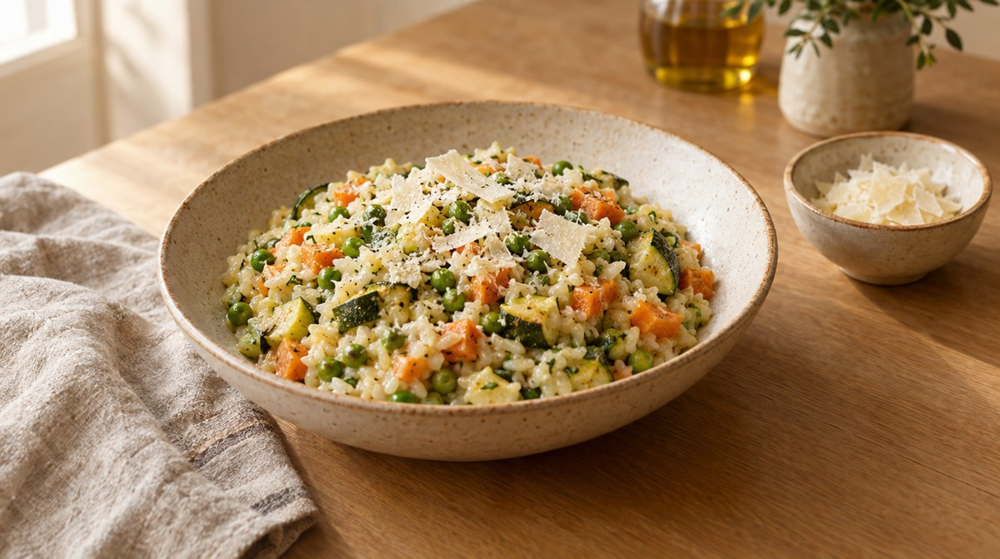
Honigmamas Gemüsereis
Cremiger Gemüse-Reis mit Erbsen & Parmesan
30 Min. · davon aktiv 15 Min. · ergibt 3 Portionen + Baby · vegetarisch
WARUM DAS GUT TUT
Weich, cremig und mild – passt zu müden Abenden und Babys ersten Familienmahlzeiten. Erbsen liefern pflanzliches Eiweiß.
Honigmama · Band 3Ein Essen für alle
Honigmama · Kraft-Küche fürs erste Jahr87
A13
Cremiger Gemüse-Reis mit Erbsen & Parmesan
30 Min. · davon aktiv 15 Min. · ergibt 3 Portionen + Baby · vegetarisch
ZUTATEN
1 Zwiebel
1 Zucchini
2 Möhren
1 EL Butter
250 g Risotto- oder Milchreis
900 ml Gemüsebrühe ohne Salz
150 g TK-Erbsen
40 g Parmesan
Allergene: Milch. Etiketten prüfen.
SCHRITT FÜR SCHRITT
1Zwiebel, Zucchini und Möhren fein würfeln.
2Butter erhitzen, Zwiebel und Möhren 3 Minuten dünsten, Reis 1 Minute mitrühren.
3Brühe nach und nach zugeben und 18 Minuten unter gelegentlichem Rühren köcheln.
4Zucchini und Erbsen zugeben und 5 Minuten mitgaren, bis der Reis weich und cremig ist.
5Baby-Portion abnehmen. Danach Parmesan unterrühren und abschmecken.
FÜRS BABY
Vor Parmesan und Salz eine Portion abnehmen und nach Bedarf fein pürieren. Ungesalzene Brühe verwenden oder Wasser nehmen.
Honigmama · Band 3Ein Essen für alle
Honigmama · Kraft-Küche fürs erste Jahr88
A14Ein Essen für alle
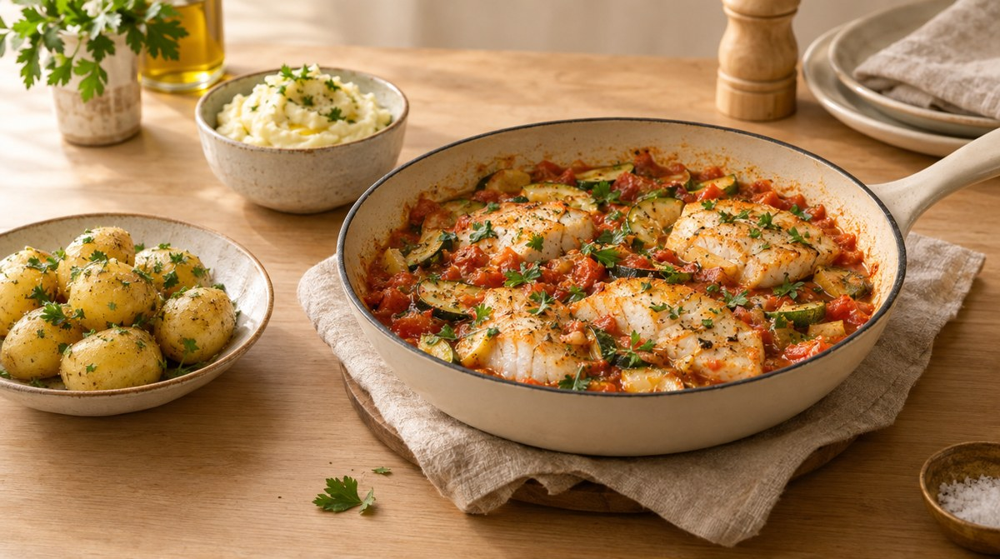
Honigmamas Fischpfanne
Kabeljau in Tomatensoße mit Kartoffeln
30 Min. · davon aktiv 15 Min. · ergibt 3 Portionen + Baby · mit Fisch
WARUM DAS GUT TUT
Kabeljau liefert Jod und mageres Eiweiß. Im Tomatenbett gegart bleibt er saftig und lässt sich gut zerdrücken.
Honigmama · Band 3Ein Essen für alle
Honigmama · Kraft-Küche fürs erste Jahr89
A14
Kabeljau in Tomatensoße mit Kartoffeln
30 Min. · davon aktiv 15 Min. · ergibt 3 Portionen + Baby · mit Fisch
ZUTATEN
700 g kleine Kartoffeln
1 Zwiebel
1 EL Olivenöl
1 Dose (400 g) stückige Tomaten
1 Zucchini
400 g Kabeljaufilet
½ Bund Petersilie
Allergene: Fisch. Etiketten prüfen.
SCHRITT FÜR SCHRITT
1Kartoffeln 20 Minuten in Wasser weich kochen.
2Zwiebel würfeln und in Öl 3 Minuten dünsten. Zucchini würfeln, mit den Tomaten zugeben und 5 Minuten köcheln.
3Fisch in große Stücke schneiden, in die Soße legen und zugedeckt 8 Minuten gar ziehen lassen, bis er sich leicht zerteilen lässt.
4Baby-Portion abnehmen, danach salzen und pfeffern.
5Mit Petersilie bestreuen und mit den Kartoffeln servieren.
FÜRS BABY
Ungesalzen abnehmen, Fisch sehr sorgfältig auf Gräten prüfen, mit Kartoffel und Soße zerdrücken.
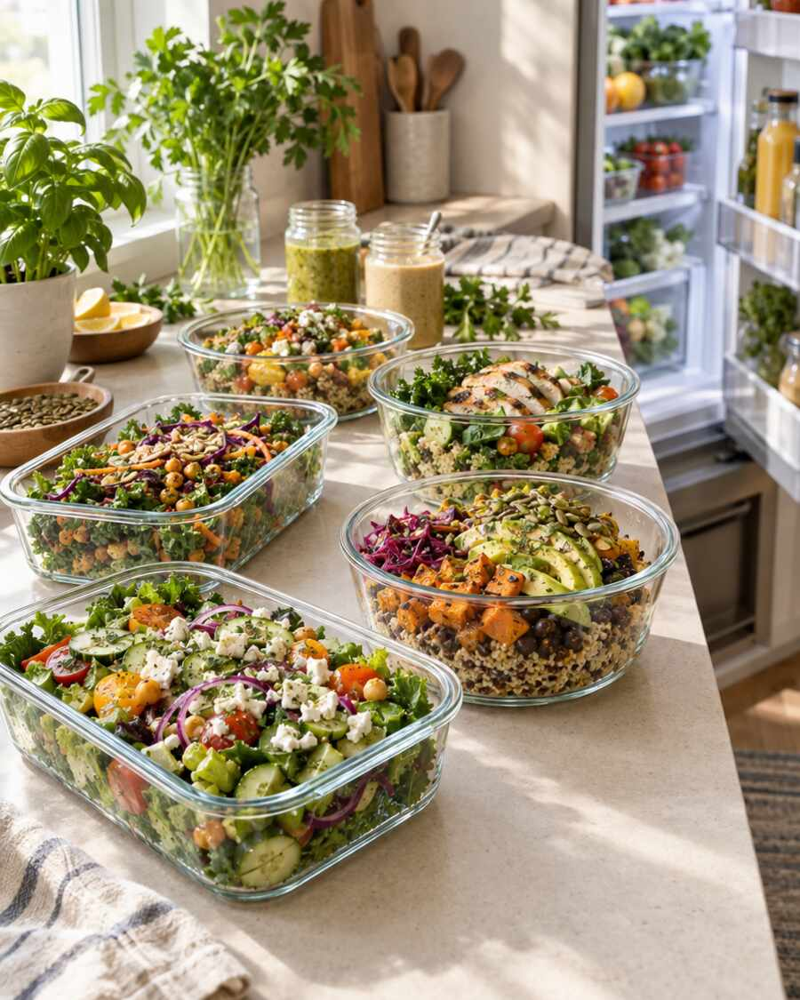
Honigmama · Kapitel 04
Vorbereitet in 10 Minuten
Am Abend vorbereitet, am nächsten Tag nur noch Deckel auf.
Honigmama · Band 3Vorbereitet in 10 Minuten
Honigmama · Kraft-Küche fürs erste Jahr91
Kapitel 04
Vorbereitet in 10 Minuten
Am Abend vorbereitet, am nächsten Tag nur noch Deckel auf. Zeiten sind Richtwerte; Zutaten, Zubereitung und Tipps stehen beim Rezept.
Honigmama · Band 3Vorbereitet in 10 Minuten
Honigmama · Kraft-Küche fürs erste Jahr92
V01Vorbereitet in 10 Minuten
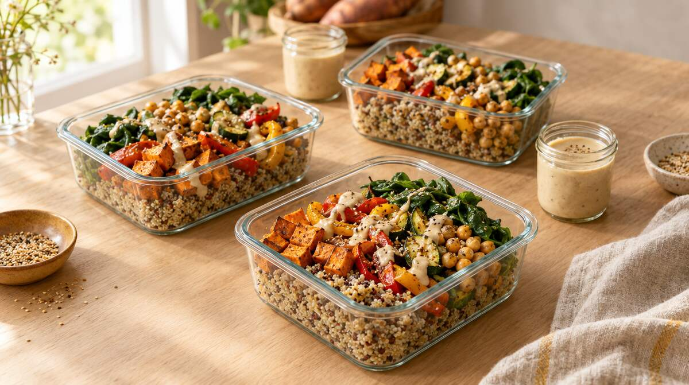
Honigmamas Regenbogenbowl
Quinoa-Bowl mit Ofengemüse & Tahin
35 Min. · davon aktiv 10 Min. · ergibt 3 Bowls · vegan
WARUM DAS GUT TUT
Quinoa und Kichererbsen liefern zusammen alle wichtigen Eiweißbausteine, Tahin Calcium und Eisen. Drei Mittagessen mit einer Ofenladung.
Honigmama · Band 3Vorbereitet in 10 Minuten
Honigmama · Kraft-Küche fürs erste Jahr93
V01
Quinoa-Bowl mit Ofengemüse & Tahin
35 Min. · davon aktiv 10 Min. · ergibt 3 Bowls · vegan
ZUTATEN
150 g Quinoa
1 Süßkartoffel
1 rote Paprika
1 Zucchini
1 Dose (400 g) Kichererbsen
2 EL Olivenöl
3 EL Tahin
1 Zitrone
2 Handvoll Babyspinat
Allergene: Sesam. Etiketten prüfen.
SCHRITT FÜR SCHRITT
1Ofen auf 220 °C vorheizen. Gemüse würfeln, Kichererbsen abspülen, alles mit Öl und Salz mischen und 25 Minuten rösten.
2Quinoa abspülen und in doppelter Menge Wasser 15 Minuten garen.
3Tahin mit Zitronensaft, Salz und 4 EL Wasser zu einer cremigen Soße rühren.
4Spinat, Quinoa und Ofengemüse auf drei Dosen verteilen.
5Soße in kleine Gläser füllen.
SCHNELLER GEHT'S
Gemüse auf zwei Blechen rösten und gleich doppelt einplanen – Reste kommen in Wraps.
FRISCH HALTEN
Im Kühlschrank bis zu 3 Tage, Soße getrennt.
Honigmama · Band 3Vorbereitet in 10 Minuten
Honigmama · Kraft-Küche fürs erste Jahr94
V02Vorbereitet in 10 Minuten
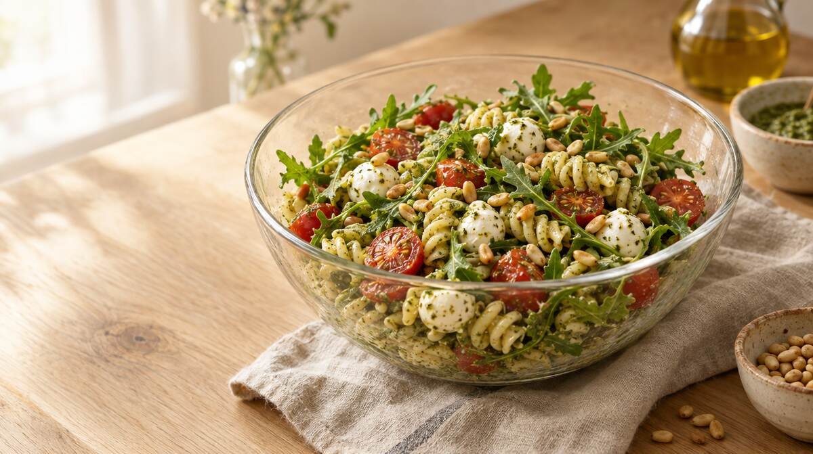
Honigmamas Picknick
Nudelsalat mit Pesto, Tomaten & Mozzarella
15 Min. · davon aktiv 10 Min. · ergibt 4 Portionen · vegetarisch
WARUM DAS GUT TUT
Ein Nudelsalat ohne Mayonnaise, der sich gekühlt hält: Vollkorn sättigt, Mozzarella liefert Eiweiß und Calcium.
Honigmama · Band 3Vorbereitet in 10 Minuten
Honigmama · Kraft-Küche fürs erste Jahr95
V02
Nudelsalat mit Pesto, Tomaten & Mozzarella
15 Min. · davon aktiv 10 Min. · ergibt 4 Portionen · vegetarisch
ZUTATEN
300 g Vollkorn-Fusilli
4 EL Basilikum-Pesto
250 g Kirschtomaten
1 Kugel (125 g) Mini-Mozzarella
2 Handvoll Rucola
2 EL Pinienkerne
1 EL Olivenöl
Allergene: Glutenhaltiges Getreide, Milch, Schalenfrüchte (Pesto, Pinienkerne). Etiketten prüfen.
SCHRITT FÜR SCHRITT
1Nudeln bissfest kochen, abschrecken und abtropfen lassen.
2Tomaten halbieren, Mozzarella abtropfen lassen.
3Pinienkerne ohne Fett goldbraun rösten.
4Nudeln mit Pesto, Öl, Tomaten und Mozzarella mischen.
5Rucola und Pinienkerne erst beim Servieren unterheben.
SCHNELLER GEHT'S
Kalt aus der Dose essen – perfekt für Spaziergänge mit dem Kinderwagen.
FRISCH HALTEN
Im Kühlschrank bis zu 3 Tage.
Honigmama · Band 3Vorbereitet in 10 Minuten
Honigmama · Kraft-Küche fürs erste Jahr96
V03Vorbereitet in 10 Minuten
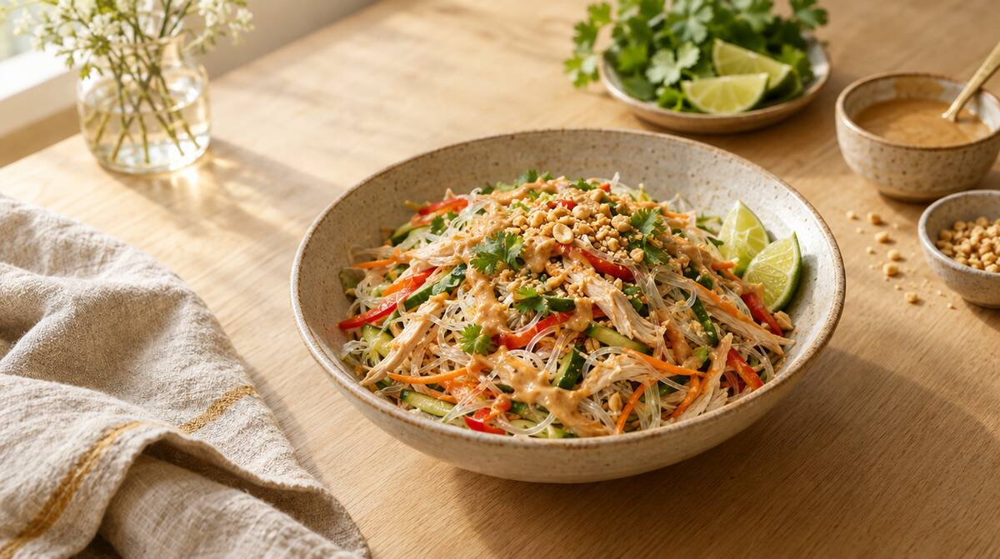
Honigmamas Glasnudeltraum
Glasnudel-Salat mit Erdnuss-Dressing & Hähnchen
20 Min. · davon aktiv 15 Min. · ergibt 3 Portionen · mit Fleisch
WARUM DAS GUT TUT
Erdnüsse und Hähnchen liefern Eiweiß, das knackige Gemüse Vitamin C. Ein Salat, der kalt richtig gut schmeckt.
Honigmama · Band 3Vorbereitet in 10 Minuten
Honigmama · Kraft-Küche fürs erste Jahr97
V03
Glasnudel-Salat mit Erdnuss-Dressing & Hähnchen
20 Min. · davon aktiv 15 Min. · ergibt 3 Portionen · mit Fleisch
ZUTATEN
150 g Glasnudeln
300 g Hähnchenbrustfilet
1 rote Paprika
2 Möhren
½ Salatgurke
3 EL Erdnussmus
2 EL Sojasauce
1 Limette
1 TL Honig
2 EL geröstete Erdnüsse
Allergene: Erdnüsse, Soja, glutenhaltiges Getreide (Sojasauce). Etiketten prüfen.
SCHRITT FÜR SCHRITT
1Hähnchen in Wasser 15 Minuten gar ziehen lassen, bis es innen nicht mehr rosa ist, dann zerzupfen.
2Glasnudeln nach Packung einweichen, abgießen und mit der Schere kürzen.
3Paprika, Möhren und Gurke in feine Streifen schneiden.
4Erdnussmus, Sojasauce, Limettensaft, Honig und 3 EL warmes Wasser verrühren.
5Alles mischen und mit gehackten Erdnüssen bestreuen.
SCHNELLER GEHT'S
Gemüse mit dem Spiralschneider oder Julienne-Schäler schneiden – geht viel schneller.
FRISCH HALTEN
Im Kühlschrank bis zu 2 Tage.
Honigmama · Band 3Vorbereitet in 10 Minuten
Honigmama · Kraft-Küche fürs erste Jahr98
V04Vorbereitet in 10 Minuten
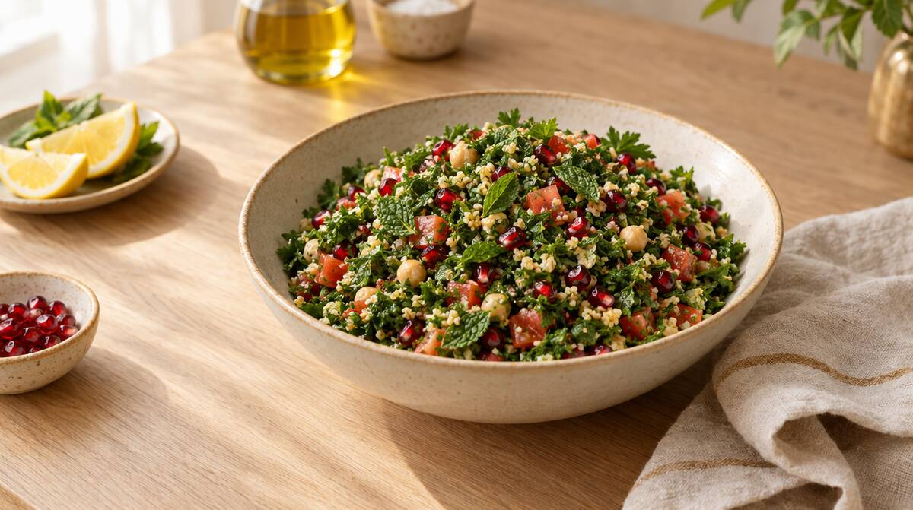
Honigmamas Kräutergarten
Taboulé mit Kichererbsen & Granatapfel
15 Min. · davon aktiv 15 Min. · ergibt 3 Portionen · vegan
WARUM DAS GUT TUT
Petersilie ist reich an Vitamin C und Folat, Kichererbsen liefern Eiweiß und Eisen – zusammen eine gute Kombination für die Eisenaufnahme.
Honigmama · Band 3Vorbereitet in 10 Minuten
Honigmama · Kraft-Küche fürs erste Jahr99
V04
Taboulé mit Kichererbsen & Granatapfel
15 Min. · davon aktiv 15 Min. · ergibt 3 Portionen · vegan
ZUTATEN
120 g Bulgur
2 Bund glatte Petersilie
½ Bund Minze
3 Tomaten
½ Salatgurke
1 Dose (400 g) Kichererbsen
½ Granatapfel
2 Zitronen
4 EL Olivenöl
Allergene: Glutenhaltiges Getreide (Weizen). Etiketten prüfen.
SCHRITT FÜR SCHRITT
1Bulgur mit 200 ml kochendem Salzwasser übergießen und 10 Minuten quellen lassen.
2Kräuter sehr fein hacken.
3Tomaten und Gurke klein würfeln, Kichererbsen abspülen.
4Zitronensaft und Öl verrühren, salzen und pfeffern.
5Alles mischen und mit Granatapfelkernen bestreuen.
SCHNELLER GEHT'S
Kräuter im Zerkleinerer hacken – 30 Sekunden statt 10 Minuten.
FRISCH HALTEN
Im Kühlschrank bis zu 3 Tage.
Honigmama · Band 3Vorbereitet in 10 Minuten
Honigmama · Kraft-Küche fürs erste Jahr100
V05Vorbereitet in 10 Minuten
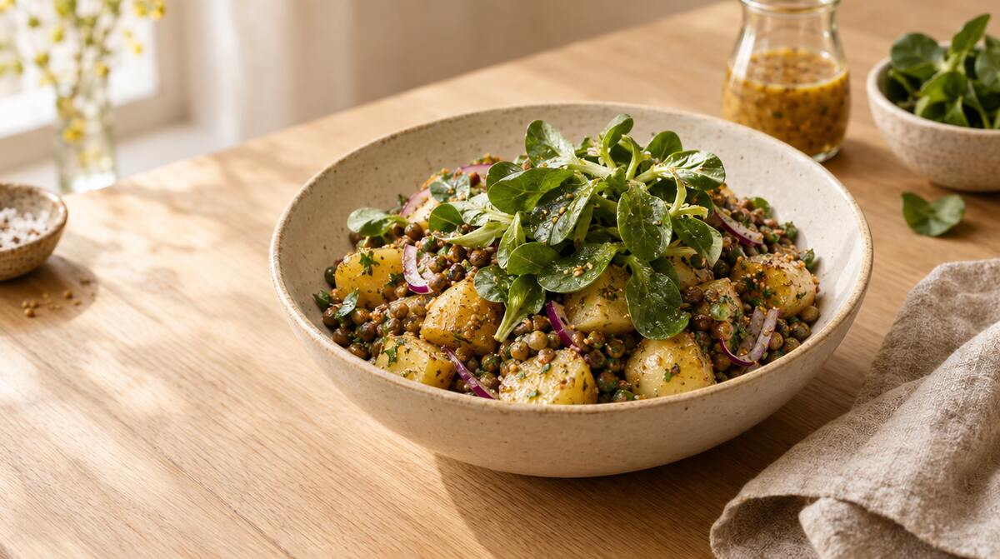
Honigmamas Senf-Salat
Kartoffel-Linsen-Salat mit Senf-Vinaigrette
25 Min. · davon aktiv 10 Min. · ergibt 3 Portionen · vegan
WARUM DAS GUT TUT
Linsen machen den Kartoffelsalat zur vollständigen Mahlzeit mit Eiweiß, Eisen und Ballaststoffen. Ohne Mayonnaise und deshalb gut haltbar.
Honigmama · Band 3Vorbereitet in 10 Minuten
Honigmama · Kraft-Küche fürs erste Jahr101
V05
Kartoffel-Linsen-Salat mit Senf-Vinaigrette
25 Min. · davon aktiv 10 Min. · ergibt 3 Portionen · vegan
ZUTATEN
600 g festkochende Kartoffeln
150 g Berglinsen
1 rote Zwiebel
2 Handvoll Feldsalat oder Rucola
3 EL Rapsöl
2 EL Apfelessig
1 EL mittelscharfer Senf
1 TL Honig oder Agavendicksaft
Allergene: Senf. Etiketten prüfen.
SCHRITT FÜR SCHRITT
1Kartoffeln in der Schale 20 Minuten kochen, pellen und in Scheiben schneiden.
2Linsen in ungesalzenem Wasser 20 Minuten bissfest kochen, abgießen.
4Öl, Essig, Senf, Honig, Salz und Pfeffer verrühren und mit den warmen Kartoffeln, Linsen und Zwiebeln mischen.
5Kurz vor dem Essen den Salat unterheben.
SCHNELLER GEHT'S
Warm angemacht zieht das Dressing am besten ein.
FRISCH HALTEN
Im Kühlschrank bis zu 3 Tage, Blattsalat getrennt.
Honigmama · Band 3Vorbereitet in 10 Minuten
Honigmama · Kraft-Küche fürs erste Jahr102
V06Vorbereitet in 10 Minuten
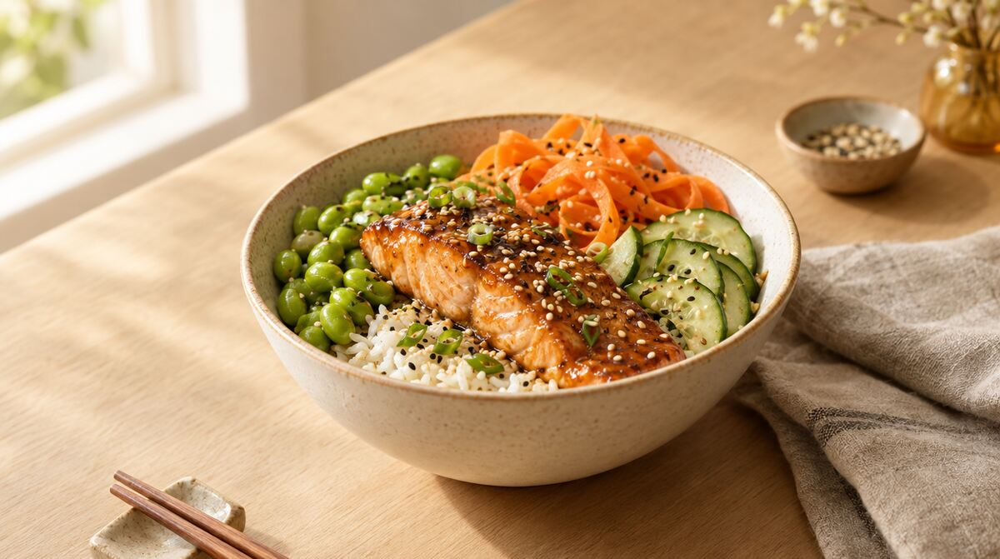
Honigmamas Teriyaki-Schale
Reis-Bowl mit Teriyaki-Lachs & Edamame
25 Min. · davon aktiv 15 Min. · ergibt 2 Portionen · mit Fisch
WARUM DAS GUT TUT
Lachs liefert Omega-3 und Vitamin D, Edamame pflanzliches Eiweiß. Zwei Mahlzeiten, die kalt wie warm schmecken.
Honigmama · Band 3Vorbereitet in 10 Minuten
Honigmama · Kraft-Küche fürs erste Jahr103
V06
Reis-Bowl mit Teriyaki-Lachs & Edamame
25 Min. · davon aktiv 15 Min. · ergibt 2 Portionen · mit Fisch
ZUTATEN
150 g Vollkornreis
2 Stücke (à 130 g) Lachsfilet
3 EL Sojasauce
1 EL Honig
1 TL geriebener Ingwer
150 g TK-Edamame
1 Möhre
½ Salatgurke
1 TL Sesam
Allergene: Fisch, Soja, glutenhaltiges Getreide (Sojasauce), Sesam. Etiketten prüfen.
SCHRITT FÜR SCHRITT
1Reis nach Packungsangabe kochen.
2Sojasauce, Honig und Ingwer verrühren, Lachs damit bestreichen und bei 200 °C 12–15 Minuten im Ofen garen.
3Edamame 4 Minuten kochen.
4Möhre und Gurke in Streifen schneiden.
5Alles auf zwei Schalen verteilen, mit Sesam bestreuen.
SCHNELLER GEHT'S
Lachs kalt in der Bowl essen: Er hält gekühlt 2 Tage.
FRISCH HALTEN
Im Kühlschrank bis zu 2 Tage.
Honigmama · Band 3Vorbereitet in 10 Minuten
Honigmama · Kraft-Küche fürs erste Jahr104
V07Vorbereitet in 10 Minuten
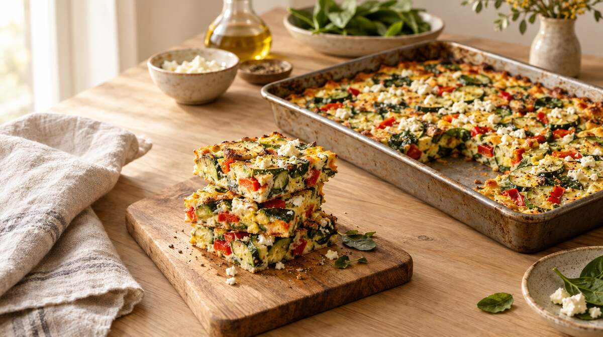
Honigmamas Blechfrittata
Gemüse-Frittata vom Blech
30 Min. · davon aktiv 10 Min. · ergibt 12 Stücke · vegetarisch
WARUM DAS GUT TUT
Zwölf eiweißreiche Portionen auf einmal: kalt als Snack, warm als Abendessen, im Brot als Mittag.
Honigmama · Band 3Vorbereitet in 10 Minuten
Honigmama · Kraft-Küche fürs erste Jahr105
V07
Gemüse-Frittata vom Blech
30 Min. · davon aktiv 10 Min. · ergibt 12 Stücke · vegetarisch
ZUTATEN
10 Eier
200 ml Milch
1 rote Paprika
1 Zucchini
150 g Babyspinat
150 g Feta
4 Frühlingszwiebeln
1 EL Olivenöl
Allergene: Ei, Milch. Etiketten prüfen.
SCHRITT FÜR SCHRITT
1Ofen auf 180 °C vorheizen, ein tiefes Blech (ca. 20 × 30 cm) mit Backpapier auslegen.
2Paprika und Zucchini klein würfeln, Frühlingszwiebeln in Ringe schneiden.
3Eier mit Milch, Salz und Pfeffer verquirlen.
4Gemüse und Spinat aufs Blech geben, Eiermasse darübergießen, Feta darüberbröseln.
525 Minuten backen, bis die Frittata in der Mitte fest ist. In 12 Stücke schneiden.
SCHNELLER GEHT'S
Stücke einzeln einfrieren – bis zu 2 Monate.
FRISCH HALTEN
Im Kühlschrank bis zu 3 Tage.
Honigmama · Band 3Vorbereitet in 10 Minuten
Honigmama · Kraft-Küche fürs erste Jahr106
V08Vorbereitet in 10 Minuten
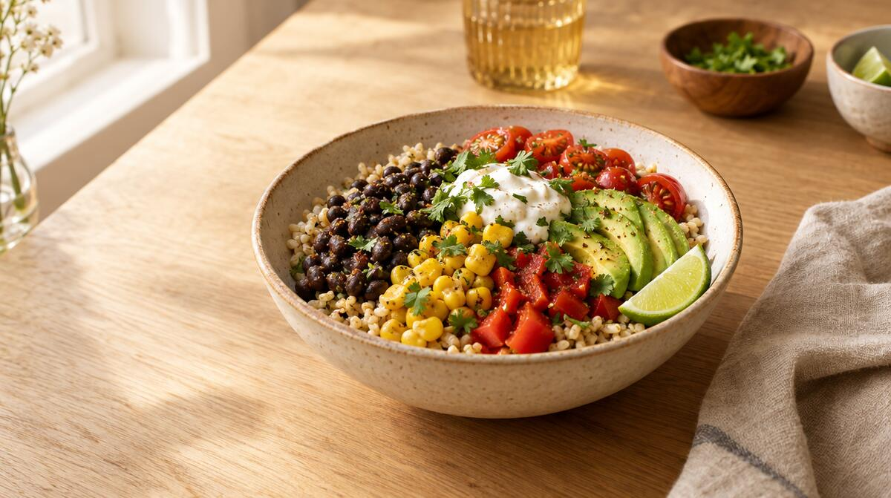
Honigmamas Burrito-Schale
Burrito-Bowl mit Bohnen, Mais & Reis
25 Min. · davon aktiv 15 Min. · ergibt 3 Bowls · vegetarisch
WARUM DAS GUT TUT
Bohnen und Reis ergänzen sich zu hochwertigem Eiweiß, Avocado liefert gesunde Fette. Bunt, satt, in drei Dosen vorbereitet.
Honigmama · Band 3Vorbereitet in 10 Minuten
Honigmama · Kraft-Küche fürs erste Jahr107
V08
Burrito-Bowl mit Bohnen, Mais & Reis
25 Min. · davon aktiv 15 Min. · ergibt 3 Bowls · vegetarisch
ZUTATEN
150 g Vollkornreis
1 Dose (400 g) schwarze Bohnen
150 g Mais (Dose)
1 rote Paprika
1 Avocado
200 g Kirschtomaten
1 Limette
150 g saure Sahne
1 TL Kreuzkümmel
Allergene: Milch. Etiketten prüfen.
SCHRITT FÜR SCHRITT
2Bohnen abspülen und mit Kreuzkümmel und 3 EL Wasser 5 Minuten erwärmen, salzen.
3Paprika würfeln, Tomaten halbieren, Mais abtropfen lassen.
4Reis, Bohnen und Gemüse auf drei Dosen verteilen.
5Avocado erst beim Essen aufschneiden, mit Limettensaft beträufeln, mit saurer Sahne servieren.
SCHNELLER GEHT'S
Mit dem gezupften Hähnchen aus Band 2 (B03) wird daraus eine Fleisch-Variante.
FRISCH HALTEN
Im Kühlschrank bis zu 3 Tage (Avocado frisch).
Honigmama · Band 3Vorbereitet in 10 Minuten
Honigmama · Kraft-Küche fürs erste Jahr108
V09Vorbereitet in 10 Minuten
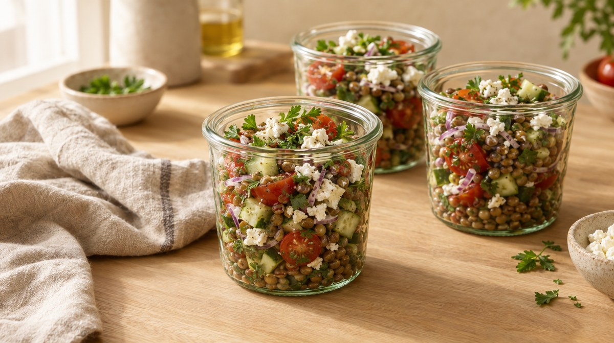
Honigmamas Linsenglas
Linsensalat mit Feta, Gurke & Kräutern
20 Min. · davon aktiv 10 Min. · ergibt 3 Portionen · vegetarisch
WARUM DAS GUT TUT
Hält gekühlt drei Tage und wird mit der Zeit sogar besser. Linsen liefern Eisen, Eiweiß und Ballaststoffe.
Honigmama · Band 3Vorbereitet in 10 Minuten
Honigmama · Kraft-Küche fürs erste Jahr109
V09
Linsensalat mit Feta, Gurke & Kräutern
20 Min. · davon aktiv 10 Min. · ergibt 3 Portionen · vegetarisch
ZUTATEN
200 g Berglinsen oder Tellerlinsen
1 Salatgurke
200 g Kirschtomaten
1 rote Zwiebel
150 g Feta
1 Bund Petersilie
3 EL Olivenöl
2 EL Rotweinessig
1 TL Senf
Allergene: Milch, Senf. Etiketten prüfen.
SCHRITT FÜR SCHRITT
1Linsen in Wasser 18 Minuten bissfest kochen, abgießen und abkühlen lassen.
2Gurke und Tomaten würfeln, Zwiebel fein hacken, Petersilie hacken.
3Öl, Essig, Senf, Salz und Pfeffer verrühren.
4Linsen mit Gemüse und Dressing mischen, Feta darüberbröseln.
5In Gläser oder Dosen füllen.
SCHNELLER GEHT'S
Gurke erst am Tag des Essens zugeben, dann bleibt sie knackig.
FRISCH HALTEN
Gekühlt bis zu 3 Tage.
Honigmama · Band 3Vorbereitet in 10 Minuten
Honigmama · Kraft-Küche fürs erste Jahr110
V10Vorbereitet in 10 Minuten
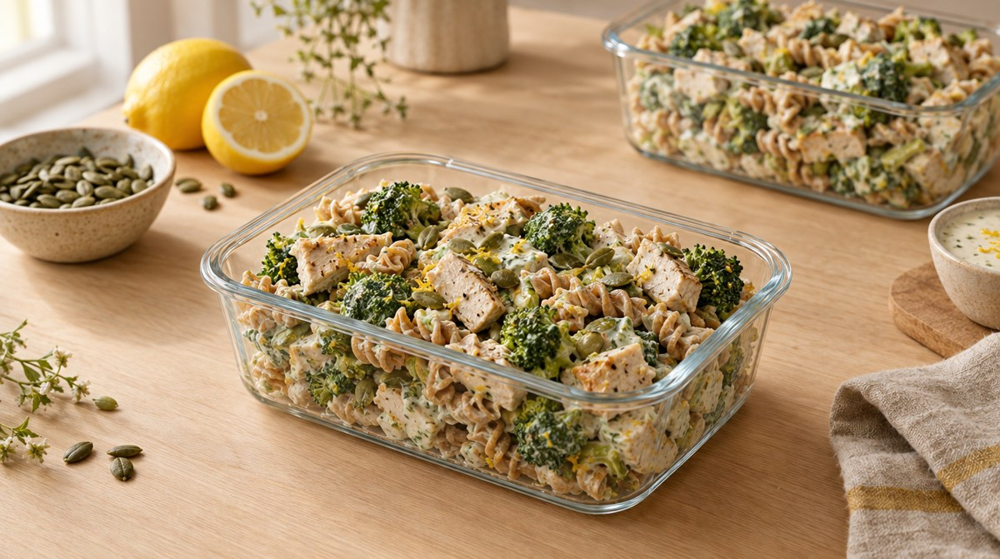
Honigmamas Nudelbox
Vollkorn-Nudelsalat mit Hähnchen & Brokkoli
20 Min. · davon aktiv 15 Min. · ergibt 4 Portionen · mit Fleisch
WARUM DAS GUT TUT
Kalt oder lauwarm essbar, schnell aus der Dose. Vollkorn und Brokkoli bringen Ballaststoffe, Hähnchen und Joghurt Eiweiß.
Honigmama · Band 3Vorbereitet in 10 Minuten
Honigmama · Kraft-Küche fürs erste Jahr111
V10
Vollkorn-Nudelsalat mit Hähnchen & Brokkoli
20 Min. · davon aktiv 15 Min. · ergibt 4 Portionen · mit Fleisch
ZUTATEN
250 g Vollkorn-Fusilli
300 g Brokkoli
300 g Hähnchenbrustfilet
1 EL Rapsöl
150 g Naturjoghurt
2 EL Frischkäse
1 Zitrone
2 EL Kürbiskerne
Allergene: Glutenhaltiges Getreide (Weizen), Milch. Etiketten prüfen.
SCHRITT FÜR SCHRITT
1Nudeln kochen, in den letzten 3 Minuten Brokkoliröschen mitgaren. Abgießen und kalt abspülen.
2Hähnchen in Öl je Seite 5 Minuten braten, bis es durchgegart ist, abkühlen lassen und in Streifen schneiden.
3Joghurt, Frischkäse, Zitronensaft, Salz und Pfeffer verrühren.
4Alles mischen und mit Kürbiskernen bestreuen.
SCHNELLER GEHT'S
Hähnchen kannst du durch eine Dose Kichererbsen ersetzen.
FRISCH HALTEN
Gekühlt bis zu 2 Tage.
Honigmama · Kapitel 05
Snacks gegen den Heißhunger
Für den Stillplatz, die Wickeltasche und den Hunger um drei Uhr nachts.
Honigmama · Band 3Snacks gegen den Heißhunger
Honigmama · Kraft-Küche fürs erste Jahr113
Kapitel 05
Snacks gegen den Heißhunger
Für den Stillplatz, die Wickeltasche und den Hunger um drei Uhr nachts. Zeiten sind Richtwerte; Zutaten, Zubereitung und Tipps stehen beim Rezept.
Honigmama · Band 3Snacks gegen den Heißhunger
Honigmama · Kraft-Küche fürs erste Jahr114
S01Snacks gegen den Heißhunger
Honigmamas Stillkörbchen
Snackbox: Käse, Trauben & Vollkorncracker
5 Min. · davon aktiv 5 Min. · ergibt 1 Box · vegetarisch
WARUM DAS GUT TUT
Eiweiß aus Käse, gesunde Fette aus Nüssen, Vitamin C aus Obst und Paprika – eine kleine Mahlzeit, die nicht in ein Zucker-Tief führt.
Honigmama · Band 3Snacks gegen den Heißhunger
Honigmama · Kraft-Küche fürs erste Jahr115
S01
Snackbox: Käse, Trauben & Vollkorncracker
5 Min. · davon aktiv 5 Min. · ergibt 1 Box · vegetarisch
ZUTATEN
60 g Bergkäse oder Gouda
1 Handvoll Trauben
4 Vollkorncracker
1 Handvoll Walnüsse
½ Paprika
1 Mandarine
Allergene: Milch, Schalenfrüchte (Walnüsse), glutenhaltiges Getreide. Etiketten prüfen.
SCHRITT FÜR SCHRITT
1Käse in Würfel schneiden.
2Trauben waschen, Paprika in Streifen schneiden.
4Alles in eine Box mit Fächern geben.
5Box an den Stillplatz stellen – zusammen mit einer großen Flasche Wasser.
SCHNELLER GEHT'S
Gleich drei Boxen für den Tag packen, wenn du morgens fünf Minuten hast.
FRISCH HALTEN
Im Kühlschrank 1 Tag.
Honigmama · Band 3Snacks gegen den Heißhunger
Honigmama · Kraft-Küche fürs erste Jahr116
S02Snacks gegen den Heißhunger
Honigmamas Apfelringe
Apfelringe mit Nussmus & Hafer-Crunch
5 Min. · davon aktiv 5 Min. · ergibt 1 Portion · vegan
WARUM DAS GUT TUT
Knackig, süß und mit Eiweiß aus Nussmus – ein Snack, der den Heißhunger auf Süßes stillt und trotzdem Ballaststoffe liefert.
Honigmama · Band 3Snacks gegen den Heißhunger
Honigmama · Kraft-Küche fürs erste Jahr117
S02
Apfelringe mit Nussmus & Hafer-Crunch
5 Min. · davon aktiv 5 Min. · ergibt 1 Portion · vegan
ZUTATEN
1 Apfel
1 EL Mandel- oder Erdnussmus
1 EL Haferflocken
1 TL Kakao-Nibs oder Schokoraspel
1 Prise Zimt
Allergene: Schalenfrüchte oder Erdnüsse, glutenhaltiges Getreide (Hafer). Etiketten prüfen.
SCHRITT FÜR SCHRITT
1Apfel waschen und das Kerngehäuse ausstechen.
2In 5 dicke Ringe schneiden.
3Mit Nussmus bestreichen.
4Mit Haferflocken, Kakao-Nibs und Zimt bestreuen.
SCHNELLER GEHT'S
Apfelringe mit Zitronensaft beträufeln, dann werden sie nicht braun.
FRISCH HALTEN
Frisch essen.
Honigmama · Band 3Snacks gegen den Heißhunger
Honigmama · Kraft-Küche fürs erste Jahr118
S03Snacks gegen den Heißhunger
Honigmamas Grüne Bohnen
Edamame mit Meersalz & Limette
6 Min. · davon aktiv 2 Min. · ergibt 2 Portionen · vegan
WARUM DAS GUT TUT
Edamame sind junge Sojabohnen mit reichlich Eiweiß und Folat. Ein salziger Snack, der beschäftigt – ideal bei Heißhunger am Abend.
Honigmama · Band 3Snacks gegen den Heißhunger
Honigmama · Kraft-Küche fürs erste Jahr119
S03
Edamame mit Meersalz & Limette
6 Min. · davon aktiv 2 Min. · ergibt 2 Portionen · vegan
ZUTATEN
300 g TK-Edamame in der Schote
1 Limette
1 Prise Meersalz
1 Prise Chiliflocken (optional)
Allergene: Soja. Etiketten prüfen.
SCHRITT FÜR SCHRITT
2Edamame 5 Minuten kochen.
4Mit Limettensaft, Meersalz und nach Wunsch Chili würzen.
5Bohnen aus der Schote direkt in den Mund drücken.
SCHNELLER GEHT'S
Eine Packung im Tiefkühler ist ein Snack-Notvorrat für jede Lebenslage.
FRISCH HALTEN
Gekocht im Kühlschrank 2 Tage, auch kalt lecker.
Honigmama · Band 3Snacks gegen den Heißhunger
Honigmama · Kraft-Küche fürs erste Jahr120
S04Snacks gegen den Heißhunger
Honigmamas Gurkendip
Tzatziki mit Gemüsesticks
10 Min. · davon aktiv 10 Min. · ergibt 4 Portionen · vegetarisch
WARUM DAS GUT TUT
Joghurt liefert Eiweiß und Calcium, das Gemüse Vitamine und Biss. Ein Snack, den man in großen Mengen essen kann.
Honigmama · Band 3Snacks gegen den Heißhunger
Honigmama · Kraft-Küche fürs erste Jahr121
S04
Tzatziki mit Gemüsesticks
10 Min. · davon aktiv 10 Min. · ergibt 4 Portionen · vegetarisch
ZUTATEN
400 g griechischer Joghurt
½ Salatgurke
1 Zehe Knoblauch
1 EL Olivenöl
1 TL getrockneter Dill oder frische Minze
2 Möhren
1 Kohlrabi
1 Paprika
Allergene: Milch. Etiketten prüfen.
SCHRITT FÜR SCHRITT
1Gurke grob raspeln, salzen und nach 5 Minuten kräftig ausdrücken.
2Mit Joghurt, geriebenem Knoblauch, Öl und Dill verrühren.
3Mit Salz und Pfeffer abschmecken.
4Möhren, Kohlrabi und Paprika in Sticks schneiden.
5Sticks in einem Glas mit etwas Wasser im Kühlschrank aufbewahren.
SCHNELLER GEHT'S
Gemüsesticks im Wasserglas bleiben 4 Tage knackig.
FRISCH HALTEN
Tzatziki im Kühlschrank bis zu 3 Tage.
Honigmama · Band 3Snacks gegen den Heißhunger
Honigmama · Kraft-Küche fürs erste Jahr122
S05Snacks gegen den Heißhunger
Honigmamas Kinoabend
Zimt-Popcorn aus dem Topf
8 Min. · davon aktiv 8 Min. · ergibt 2 Portionen · vegan
WARUM DAS GUT TUT
Popcorn ist ein Vollkorn-Snack mit Ballaststoffen und, selbst gemacht, mit wenig Zucker und Fett. Für den Serienabend nach einem langen Tag.
Honigmama · Band 3Snacks gegen den Heißhunger
Honigmama · Kraft-Küche fürs erste Jahr123
S05
Zimt-Popcorn aus dem Topf
8 Min. · davon aktiv 8 Min. · ergibt 2 Portionen · vegan
ZUTATEN
60 g Popcornmais
1 EL Kokosöl
1 TL Zimt
1 TL Honig oder Ahornsirup
Allergene: Keine der 14 Hauptallergene in den Grundzutaten. Etiketten prüfen.
SCHRITT FÜR SCHRITT
1Öl in einem großen Topf mit Deckel erhitzen.
2Mais zugeben, Deckel auflegen.
3Bei mittlerer Hitze unter gelegentlichem Schütteln poppen lassen, bis es kaum noch knallt.
4Vom Herd nehmen, Honig erwärmen und darüberträufeln.
5Mit Zimt bestreuen und durchschwenken.
SCHNELLER GEHT'S
Popcorn ist für Babys und Kleinkinder wegen Verschluckungsgefahr nicht geeignet – außer Reichweite stellen.
FRISCH HALTEN
In einer Dose 2 Tage knusprig.
Honigmama · Band 3Snacks gegen den Heißhunger
Honigmama · Kraft-Küche fürs erste Jahr124
S06Snacks gegen den Heißhunger
Honigmamas Birnenschale
Hüttenkäse mit Birne & Walnüssen
4 Min. · davon aktiv 4 Min. · ergibt 1 Portion · vegetarisch
WARUM DAS GUT TUT
Hüttenkäse ist einer der eiweißreichsten Snacks überhaupt – ideal gegen den Hunger in der Nacht, weil er lange satt macht.
Honigmama · Band 3Snacks gegen den Heißhunger
Honigmama · Kraft-Küche fürs erste Jahr125
S06
Hüttenkäse mit Birne & Walnüssen
4 Min. · davon aktiv 4 Min. · ergibt 1 Portion · vegetarisch
ZUTATEN
200 g Hüttenkäse
1 reife Birne
1 EL Walnüsse
1 TL Honig
1 Prise Zimt
Allergene: Milch, Schalenfrüchte (Walnüsse). Etiketten prüfen.
SCHRITT FÜR SCHRITT
1Birne waschen und würfeln.
2Hüttenkäse in eine Schale geben.
4Walnüsse grob hacken und darüberstreuen.
5Mit Honig und Zimt verfeinern.
SCHNELLER GEHT'S
Birne durch jede Frucht der Saison ersetzen.
FRISCH HALTEN
Frisch essen.
Honigmama · Band 3Snacks gegen den Heißhunger
Honigmama · Kraft-Küche fürs erste Jahr126
S07Snacks gegen den Heißhunger
Honigmamas Knackbrot
Vollkorn-Knäcke mit Avocado & Ei
10 Min. · davon aktiv 5 Min. · ergibt 1 Portion · vegetarisch
WARUM DAS GUT TUT
Gesunde Fette aus Avocado und Eiweiß aus dem Ei: Ein kleiner Snack, der wie eine Mahlzeit wirkt.
Honigmama · Band 3Snacks gegen den Heißhunger
Honigmama · Kraft-Küche fürs erste Jahr127
S07
Vollkorn-Knäcke mit Avocado & Ei
10 Min. · davon aktiv 5 Min. · ergibt 1 Portion · vegetarisch
ZUTATEN
2 Scheiben Vollkorn-Knäckebrot
½ Avocado
1 hart gekochtes Ei
1 Prise Chiliflocken oder Kresse
1 Spritzer Zitronensaft
Allergene: Ei, glutenhaltiges Getreide. Etiketten prüfen.
SCHRITT FÜR SCHRITT
1Avocado mit Zitronensaft, Salz und Pfeffer zerdrücken.
2Auf das Knäckebrot streichen.
3Ei in Scheiben schneiden.
5Mit Chili oder Kresse bestreuen.
SCHNELLER GEHT'S
Hart gekochte Eier auf Vorrat (siehe M05) machen diesen Snack zum Zwei-Minuten-Ding.
FRISCH HALTEN
Frisch essen.
Honigmama · Band 3Snacks gegen den Heißhunger
Honigmama · Kraft-Küche fürs erste Jahr128
S08Snacks gegen den Heißhunger
Honigmamas Frostperlen
Gefrorene Joghurt-Beeren-Drops
10 Min. · davon aktiv 10 Min. · ergibt ca. 40 Drops · vegetarisch
WARUM DAS GUT TUT
Ein kühles, süßes Mitbringsel aus dem Gefrierfach – mit Eiweiß und Calcium aus Joghurt statt nur Zucker.
Honigmama · Band 3Snacks gegen den Heißhunger
Honigmama · Kraft-Küche fürs erste Jahr129
S08
Gefrorene Joghurt-Beeren-Drops
10 Min. · davon aktiv 10 Min. · ergibt ca. 40 Drops · vegetarisch
ZUTATEN
250 g griechischer Joghurt
150 g Himbeeren oder Blaubeeren
1 EL Honig
½ TL Vanilleextrakt
Allergene: Milch. Etiketten prüfen.
SCHRITT FÜR SCHRITT
1Beeren mit einer Gabel grob zerdrücken.
2Joghurt mit Honig und Vanille verrühren, Beeren unterziehen.
3Ein Blech oder Brett mit Backpapier auslegen.
4Mit einem Teelöffel kleine Tupfen daraufsetzen.
52 Stunden einfrieren, dann in einen Gefrierbeutel umfüllen.
SCHNELLER GEHT'S
Für dein Baby nicht geeignet, solange Honig enthalten ist (im ersten Lebensjahr kein Honig).
FRISCH HALTEN
Im Gefrierfach bis zu 2 Monate.
Honigmama · Band 3Snacks gegen den Heißhunger
Honigmama · Kraft-Küche fürs erste Jahr130
S09Snacks gegen den Heißhunger
Honigmamas Dattelkugeln
Dattel-Kakao-Kugeln mit Hafer
15 Min. · davon aktiv 15 Min. · ergibt 18 Stück · vegan
WARUM DAS GUT TUT
Süß ohne Zuckerzusatz, mit Hafer für lang anhaltende Energie. In einer Dose am Stillplatz griffbereit.
Honigmama · Band 3Snacks gegen den Heißhunger
Honigmama · Kraft-Küche fürs erste Jahr131
S09
Dattel-Kakao-Kugeln mit Hafer
15 Min. · davon aktiv 15 Min. · ergibt 18 Stück · vegan
ZUTATEN
150 g entsteinte Datteln
100 g zarte Haferflocken
2 EL Mandelmus
2 EL Kakao
1 Prise Salz
2 EL Kokosraspel
Allergene: Glutenhaltiges Getreide (Hafer), Schalenfrüchte (Mandeln). Etiketten prüfen.
SCHRITT FÜR SCHRITT
1Datteln 10 Minuten in warmem Wasser einweichen, abgießen.
2Datteln, Haferflocken, Mandelmus, Kakao und Salz im Mixer zu einer klebrigen Masse mixen.
3Mit feuchten Händen 18 Kugeln formen.
4In Kokosraspeln wälzen und kühl stellen.
SCHNELLER GEHT'S
Gleich doppelte Menge machen und die Hälfte einfrieren.
FRISCH HALTEN
Gekühlt bis zu 1 Woche, eingefroren 3 Monate.
Honigmama · Band 3Snacks gegen den Heißhunger
Honigmama · Kraft-Küche fürs erste Jahr132
S10Snacks gegen den Heißhunger
Honigmamas Gemüsechips
Ofen-Kichererbsen mit Paprika
40 Min. · davon aktiv 5 Min. · ergibt 4 Portionen · vegan
WARUM DAS GUT TUT
Knuspriger, herzhafter Snack mit Eiweiß und Ballaststoffen – eine sättigende Alternative zu Chips.
Honigmama · Band 3Snacks gegen den Heißhunger
Honigmama · Kraft-Küche fürs erste Jahr133
S10
Ofen-Kichererbsen mit Paprika
40 Min. · davon aktiv 5 Min. · ergibt 4 Portionen · vegan
ZUTATEN
2 Dosen (à 400 g) Kichererbsen
1 EL Olivenöl
1 TL edelsüßes Paprikapulver
½ TL Kreuzkümmel
Allergene: Keine der 14 Hauptallergene. Etiketten prüfen.
SCHRITT FÜR SCHRITT
1Ofen auf 200 °C vorheizen. Kichererbsen abspülen und mit einem Küchentuch gut trocken tupfen.
2Mit Öl, Gewürzen und etwas Salz mischen.
3Auf einem Blech verteilen und 30–35 Minuten rösten, nach der Hälfte wenden.
4Auf dem Blech abkühlen lassen – dabei werden sie knusprig.
SCHNELLER GEHT'S
Gleich zwei Bleche machen; in einem offenen Glas bleiben sie knusprig.
FRISCH HALTEN
Locker abgedeckt bis zu 3 Tage.
Honigmama · Kapitel 06
Süßes mit Sinn
Süß darf sein – am besten mit Obst, Hafer und etwas, das wirklich satt macht.
Honigmama · Band 3Süßes mit Sinn
Honigmama · Kraft-Küche fürs erste Jahr135
Kapitel 06
Süßes mit Sinn
Süß darf sein – am besten mit Obst, Hafer und etwas, das wirklich satt macht. Zeiten sind Richtwerte; Zutaten, Zubereitung und Tipps stehen beim Rezept.
Honigmama · Band 3Süßes mit Sinn
Honigmama · Kraft-Küche fürs erste Jahr136
Z01Süßes mit Sinn
Honigmamas Samtcreme
Schoko-Avocado-Mousse
10 Min. · davon aktiv 10 Min. · ergibt 4 Gläschen · vegan
WARUM DAS GUT TUT
Cremig wie Mousse au Chocolat, aber mit gesunden Fetten aus Avocado und ohne Sahne. Kakao enthält Magnesium – und gute Laune.
Honigmama · Band 3Süßes mit Sinn
Honigmama · Kraft-Küche fürs erste Jahr137
Z01
Schoko-Avocado-Mousse
10 Min. · davon aktiv 10 Min. · ergibt 4 Gläschen · vegan
ZUTATEN
2 reife Avocados
1 reife Banane
3 EL Kakaopulver
3 EL Ahornsirup oder Honig
4 EL Milch oder Haferdrink
1 Prise Salz
1 Handvoll Himbeeren
Allergene: Milch (oder Hafer: Gluten), je nach Getränk. Etiketten prüfen.
SCHRITT FÜR SCHRITT
1Avocados halbieren und das Fruchtfleisch herauslöffeln.
2Mit Banane, Kakao, Sirup, Milch und Salz im Mixer sehr glatt pürieren.
3Abschmecken: mehr Kakao für herb, mehr Sirup für süß.
4In Gläser füllen und 30 Minuten kühlen.
5Mit Himbeeren servieren.
SCHNELLER GEHT'S
Niemand schmeckt die Avocado heraus – perfekt, wenn Besuch kommt.
FRISCH HALTEN
Abgedeckt im Kühlschrank bis zu 2 Tage.
Honigmama · Band 3Süßes mit Sinn
Honigmama · Kraft-Küche fürs erste Jahr138
Z02Süßes mit Sinn
Honigmamas Keksdose
Haferkekse mit Schokostückchen
25 Min. · davon aktiv 10 Min. · ergibt 20 Stück · vegetarisch
WARUM DAS GUT TUT
Echte Kekse – aber mit Hafer und Vollkorn, weniger Zucker als üblich und dunkler Schokolade. Genuss ohne schlechtes Gewissen.
Honigmama · Band 3Süßes mit Sinn
Honigmama · Kraft-Küche fürs erste Jahr139
Z02
Haferkekse mit Schokostückchen
25 Min. · davon aktiv 10 Min. · ergibt 20 Stück · vegetarisch
ZUTATEN
100 g weiche Butter
60 g brauner Zucker
1 Ei
150 g zarte Haferflocken
100 g Dinkel-Vollkornmehl
½ TL Natron
70 g Zartbitterschokolade
Allergene: Milch, Ei, glutenhaltiges Getreide. Schokolade: ggf. Milch. Etiketten prüfen.
SCHRITT FÜR SCHRITT
1Ofen auf 180 °C vorheizen, Blech mit Backpapier belegen.
2Butter und Zucker cremig rühren, Ei unterrühren.
3Haferflocken, Mehl, Natron und eine Prise Salz untermischen. Schokolade hacken und unterheben.
420 Kugeln formen, aufs Blech setzen und flach drücken.
512 Minuten backen – sie werden beim Abkühlen fest.
SCHNELLER GEHT'S
Teigkugeln einfrieren und bei Bedarf einzeln frisch backen (2 Minuten länger).
FRISCH HALTEN
In der Dose 1 Woche.
Honigmama · Band 3Süßes mit Sinn
Honigmama · Kraft-Küche fürs erste Jahr140
Z03Süßes mit Sinn
Honigmamas Beerenwolke
Quark-Beeren-Auflauf
40 Min. · davon aktiv 10 Min. · ergibt 4 Portionen · vegetarisch
WARUM DAS GUT TUT
Ein Dessert, das gleichzeitig eine eiweißreiche Mahlzeit ist: Quark liefert besonders viel Eiweiß, Beeren Vitamin C.
Honigmama · Band 3Süßes mit Sinn
Honigmama · Kraft-Küche fürs erste Jahr141
Z03
Quark-Beeren-Auflauf
40 Min. · davon aktiv 10 Min. · ergibt 4 Portionen · vegetarisch
ZUTATEN
500 g Magerquark
2 Eier
50 g Grieß
2 EL Honig
1 Bio-Zitrone
300 g TK-Beeren
1 TL Vanilleextrakt
Allergene: Milch, Ei, glutenhaltiges Getreide (Grieß). Etiketten prüfen.
SCHRITT FÜR SCHRITT
1Ofen auf 180 °C vorheizen, eine Auflaufform fetten.
2Quark, Eier, Grieß, Honig, Zitronenabrieb und Vanille glatt rühren.
3Beeren unaufgetaut in die Form geben.
4Quarkmasse darüber verteilen.
530 Minuten backen, bis die Oberfläche goldgelb ist. Warm oder kalt essen.
SCHNELLER GEHT'S
Kalt am nächsten Morgen ist er ein gutes Frühstück.
FRISCH HALTEN
Im Kühlschrank bis zu 2 Tage.
Honigmama · Band 3Süßes mit Sinn
Honigmama · Kraft-Küche fürs erste Jahr142
Z04Süßes mit Sinn
Honigmamas Bananeneis
Bananen-Nicecream mit Erdnuss
5 Min. · davon aktiv 5 Min. · ergibt 2 Portionen · vegan
WARUM DAS GUT TUT
Eis aus nur einer Frucht: Die Banane bringt die Süße, Erdnussmus Eiweiß. Perfekt, um überreife Bananen zu retten.
Honigmama · Band 3Süßes mit Sinn
Honigmama · Kraft-Küche fürs erste Jahr143
Z04
Bananen-Nicecream mit Erdnuss
5 Min. · davon aktiv 5 Min. · ergibt 2 Portionen · vegan
ZUTATEN
3 reife Bananen (gefroren)
1 EL Erdnussmus
2 EL Milch oder Haferdrink
1 TL Kakaopulver (optional)
Allergene: Erdnüsse, ggf. Milch. Etiketten prüfen.
SCHRITT FÜR SCHRITT
1Bananen am Vortag schälen, in Scheiben schneiden und einfrieren.
2Gefrorene Bananen 5 Minuten antauen lassen.
3Mit Erdnussmus und Milch im starken Mixer cremig pürieren.
4Nach Wunsch Kakao zugeben.
5Sofort als Softeis essen.
SCHNELLER GEHT'S
Überreife Bananen immer gleich geschält einfrieren – dann ist Eis jederzeit möglich.
FRISCH HALTEN
Frisch essen; nachgefroren wird sie hart.
Honigmama · Band 3Süßes mit Sinn
Honigmama · Kraft-Küche fürs erste Jahr144
Z05Süßes mit Sinn
Honigmamas Streuselglück
Apfel-Crumble mit Haferstreuseln
35 Min. · davon aktiv 10 Min. · ergibt 4 Portionen · vegetarisch
WARUM DAS GUT TUT
Mehr Frucht als Teig, Hafer und Mandeln statt nur Mehl und Zucker. Warm mit Joghurt ein Dessert, das auch nach Frühstück schmeckt.
Honigmama · Band 3Süßes mit Sinn
Honigmama · Kraft-Küche fürs erste Jahr145
Z05
Apfel-Crumble mit Haferstreuseln
35 Min. · davon aktiv 10 Min. · ergibt 4 Portionen · vegetarisch
ZUTATEN
4 Äpfel
1 TL Zimt
1 Zitrone
80 g kernige Haferflocken
50 g Dinkel-Vollkornmehl
40 g gehackte Mandeln
60 g kalte Butter
2 EL Honig
Allergene: Milch, Schalenfrüchte (Mandeln), glutenhaltiges Getreide. Etiketten prüfen.
SCHRITT FÜR SCHRITT
1Ofen auf 190 °C vorheizen.
2Äpfel entkernen, würfeln, mit Zimt und Zitronensaft in eine Form geben.
3Haferflocken, Mehl, Mandeln, Butter in Stückchen und Honig zu Streuseln verkneten.
4Streusel über die Äpfel geben.
525 Minuten goldbraun backen. Mit Joghurt servieren.
SCHNELLER GEHT'S
Streusel auf Vorrat einfrieren und direkt gefroren über Obst streuen.
FRISCH HALTEN
Im Kühlschrank bis zu 2 Tage.
Honigmama · Band 3Süßes mit Sinn
Honigmama · Kraft-Küche fürs erste Jahr146
Z06Süßes mit Sinn
Honigmamas Kindheitsschüssel
Milchreis mit Zimt-Pflaumen
40 Min. · davon aktiv 10 Min. · ergibt 4 Portionen · vegetarisch
WARUM DAS GUT TUT
Milchreis liefert Calcium und Eiweiß aus Milch, die Pflaumen Ballaststoffe – und das Ganze ist Seelentröster pur.
Honigmama · Band 3Süßes mit Sinn
Honigmama · Kraft-Küche fürs erste Jahr147
Z06
Milchreis mit Zimt-Pflaumen
40 Min. · davon aktiv 10 Min. · ergibt 4 Portionen · vegetarisch
ZUTATEN
1 l Milch
150 g Milchreis
1 EL Zucker
1 Prise Salz
400 g Pflaumen (frisch oder TK)
1 TL Zimt
1 EL Honig
Allergene: Milch. Etiketten prüfen.
SCHRITT FÜR SCHRITT
1Milch mit Zucker und Salz aufkochen, Reis einrühren.
2Bei kleinster Hitze zugedeckt 30 Minuten quellen lassen, ab und zu umrühren.
3Pflaumen entsteinen und vierteln.
4Mit Zimt, Honig und 3 EL Wasser 5 Minuten weich dünsten.
5Milchreis mit warmen Pflaumen servieren.
SCHNELLER GEHT'S
Milchreis ohne Honig-Pflaumen ist ab Beikost auch für dein Baby geeignet (dann ohne Zucker).
FRISCH HALTEN
Im Kühlschrank bis zu 3 Tage, kalt oder warm.
Honigmama · Band 3Süßes mit Sinn
Honigmama · Kraft-Küche fürs erste Jahr148
Z07Süßes mit Sinn
Honigmamas Bratapfel
Ofenapfel mit Hafer-Nuss-Füllung
35 Min. · davon aktiv 10 Min. · ergibt 4 Stück · vegetarisch
WARUM DAS GUT TUT
Warmes Dessert mit Obst als Basis, wenig Zucker und Hafer für die Sättigung – passt auch als süßes Frühstück.
Honigmama · Band 3Süßes mit Sinn
Honigmama · Kraft-Küche fürs erste Jahr149
Z07
Ofenapfel mit Hafer-Nuss-Füllung
35 Min. · davon aktiv 10 Min. · ergibt 4 Stück · vegetarisch
ZUTATEN
4 säuerliche Äpfel
40 g zarte Haferflocken
30 g gehackte Walnüsse
1 EL Butter
1 EL Ahornsirup
1 TL Zimt
150 g Naturjoghurt
Allergene: Glutenhaltiges Getreide (Hafer), Schalenfrüchte (Walnüsse), Milch. Etiketten prüfen.
SCHRITT FÜR SCHRITT
1Ofen auf 180 °C vorheizen. Äpfel waschen und das Kerngehäuse ausstechen.
2Haferflocken, Walnüsse, weiche Butter, Ahornsirup und Zimt mischen.
3Füllung in die Äpfel drücken, Äpfel in eine Form setzen.
425 Minuten backen, bis die Äpfel weich sind.
SCHNELLER GEHT'S
Die Füllung lässt sich vorbereiten und 3 Tage im Kühlschrank lagern.
FRISCH HALTEN
Gebacken gekühlt 2 Tage, kurz aufwärmen.
Honigmama · Band 3Süßes mit Sinn
Honigmama · Kraft-Küche fürs erste Jahr150
Z08Süßes mit Sinn
Honigmamas Schokopudding
Schoko-Pudding mit Banane
15 Min. · davon aktiv 10 Min. · ergibt 4 Gläschen · vegetarisch
WARUM DAS GUT TUT
Ein selbst gemachter Pudding mit weniger Zucker als viele Fertigprodukte; Milch liefert Calcium, die Banane süßt mit.
Honigmama · Band 3Süßes mit Sinn
Honigmama · Kraft-Küche fürs erste Jahr151
Z08
Schoko-Pudding mit Banane
15 Min. · davon aktiv 10 Min. · ergibt 4 Gläschen · vegetarisch
ZUTATEN
500 ml Milch
2 EL Speisestärke
2 EL Kakao
1 reife Banane
2 EL Ahornsirup
1 Prise Salz
Allergene: Milch. Etiketten prüfen.
SCHRITT FÜR SCHRITT
1Stärke und Kakao mit 6 EL kalter Milch glatt rühren.
2Restliche Milch mit zerdrückter Banane, Ahornsirup und Salz aufkochen.
3Stärkemischung einrühren und unter Rühren 1 Minute köcheln, bis der Pudding andickt.
4In Gläser füllen und abkühlen lassen.
SCHNELLER GEHT'S
Mit Haferdrink wird er vegan – dann 1 EL mehr Stärke nehmen.
FRISCH HALTEN
Gekühlt bis zu 3 Tage.
Honigmama · Band 3Wochenplan
Honigmama · Kraft-Küche fürs erste Jahr152
Flexibler Wochenplan
Woche 1 · Ankommen im Alltag
Einfache Gerichte, viel Abwechslung, Reste werden zum Mittagessen. REST = gekochte Portion vom Vortag, gekühlt aufbewahrt.
| Tag | Frühstück | Mittag | Abend |
|---|
| Mo | Erdnussbutter-Bananen-Toast mit Leinsamen
F03 · S. 16 | Couscous-Salat mit Kichererbsen, Gurke & Minze
M02 · S. 36 | Spaghetti mit Hack-Zucchini-Soße
A05 · S. 70 |
| Di | Hüttenkäse-Brot mit Tomate & Kresse
F06 · S. 22 | REST Couscous-Salat mit Kichererbsen, Gurke & Minze
M02 · S. 36 | Lachs vom Blech mit Kartoffeln & grünen Bohnen
A01 · S. 62 |
| Mi | Frühstücks-Wrap mit Rührei & Avocado
F01 · S. 12 | REST Spaghetti mit Hack-Zucchini-Soße
A05 · S. 70 | Putenbällchen in Tomatensoße mit Reis
A06 · S. 72 |
| Do | Erdnussbutter-Bananen-Toast mit Leinsamen
F03 · S. 16 | Gebratener Reis mit Ei & Erbsen
M07 · S. 46 | Schnelle Nudelsuppe mit Ei & Pak Choi
M05 · S. 42 |
| Fr | Hüttenkäse-Brot mit Tomate & Kresse
F06 · S. 22 | REST Putenbällchen in Tomatensoße mit Reis
A06 · S. 72 | Spätzle-Gemüse-Pfanne mit Käse
A09 · S. 78 |
| Sa | Käse-Omelett-Röllchen mit Schinken
F08 · S. 26 | Quesadillas mit Bohnen, Mais & Käse
M06 · S. 44 | Rinder-Frikadellen mit Kartoffelpüree & Möhren
A10 · S. 80 |
| So | Herzhafter Haferbrei mit Spiegelei & Spinat
F04 · S. 18 | REST Rinder-Frikadellen mit Kartoffelpüree & Möhren
A10 · S. 80 | Kürbis-Risotto aus dem Ofen
A04 · S. 68 |
Snacks & Süßes der Woche
Snackbox: Käse, Trauben & Vollkorncracker (S01) · Tzatziki mit Gemüsesticks (S04) · Quark-Beeren-Auflauf (Z03)
Honigmama · Band 3Einkaufsliste
Honigmama · Kraft-Küche fürs erste Jahr153
Woche 1 · Ankommen im Alltag
Deine Einkaufsliste
Summen für alle Rezepte der Woche (einmal gekocht, Reste eingerechnet). Frühstücke sind oft für eine Person – für zwei verdoppeln.
Obst & Gemüse
BananeF032
SalatgurkeM02 F06 S042
KirschtomatenM02200 g
Minze oder PetersilieM021 Bund
ZitroneM021
ZwiebelA05 A09 A043
ZucchiniA052
MöhreA05 M07 M053
TomateF06 F013
KresseF062 Beete
kleine KartoffelnA01600 g
grüne BohnenA01400 g
Bio-ZitroneA01 Z032
DillA01½ Bund
reife AvocadoF011
BabyspinatF01 F04 A043 Handvoll
kleine ZwiebelA06 A102
FrühlingszwiebelnM07 M054
IngwerM0515 g
Pak ChoiM052
BrokkoliA091
MöhrenA09 S044
SchnittlauchA09½ Bund
RucolaF081 Handvoll
rote PaprikaM061
LimetteM061
mehligkochende KartoffelnA10800 g
MöhrenA10500 g
Hokkaido-KürbisA04500 g
TraubenS011 Handvoll
PaprikaS01 S041½
MandarineS011
KnoblauchS041 Zehe
KohlrabiS041
Kühlregal
FetaM02100 g
ParmesanA05 A0470 g
HüttenkäseF06200 g
EierF01 M07 M05 F08 Z0315
ButterF01 F08 F043 TL
geriebener KäseF0140 g
EiA06 A10 F043
Spätzle (Kühlregal)A09500 g
ButterA09 A10 A043 EL
MilchA09 A10250 ml
geriebener BergkäseA09100 g
MilchF082 EL
Käse (z. B. Gouda)F084 Scheiben
geriebener CheddarM06120 g
NaturjoghurtM06150 g
geriebener ParmesanF041 EL
Bergkäse oder GoudaS0160 g
griechischer JoghurtS04400 g
MagerquarkZ03500 g
Fleisch & Fisch
RinderhackfleischA05 A10700 g
LachsfiletA01390 g
PutenhackfleischA06400 g
gekochter SchinkenF084 Scheiben
Tiefkühl
TK-ErbsenM07150 g
TK-BeerenZ03300 g
Vorrat & Konserven
VollkornbrotF034 Scheiben
Erdnussmus ohne ZuckerF034 EL
geschrotete LeinsamenF032 TL
Vollkorn-CouscousM02150 g
KichererbsenM021 Dose à 400 g
Vollkorn-SpaghettiA05300 g
passierte TomatenA05 A061 kg
RoggenvollkornbrotF064 Scheiben
Vollkorn-TortillasF01 M066
zarte HaferflockenA06 A10 F04130 g
VollkornreisA06200 g
gekochter Reis (vom Vortag, gekühlt)M07400 g
SojasauceM07 M054 EL
Udon- oder Ramen-NudelnM05150 g
KidneybohnenM061 Dose à 400 g
Mais (Dose)M06150 g
RisottoreisA04250 g
VollkorncrackerS014
WalnüsseS011 Handvoll
GrießZ0350 g
Aus dem Vorrat prüfen: Zimt, Olivenöl, getrockneter Oregano, Honig, Senf, getrockneter Basilikum, Rapsöl, Sesamöl, Gemüsebrühe, Kreuzkümmel, Chiliflocken (optional), ungesalzene Gemüsebrühe (z. B. Band 2, B01), getrockneter Dill oder frische Minze, Vanilleextrakt.
Honigmama · Band 3Wochenplan
Honigmama · Kraft-Küche fürs erste Jahr154
Flexibler Wochenplan
Woche 2 · Mehr Gemüse
Viele vegetarische Gerichte, Fisch am Samstag. REST = gekochte Portion vom Vortag, gekühlt aufbewahrt.
| Tag | Frühstück | Mittag | Abend |
|---|
| Mo | Joghurt-Hafer-Schichtglas mit Mango
F02 · S. 14 | Vollkornnudeln mit Erbsen-Pesto & Feta
M01 · S. 34 | Hirse-Gemüse-Pfanne mit Hähnchen
A03 · S. 66 |
| Di | REST Joghurt-Hafer-Schichtglas mit Mango
F02 · S. 14 | REST Hirse-Gemüse-Pfanne mit Hähnchen
A03 · S. 66 | Ofen-Blumenkohl mit Kichererbsen & Joghurtsoße
A08 · S. 76 |
| Mi | Beeren-Hafer-Smoothie zum Trinken
F05 · S. 20 | Linsensalat mit Rote Bete & Ziegenkäse
M03 · S. 38 | Selbst gemachte Fischstäbchen mit Erbsen-Kartoffel-Stampf
A02 · S. 64 |
| Do | Erdnussbutter-Bananen-Toast mit Leinsamen
F03 · S. 16 | REST Ofen-Blumenkohl mit Kichererbsen & Joghurtsoße
A08 · S. 76 | Ofen-Feta-Pasta mit Kirschtomaten & Spinat
M09 · S. 50 |
| Fr | Frühstücks-Wrap mit Rührei & Avocado
F01 · S. 12 | REST Ofen-Feta-Pasta mit Kirschtomaten & Spinat
M09 · S. 50 | Cremige Polenta mit Ofengemüse & Mozzarella
A07 · S. 74 |
| Sa | Vollkorn-Bagel mit Lachs-Frischkäse
F07 · S. 24 | Kartoffelsalat mit Räucherforelle & Gurke
M04 · S. 40 | Spaghetti mit Hack-Zucchini-Soße
A05 · S. 70 |
| So | Herzhafter Haferbrei mit Spiegelei & Spinat
F04 · S. 18 | REST Spaghetti mit Hack-Zucchini-Soße
A05 · S. 70 | Gemüse-Frittata vom Blech
V07 · S. 104 |
Snacks & Süßes der Woche
Apfelringe mit Nussmus & Hafer-Crunch (S02) · Hüttenkäse mit Birne & Walnüssen (S06) · Apfel-Crumble mit Haferstreuseln (Z05)
Honigmama · Band 3Einkaufsliste
Honigmama · Kraft-Küche fürs erste Jahr155
Woche 2 · Mehr Gemüse
Deine Einkaufsliste
Summen für alle Rezepte der Woche (einmal gekocht, Reste eingerechnet). Frühstücke sind oft für eine Person – für zwei verdoppeln.
Obst & Gemüse
reife MangoF021
BasilikumM011 Handvoll
KnoblauchM01 A08 M094 Zehen
ZitroneM01 A08 Z053
ZucchiniA03 A07 A05 V075
MöhrenA032
rote PaprikaA03 A07 V073
BlumenkohlA081
SüßkartoffelA081
PetersilieA08½ Bund
BananeF05 F032
gekochte Rote Bete (vakuumiert)M03250 g
RucolaM032 Handvoll
mehligkochende KartoffelnA02700 g
KirschtomatenM09 A07650 g
BabyspinatM09 V07250 g
reife AvocadoF011
TomateF011
BabyspinatF01 F042 Handvoll
AubergineA071
SalatgurkeF07 M041
Bio-ZitroneF071
DillF07 M041 Bund
festkochende DrillingeM04400 g
RadieschenM042
ZwiebelA051
MöhreA051
FrühlingszwiebelnV074
ApfelS021
reife BirneS061
ÄpfelZ054
Kühlregal
griechischer Joghurt (10 %)F02300 g
FetaM01 V07230 g
FrischkäseA03 F07200 g
NaturjoghurtA08 F05 M04650 g
Milch oder HaferdrinkF05200 ml
ZiegenfrischkäseM03100 g
EiA02 F042
MilchA02 V07300 ml
ButterA021 EL
Feta (Block)M09200 g
EierF01 V0714
ButterF01 F042 TL
geriebener KäseF0140 g
Milch oder WasserA071 l
ParmesanA07 A0560 g
MozzarellaA071 Kugel
geriebener ParmesanF041 EL
HüttenkäseS06200 g
kalte ButterZ0560 g
Fleisch & Fisch
HähnchenbrustfiletA03300 g
Seelachs- oder KabeljaufiletA02400 g
RäucherlachsF07100 g
RäucherforellenfiletM04150 g
RinderhackfleischA05300 g
Tiefkühl
TK-ErbsenM01 A02500 g
TK-BeerenmischungF05200 g
Vorrat & Konserven
zarte HaferflockenF02 F04110 g
gehackte HaselnüsseF022 EL
geschrotete LeinsamenF021 EL
Vollkorn-FusilliM01200 g
MandelnM012 EL
HirseA03150 g
KichererbsenA081 Dose à 400 g
zarte HaferflockenF053 EL
MandelmusF051 EL
Linsen (abgetropft ca. 260 g)M031 Dose à 400 g
WalnüsseM03 S063 EL
MehlA022 EL
Vollkorn-PaniermehlA0280 g
VollkornbrotF032 Scheiben
Erdnussmus ohne ZuckerF032 EL
geschrotete LeinsamenF031 TL
Vollkorn-SpaghettiM09 A05550 g
Vollkorn-TortillasF012
Instant-PolentaA07200 g
Vollkorn-BagelsF072
Meerrettich (Glas)M041 TL
passierte TomatenA05500 g
Mandel- oder ErdnussmusS021 EL
HaferflockenS021 EL
Kakao-Nibs oder SchokoraspelS021 TL
kernige HaferflockenZ0580 g
Dinkel-VollkornmehlZ0550 g
gehackte MandelnZ0540 g
Aus dem Vorrat prüfen: Honig, Olivenöl, Wasser oder ungesalzene Brühe, Rapsöl, Paprikapulver edelsüß, Kreuzkümmel, Balsamico, Zimt, getrockneter Oregano, Senf, Gemüsebrühe, Chiliflocken (optional).
Honigmama · Band 3Wochenplan
Honigmama · Kraft-Küche fürs erste Jahr156
Flexibler Wochenplan
Woche 3 · Vorbereitet durch die Woche
Sonntagabend oder Montag 30 Minuten vorbereiten, dann trägt dich die Woche. REST = gekochte Portion vom Vortag, gekühlt aufbewahrt.
| Tag | Frühstück | Mittag | Abend |
|---|
| Mo | Joghurt-Hafer-Schichtglas mit Mango
F02 · S. 14 | Quinoa-Bowl mit Ofengemüse & Tahin
V01 · S. 92 | Putenbällchen in Tomatensoße mit Reis
A06 · S. 72 |
| Di | REST Joghurt-Hafer-Schichtglas mit Mango
F02 · S. 14 | REST Quinoa-Bowl mit Ofengemüse & Tahin
V01 · S. 92 | Lachs vom Blech mit Kartoffeln & grünen Bohnen
A01 · S. 62 |
| Mi | Hüttenkäse-Brot mit Tomate & Kresse
F06 · S. 22 | REST Quinoa-Bowl mit Ofengemüse & Tahin
V01 · S. 92 | Spätzle-Gemüse-Pfanne mit Käse
A09 · S. 78 |
| Do | Beeren-Hafer-Smoothie zum Trinken
F05 · S. 20 | Nudelsalat mit Pesto, Tomaten & Mozzarella
V02 · S. 94 | Schnelle Nudelsuppe mit Ei & Pak Choi
M05 · S. 42 |
| Fr | Frühstücks-Wrap mit Rührei & Avocado
F01 · S. 12 | REST Nudelsalat mit Pesto, Tomaten & Mozzarella
V02 · S. 94 | Reis-Bowl mit Teriyaki-Lachs & Edamame
V06 · S. 102 |
| Sa | Käse-Omelett-Röllchen mit Schinken
F08 · S. 26 | REST Nudelsalat mit Pesto, Tomaten & Mozzarella
V02 · S. 94 | Rinder-Frikadellen mit Kartoffelpüree & Möhren
A10 · S. 80 |
| So | Herzhafter Haferbrei mit Spiegelei & Spinat
F04 · S. 18 | REST Rinder-Frikadellen mit Kartoffelpüree & Möhren
A10 · S. 80 | Kürbis-Risotto aus dem Ofen
A04 · S. 68 |
Snacks & Süßes der Woche
Edamame mit Meersalz & Limette (S03) · Vollkorn-Knäcke mit Avocado & Ei (S07) · Haferkekse mit Schokostückchen (Z02)
Honigmama · Band 3Einkaufsliste
Honigmama · Kraft-Küche fürs erste Jahr157
Woche 3 · Vorbereitet durch die Woche
Deine Einkaufsliste
Summen für alle Rezepte der Woche (einmal gekocht, Reste eingerechnet). Frühstücke sind oft für eine Person – für zwei verdoppeln.
Obst & Gemüse
reife MangoF021
SüßkartoffelV011
rote PaprikaV011
ZucchiniV011
ZitroneV011
BabyspinatV01 F01 F04 A045 Handvoll
kleine ZwiebelA06 A102
kleine KartoffelnA01600 g
grüne BohnenA01400 g
Bio-ZitroneA011
DillA01½ Bund
TomateF06 F012
SalatgurkeF06 V06¾
KresseF061 Beet
ZwiebelA09 A042
BrokkoliA091
MöhrenA092
SchnittlauchA09½ Bund
BananeF051
KirschtomatenV02250 g
RucolaV02 F083 Handvoll
IngwerM0515 g
Pak ChoiM052
MöhreM05 V062
FrühlingszwiebelnM052
reife AvocadoF011
geriebener IngwerV061 TL
mehligkochende KartoffelnA10800 g
MöhrenA10500 g
Hokkaido-KürbisA04500 g
LimetteS031
AvocadoS07½
ZitronensaftS07etwas
Kühlregal
griechischer Joghurt (10 %)F02300 g
EiA06 A10 F04 Z024
HüttenkäseF06100 g
Spätzle (Kühlregal)A09500 g
ButterA09 A10 A043 EL
MilchA09 A10250 ml
geriebener BergkäseA09100 g
NaturjoghurtF05250 g
Milch oder HaferdrinkF05200 ml
Mini-MozzarellaV021 Kugel
EierM05 F01 F0810
ButterF01 F08 F043 TL
geriebener KäseF0140 g
MilchF082 EL
Käse (z. B. Gouda)F084 Scheiben
geriebener ParmesanF041 EL
ParmesanA0440 g
hart gekochtes EiS071
weiche ButterZ02100 g
Fleisch & Fisch
PutenhackfleischA06400 g
LachsfiletA01 V06650 g
gekochter SchinkenF084 Scheiben
RinderhackfleischA10400 g
Tiefkühl
TK-BeerenmischungF05200 g
TK-EdamameV06150 g
TK-Edamame in der SchoteS03300 g
Vorrat & Konserven
zarte HaferflockenF02 A06 A10 F04 Z02340 g
gehackte HaselnüsseF022 EL
geschrotete LeinsamenF021 EL
QuinoaV01150 g
KichererbsenV011 Dose à 400 g
TahinV013 EL
passierte TomatenA06500 g
VollkornreisA06 V06350 g
RoggenvollkornbrotF062 Scheiben
zarte HaferflockenF053 EL
MandelmusF051 EL
Vollkorn-FusilliV02300 g
Basilikum-PestoV024 EL
PinienkerneV022 EL
SojasauceM05 V065 EL
Udon- oder Ramen-NudelnM05150 g
Vollkorn-TortillasF012
SesamV061 TL
RisottoreisA04250 g
Vollkorn-KnäckebrotS072 Scheiben
Dinkel-VollkornmehlZ02100 g
NatronZ02½ TL
ZartbitterschokoladeZ0270 g
Aus dem Vorrat prüfen: Honig, Olivenöl, getrockneter Basilikum, Senf, Gemüsebrühe, Sesamöl, Rapsöl, Chiliflocken (optional), ungesalzene Gemüsebrühe (z. B. Band 2, B01), Meersalz, Chiliflocken oder Kresse, brauner Zucker.
Honigmama · Band 3Wochenplan
Honigmama · Kraft-Küche fürs erste Jahr158
Flexibler Wochenplan
Woche 4 · Alles im Fluss
Mischung aus Lieblingsrezepten und neuen Ideen. REST = gekochte Portion vom Vortag, gekühlt aufbewahrt.
| Tag | Frühstück | Mittag | Abend |
|---|
| Mo | Erdnussbutter-Bananen-Toast mit Leinsamen
F03 · S. 16 | Taboulé mit Kichererbsen & Granatapfel
V04 · S. 98 | Selbst gemachte Fischstäbchen mit Erbsen-Kartoffel-Stampf
A02 · S. 64 |
| Di | Frühstücks-Wrap mit Rührei & Avocado
F01 · S. 12 | REST Taboulé mit Kichererbsen & Granatapfel
V04 · S. 98 | Ofen-Blumenkohl mit Kichererbsen & Joghurtsoße
A08 · S. 76 |
| Mi | Hüttenkäse-Brot mit Tomate & Kresse
F06 · S. 22 | Halloumi-Wrap mit Paprika & Hummus
M08 · S. 48 | Hähnchen-Caesar-Bowl mit Joghurt-Dressing
M10 · S. 52 |
| Do | Beeren-Hafer-Smoothie zum Trinken
F05 · S. 20 | Kartoffel-Linsen-Salat mit Senf-Vinaigrette
V05 · S. 100 | Cremige Polenta mit Ofengemüse & Mozzarella
A07 · S. 74 |
| Fr | Vollkorn-Bagel mit Lachs-Frischkäse
F07 · S. 24 | REST Kartoffel-Linsen-Salat mit Senf-Vinaigrette
V05 · S. 100 | Glasnudel-Salat mit Erdnuss-Dressing & Hähnchen
V03 · S. 96 |
| Sa | Käse-Omelett-Röllchen mit Schinken
F08 · S. 26 | Burrito-Bowl mit Bohnen, Mais & Reis
V08 · S. 106 | Hirse-Gemüse-Pfanne mit Hähnchen
A03 · S. 66 |
| So | Herzhafter Haferbrei mit Spiegelei & Spinat
F04 · S. 18 | Quesadillas mit Bohnen, Mais & Käse
M06 · S. 44 | Spaghetti mit Hack-Zucchini-Soße
A05 · S. 70 |
Snacks & Süßes der Woche
Zimt-Popcorn aus dem Topf (S05) · Gefrorene Joghurt-Beeren-Drops (S08) · Schoko-Avocado-Mousse (Z01) · Bananen-Nicecream mit Erdnuss (Z04) · Milchreis mit Zimt-Pflaumen (Z06)
Honigmama · Band 3Einkaufsliste
Honigmama · Kraft-Küche fürs erste Jahr159
Woche 4 · Alles im Fluss
Deine Einkaufsliste
Summen für alle Rezepte der Woche (einmal gekocht, Reste eingerechnet). Frühstücke sind oft für eine Person – für zwei verdoppeln.
Obst & Gemüse
BananeF03 F052
glatte PetersilieV042 Bund
MinzeV04½ Bund
TomatenV043
SalatgurkeV04 F06 M08 F07 V032¼
GranatapfelV04½
ZitronenV042
mehligkochende KartoffelnA02700 g
reife AvocadoF011
TomateF01 F062
BabyspinatF01 F042 Handvoll
BlumenkohlA081
SüßkartoffelA081
KnoblauchA08 M102 Zehen
ZitroneA08 M102
PetersilieA08½ Bund
KresseF061 Beet
rote PaprikaM08 A07 V03 V08 A03 M066
SalatblätterM081 Handvoll
RömersalatM101
festkochende KartoffelnV05600 g
rote ZwiebelV051
Feldsalat oder RucolaV052 Handvoll
ZucchiniA07 A03 A054
AubergineA071
KirschtomatenA07 V08450 g
Bio-ZitroneF071
DillF07½ Bund
MöhrenV03 A034
LimetteV03 V08 M063
RucolaF081 Handvoll
AvocadoV081
ZwiebelA051
MöhreA051
Himbeeren oder BlaubeerenS08150 g
reife AvocadosZ012
reife BananeZ011
HimbeerenZ011 Handvoll
reife Bananen (gefroren)Z043
Kühlregal
EiA02 F042
MilchA02 Z061,1 l
ButterA021 EL
EierF01 F088
ButterF01 F08 F043 TL
geriebener KäseF0140 g
NaturjoghurtA08 M10 F05 M06800 g
HüttenkäseF06100 g
HalloumiM08200 g
HummusM084 EL
ParmesanM10 A07 A0590 g
Milch oder HaferdrinkF05200 ml
Milch oder WasserA071 l
MozzarellaA071 Kugel
FrischkäseF07 A03200 g
MilchF082 EL
Käse (z. B. Gouda)F084 Scheiben
saure SahneV08150 g
geriebener ParmesanF041 EL
geriebener CheddarM06120 g
griechischer JoghurtS08250 g
Milch oder HaferdrinkZ01 Z046 EL
Fleisch & Fisch
Seelachs- oder KabeljaufiletA02400 g
HähnchenbrustfiletM10 V03 A03900 g
RäucherlachsF07100 g
gekochter SchinkenF084 Scheiben
RinderhackfleischA05300 g
Tiefkühl
TK-ErbsenA02250 g
TK-BeerenmischungF05200 g
Pflaumen (frisch oder TK)Z06400 g
Vorrat & Konserven
VollkornbrotF03 M104 Scheiben
Erdnussmus ohne ZuckerF032 EL
geschrotete LeinsamenF031 TL
BulgurV04120 g
KichererbsenV04 A082 Dosen à 400 g
MehlA022 EL
Vollkorn-PaniermehlA0280 g
Vollkorn-TortillasF01 M08 M068
RoggenvollkornbrotF062 Scheiben
zarte HaferflockenF053 EL
MandelmusF051 EL
BerglinsenV05150 g
Instant-PolentaA07200 g
Vollkorn-BagelsF072
GlasnudelnV03150 g
ErdnussmusV03 Z044 EL
SojasauceV032 EL
geröstete ErdnüsseV032 EL
VollkornreisV08150 g
schwarze BohnenV081 Dose à 400 g
Mais (Dose)V08 M06300 g
HirseA03150 g
zarte HaferflockenF0450 g
KidneybohnenM061 Dose à 400 g
Vollkorn-SpaghettiA05300 g
passierte TomatenA05500 g
PopcornmaisS0560 g
KakaopulverZ013 EL
Kakaopulver (optional)Z041 TL
MilchreisZ06150 g
Aus dem Vorrat prüfen: Zimt, Olivenöl, Rapsöl, Kreuzkümmel, Paprikapulver edelsüß, Senf, Apfelessig, mittelscharfer Senf, Honig oder Agavendicksaft, Honig, Wasser oder ungesalzene Brühe, Gemüsebrühe, Chiliflocken (optional), getrockneter Oregano, Kokosöl, Honig oder Ahornsirup, Vanilleextrakt, Ahornsirup oder Honig, Salz, Zucker.
Honigmama · Band 3Register
Honigmama · Kraft-Küche fürs erste Jahr160
Rezeptregister · 1 von 3
Von A bis Z
Honigmama · Band 3Register
Honigmama · Kraft-Küche fürs erste Jahr161
Rezeptregister · 2 von 3
Von A bis Z
Honigmama · Band 3Register
Honigmama · Kraft-Küche fürs erste Jahr162
Rezeptregister · 3 von 3
Von A bis Z
Honigmama · Band 3Quellen
Honigmama · Kraft-Küche fürs erste Jahr163
Quellen und weiterführende Informationen
Netzwerk Gesund ins Leben (BZfE)
Handlungsempfehlungen zur Ernährung in der Stillzeit, u. a. zu Fisch, Jod, Alkohol, Koffein und Energiebedarf. gesund-ins-leben.de
Deutsche Gesellschaft für Ernährung (DGE)
Referenzwerte für die Nährstoffzufuhr in der Stillzeit; Empfehlungen zur ausgewogenen Ernährung. dge.de
Bundesinstitut für Risikobewertung (BfR)
Verbrauchertipps zur Küchenhygiene, zum Abkühlen und Aufwärmen (u. a. Reis) sowie zu Honig im ersten Lebensjahr. bfr.bund.de
Bundeszentrum für Ernährung (BZfE)
Hinweise zum Einfrieren, Auftauen und zur Lagerdauer von Lebensmitteln. bzfe.de
Stillstudie SuSe II
Stillen und Säuglingsernährung in Deutschland (BfR/DGE-Ernährungsbericht).
Stand der Informationen: Oktober 2026. Empfehlungen können sich ändern; maßgeblich sind die aktuellen Veröffentlichungen der genannten Stellen und die Absprache mit deiner Hebamme oder Ärztin.
Honigmama · Band 3Notizen
Honigmama · Kraft-Küche fürs erste Jahr164
Platz für deine Notizen
Die Honigmama-Reihe
Band 1 · Was darf ich essen? – 70 Rezepte für die Schwangerschaft.
Band 2 · Vorkochen fürs Wochenbett – 55 Rezepte zum Einfrieren.
Band 3 · Kraft-Küche fürs erste Jahr – 65 schnelle Rezepte für Mamas mit Baby.
Alle Bände auf beequeenkitchen.com
MEINE LIEBLINGSREZEPTE & ÄNDERUNGEN